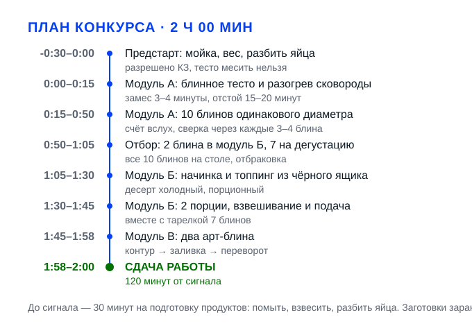
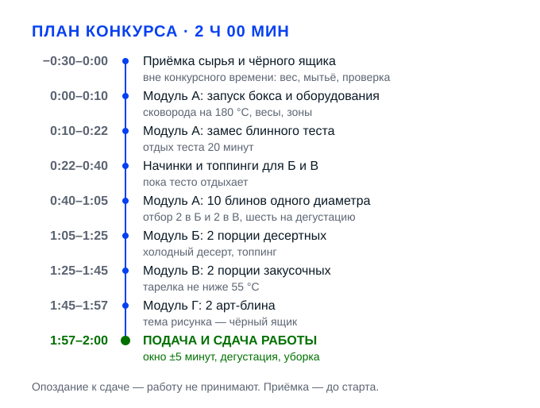
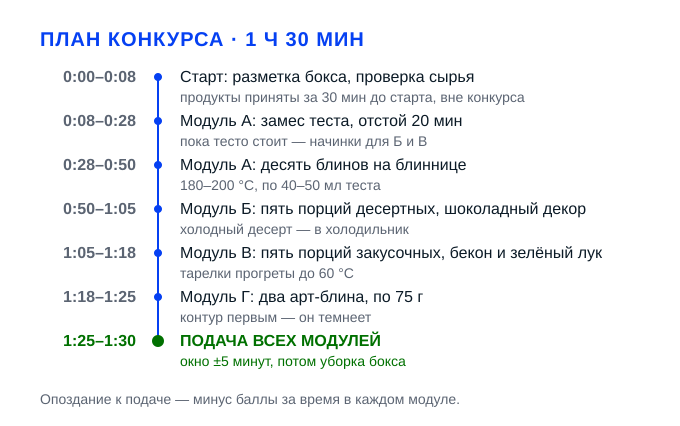

Блинопек (Р)
Задания ниже — официальные файлы «Абилимпикс» (источник: abilympics-russia.ru), разложенные по категориям. Решения написаны по тексту задания, регламенту и критериям оценки; в них указано, что именно проверяет эксперт.
Школьник
14–16 лет, базовый уровень заданияВыдержка из официального конкурсного задания: страницы, относящиеся к категории «Школьник» (стр. 8–12 источника).
Пошаговое решение
У школьников на это задание 120 минут и три модуля подряд: приготовить блинное тесто и испечь 10 блинов одинакового размера и формы, оформить и подать на дегустацию 2 порции десертных блинчиков с начинкой и топпингом, а потом нарисовать на сковороде 2 арт-блина. Два блина из десяти уходят в модуль Б, оставшиеся семь подаются на одной тарелке для дегустации одновременно с ним. Часть продуктов приходит в «чёрном ящике» и открывается только на площадке — оттуда же берётся тема рисунка. До сигнала дают 30 минут на подготовку продуктов: помыть, взвесить, разбить яйца. Исход решают три вещи: тесто одной консистенции от первого блина до последнего, одинаковый диаметр всех десяти и чистый край тарелки на подаче.

Задача 1. Развернуть бокс и разобрать чёрный ящикСтарт · 30 минут до сигнала
Бокс к сигналу должен быть готов к работе: чистая спецодежда, проверенное и взвешенное сырьё отдельно от грязной посуды, разобранный чёрный ящик и разогретая сковорода. Предстартовые 30 минут — единственное время, когда ещё можно помыть, взвесить и разбить яйца, поэтому они уходят на подготовку, а не на готовку. Всё, что участник делает в этом окне, эксперт видит и запоминает: с этого начинается оценка организации и санитарии, и она не «догоняется» позже.
Действие 1.1. Войти в бокс и пройти предстартовые 30 минут
Шаг 1.1.1
Надеваем фартук или куртку, головной убор, закрытую обувь на нескользящей подошве. Волосы убираем под колпак целиком, включая затылок, рукава подворачиваем выше локтя, часы, кольца и браслеты снимаем. Ногти коротко подстрижены, без лака и покрытия. Фартук завязываем так, чтобы он закрывал грудь и колени, но не свисал в миску с тестом и не цеплялся за ручку сковороды.
Соблюдение санитарных и гигиенических норм идёт отдельным пунктом во всех трёх модулях задания, и проверяется оно не в конце, а с момента входа в бокс. Волос в блине или след от кольца на тесте — это прямое нарушение, которое эксперт фиксирует сразу, и оно не компенсируется хорошим вкусом. Кроме того, аккуратный вид задаёт темп: участник, который в первую минуту разобрался с собой, дальше работает спокойнее и не тратит время на поправки.
Попросите волонтёра или второго человека посмотреть на вас со спины: волос не видно ни спереди, ни сзади, колпак держится, фартук застёгнут и не топорщится, обувь закрытая и сухая. Руки вымыты до запястий, ногти короткие, украшений нет. Рукава не спускаются ниже локтя — иначе при наклоне над сковородой они окажутся над продуктами.
Самая частая ошибка — надеть колпак на макушку, оставив затылок открытым: спереди всё выглядит нормально, а сзади волосы выбиваются и попадают в тесто при наклоне над сковородой. Вторая — прийти в открытой обуви: пол в боксе от масла скользкий, а падение рядом с плитой — это уже не баллы, а травма.
Эксперт осматривает участника до старта и держит его в поле зрения весь конкурс: пятна от начинки и мука на груди к середине работы тоже считаются нарушением. Отдельно он смотрит на руки в процессе — мылись ли они после сырого продукта и после того, как участник поправил колпак.
Шаг 1.1.2
Принимаем продукты по инфраструктурному списку: раскладываем всё на столе, каждую позицию сверяем по количеству и весу на весах, проверяем упаковку на вздутие и подтёки, молоко и кефир — на холод. Отмечаем галочкой в списке то, что уже проверено, чтобы не проходить по кругу дважды. На это уходит 10–12 минут из тридцати, и торопиться здесь незачем — время до сигнала не входит в конкурсные 120 минут и не отнимает их у выпечки.
После старта замена продукта идёт только через главного эксперта, и то если он сочтёт причину уважительной, а дополнительное сырьё участник привозит с собой и согласует заранее. Предстартовое окно — единственный момент, когда недостачу можно закрыть без потери времени и без переговоров. Недосмотренная позиция всплывает в середине модуля, когда перестраивать план уже поздно и приходится менять всю рецептуру на ходу.
Все строки списка отмечены, расхождения записаны на бумаге: чего нет, сколько нет, в каком виде. Сомнительный по весу продукт сразу идёт на весы — они стоят на том же столе. Яйца пересчитаны поштучно, мука проверена на сухость и отсутствие запаха сырости, молоко холодное.
Начать с готовки, не сверив список: через сорок минут выясняется, что муки хватает на восемь блинов вместо десяти, а тесто уже замешано, и пересчитывать приходится в ущерб модулю Б. Вторая ошибка — заметить недостачу и промолчать, рассчитывая «растянуть»: норму выхода всё равно проверят на взвешивании, а объяснение будет неприятным.
Эксперт смотрит, работает участник по перечню или наугад, и отдельно фиксирует, заявлены ли расхождения до старта, а не после него. Умение пройти по списку спокойно и точно он читает как организационный навык.
Шаг 1.1.3
Делаем только то, что разрешено до сигнала: моем и чистим продукты, проверяем вес, разбиваем яйца и отделяем белок от желтка. Яйцо разбиваем о ровную кромку отдельной чашки и разбиваем по одному, а переливаем в общую посуду только после того, как убедились, что оно свежее и в нём нет скорлупы. Белок отделяем через пальцы или сепаратор, желток оставляем целым, чтобы он не пошёл в белок.
Конкурсное задание прямо разрешает до старта очистить, помыть продукты, проверить вес и разбить яйцо с отделением белка — и одновременно запрещает любые другие заготовки. Граница проходит именно здесь: подготовленное сырьё можно, замешанное тесто нельзя. Разбивать яйца по одному в отдельную чашку — страховка: одно испорченное яйцо в общей массе уносит с собой всю партию, а продуктов выдано ровно по технологической карте, без запаса на замену.
Белок в одной таре, желток целый в другой, скорлупы в массе нет, вес яичной массы сходится с картой. На столе нет ничего, что можно было бы назвать заготовкой: ни теста, ни нарезанной начинки, ни готового соуса. Миски для замеса пустые и чистые.
Разбить все яйца сразу в одну миску — тогда тухлое яйцо видно только по запаху всей массы, и заменить уже нечего. Вторая, более дорогая ошибка — к сигналу уже иметь готовое тесто: это трактуется как заготовка, и в лучшем случае её заставят выбросить, а в худшем снимут модуль целиком.
Эксперт проверяет предстартовый стол: что именно подготовлено и не появилось ли на нём тесто, начинка или соус до сигнала. Разбитые яйца с отделённым белком он считает нормой и отмечает как правильную подготовку.
Шаг 1.1.4
Технологическую карту ставим на видное место — в файл, на подставку или на полку над столом, но не под разделочную доску и не под продукты. На карте должны читаться граммовки теста на 10 блинов, состав начинки, топпинга и арт-блина, выход порции. Дополнительное сырьё, красители и пряности, согласованные с главным экспертом, держим отдельной группой, а не в общем ящике с выданным инвентарём.
Ведение технологического процесса по технико-технологической карте — отдельный пункт модулей Б и В, и он проверяется буквально: эксперт подходит и смотрит, есть ли карта и совпадает ли с ней то, что происходит на столе. Пряности и приправы разрешено приносить, но располагать их нужно на общем столе, а не в тулбоксе: всё, что выдано по инфраструктурному листу, проносить в тулбоксе запрещено.
Карта читается с рабочего места, не закрыта продуктами и не залита, граммовки видны без наклона. Всё, что принесено с собой, стоит отдельно и не смешано с выданным сырьём. На карте есть и тесто, и начинка, и топпинг, и арт-блин — ничего не забыто.
Держать карту в сумке или в телефоне: эксперт не видит, что процесс ведётся по документу, и снимает балл за модуль целиком, даже если блины получились хорошие. Вторая ошибка — принести карту с другими граммовками, чем реально используются: расхождение читается как отсутствие продуманного процесса.
Эксперт подходит в первые минуты и просит показать карту, а потом сверяет по ней взвешивание и порядок операций. Наличие карты на видном месте он отмечает как часть подготовки рабочего места.
Действие 1.2. Вскрыть чёрный ящик и распределить продукты
Шаг 1.2.1
Чёрный ящик вскрываем на площадке, при эксперте, и выкладываем содержимое на стол целиком, не оставляя ничего на дне. Каждую позицию называем вслух, взвешиваем и помечаем стикером: «в начинку», «в топпинг», «в арт-блин». Упаковку не выбрасываем до конца конкурса — по ней видно, что продукт использован, а не принесён с собой из дома. Упаковку вскрываем аккуратно, чтобы не просыпать содержимое на стол.
Обязательные продукты для модулей Б и В приходят именно в чёрном ящике, и тема рисунка для арт-блина тоже определяется им. Это проверка на гибкость: участник не знает состав заранее и должен построить десерт на том, что дали, а не на том, что отрепетировал. Позиция, которую не заметили и не использовали, — это потерянная часть задания, а не мелкая невнимательность.
Ящик пуст, все позиции названы и взвешены, вес записан. Ничего не осталось на дне и не укатилось под стол — проверьте рукой по дну коробки и посмотрите под столешницей. Стикеры на всех продуктах, назначение понятно без объяснений.
Открыть ящик заранее, до выхода на площадку, или принести похожий продукт с собой: это прямое нарушение условий, и разговор идёт уже не о баллах. Вторая ошибка — вскрыть, посмотреть и отложить, не взвесив: порция десерта потом не сойдётся с картой, и на взвешивании это станет видно.
Эксперт присутствует при вскрытии и фиксирует состав, чтобы потом сверить его с тем, что оказалось в тарелке. Он же смотрит, все ли позиции участник увидел и назвал.
Шаг 1.2.2
Пробуем каждый продукт понемногу, с отдельной ложки или ножа, и вслух определяем три вещи: вкус (сладкий, кислый, солёный, нейтральный), влажность и текстуру. Водянистый продукт сразу откладываем в сторону для топпинга, плотный и сухой — для начинки. Решение записываем словами: «это в начинку», «это в соус», «это на декор». Пробуем до того, как начнём что-то смешивать между собой.
Десерт должен быть холодным, порционным и пригодным к употреблению, а топпинг — на выбор участника, то есть за вкус отвечает он сам. Начинка из водянистого продукта течёт через блин и превращает порцию в лужу на тарелке, как бы аккуратно она ни была свёрнута. Проба до начала работы стоит тридцати секунд и снимает половину рисков модуля Б.
Для каждого продукта есть одно-два слова оценки, и есть план: что идёт в начинку, что в топпинг, что в декор. Если про продукт нечего сказать — значит, его не пробовали. Все пробы сделаны отдельными приборами, общая ложка в банке не побывала.
Строить десерт на первом, что попалось под руку: красивый на вид продукт может оказаться кислым или слишком жидким, и переделывать придётся всю начинку, когда блины уже отобраны и время ушло. Вторая ошибка — пробовать из общей банки одной ложкой: это нарушение санитарии, которое эксперт замечает.
Эксперт может спросить, почему выбран именно этот продукт и что он даёт вкусу: ответ по делу — это плюс к презентации. Он же смотрит, пробует участник или строит десерт вслепую.
Шаг 1.2.3
Раскладываем: два отобранных блина — в зону модуля Б, продукты ящика — на начинку и топпинг, красители и всё для арт-блина — отдельной небольшой группой. Остатки, которые в этом задании не участвуют, убираем в холод или на отведённую полку и больше не трогаем. Стол после разбора должен стать чище, а не гуще: если продуктов на столе стало больше, значит, разбор сделан наполовину.
Задание требует ровно две порции десерта с обязательным продуктом и два арт-блина по теме из ящика; всё лишнее на столе только мешает и путает. Порядок на столе — это ещё и скорость: в 120 минутах каждая минута поиска отнимает её у выпечки, а выпечка идёт по жёсткому графику. Отложенные продукты, подписанные и убранные, не путаются с теми, что уже в работе.
На рабочей поверхности осталось только то, что пойдёт в дело в ближайшие полчаса. Отложенное лежит отдельно и подписано. Свободного места хватает, чтобы поставить миску с тестом и тарелку для готовых блинов одновременно.
Оставить весь ящик развёрнутым на столе: к модулю Б половина продуктов уже сдвинута, часть потеряна, а рабочая зона сузилась до пятачка, где некуда положить половник. Вторая ошибка — убрать в холод то, что понадобится через пять минут, и потом искать его.
Эксперт отмечает, насколько быстро и осмысленно участник разложил продукты: это читается как организация работы. Беспорядок в зоне он фиксирует и в конце, при оценке рабочего места.
Действие 1.3. Разложить зоны и проверить оборудование
Шаг 1.3.1
Делим стол на четыре зоны по ходу работы: замес (миска, венчик, весы, сито), выпечка (плита, сковорода, лопатка, половник, масло), оформление (доска, ножи, кондитерский мешок, бутылочка для контура) и подача (тарелки, полотенце, салфетки). Инвентарь кладём по правую руку, если работаете правой, и так, чтобы к сковороде не тянуться через миску с тестом. Всё, чем не пользуетесь в первые десять минут, убираем в нижний ящик.
Подготовка рабочего места, работа с инвентарём и инструментами — первый пункт модулей А и В, и он оценивается по факту, а не по рассказу. На трёх модулях за 120 минут перебежки и поиски съедают десять-пятнадцать минут — это два блина и половина арт-блина. Правильно разложенные зоны дают ещё и безопасность: нож не лежит там, где наклоняешься за половником.
Прогоните маршрут мысленно: тесто, сковорода, стол оформления, тарелка. Если хоть раз нужно обойти человека или переставить миску — зоны стоят неверно. Все приборы на местах, ничего не свисает с края стола и не стоит на полу.
Свалить всё в одну кучу: венчик находится, когда первый блин уже горит, а нож для начинки — когда десерт пора подавать. Вторая ошибка — поставить миску с тестом прямо перед плитой: при перевороте блина рука идёт над открытой посудой, и капли летят в тесто.
Эксперт смотрит на организацию места в первые пять минут, ещё до того, как появится первый блин. Ему важно видеть не красоту, а рабочий порядок: всё под рукой и ничего лишнего.
Шаг 1.3.2
Включаем плиту, ставим сковороду диаметром 24–26 см и даём ей прогреться 2–3 минуты. Проверяем нагрев каплей воды: она должна зашипеть и скатиться шариком, а не испариться с шипением на месте. Весы ставим на ровную поверхность, кладём тару и обнуляем. Проверяем, что шнуры и ручки не висят над продуктами и что рядом с плитой нет полотенца. Сковороду ставим на дальнюю конфорку, а не у самого края стола.
Проверка теплового и иного оборудования — обязательный пункт модулей А и В. Недогретая сковорода не даёт тесту растечься: блин получается толстым и прилипает, а на перегретой он горит с краёв и остаётся сырым в середине. Одинаковый диаметр всех десяти блинов начинается именно с постоянной температуры, а не с половника.
Капля воды танцует шариком три-четыре секунды, весы с тарой показывают ноль, поверхность вокруг плиты сухая и свободная. Сковорода стоит устойчиво, ручка не выступает над краем стола, где её можно задеть локтем.
Включить плиту на максимум и сразу лить тесто: первый блин схватится мгновенно и не растечётся, второй подгорит, и «одинаковости» в партии уже не будет. Вторая ошибка — не обнулить весы с тарой: все граммовки уезжают на вес чашки, и карта перестаёт сходиться.
Эксперт отмечает и безопасность: сухая ли зона у плиты, не лежит ли полотенце на конфорке, не свисает ли шнур. Проверенное оборудование до старта он считает признаком того, что участник понимает, где находится.
Шаг 1.3.3
Готовим две разные тряпки: одна для стола и посуды, вторая только для сковороды и рук у плиты. Доски ставим промаркированные, мусорный пакет открываем и закрепляем рядом, рядом же — полотенце, которым накрываем готовые блины. Сырое и готовое держим в разных концах стола, а грязную посуду сразу ставим в отдельный таз, а не в раковину. Мусор выносим по мере заполнения пакета, а не в конце.
Санитария проверяется в течение всего процесса, а не только на входе. Тряпка, которой вытирали масло у сковороды, на столе оставляет жирные следы, и они прекрасно видны на белой тарелке под десертом. Разделение сырого и готового — базовое правило, которое эксперт ищет глазами автоматически, и его нарушение стоит дороже, чем кажется.
Тряпки различаются по цвету или размеру, доска чистая и сухая, пакет открыт, полотенце лежит там, где до него не дотянутся брызги от сковороды. Грязная посуда в тазу, раковина свободна, пол под ногами сухой.
Одна тряпка на всё: сначала ею вытирают стол, потом сковороду, потом опять стол — и на тарелке остаются отпечатки, а на борту сковороды гарь. Вторая ошибка — вытирать руки о фартук: визуально руки сухие, но фартук становится переносчиком, и это видно.
Эксперт смотрит на смену тряпок и на то, чем участник трогает готовые блины. Отдельно он отмечает, есть ли отдельная зона для грязной посуды и не стоит ли она в раковине, где моют инвентарь.
Задача 2. Замесить блинное тестоМодуль А · тесто на 10 блинов
Тесто — единственная часть работы, которую нельзя исправить на ходу: пересоленное не спасти, а перестоявшее не восстановить. Задача — собрать его из сырья по технологической карте, вывести на консистенцию жидких сливок и дать отдохнуть, чтобы мука успела набухнуть. Именно от этого этапа зависит, будут ли блины тонкими, эластичными и одинаковыми, а не порвутся на первом перевороте, и хватит ли теста ровно на десять штук.
Действие 2.1. Отвесить и подготовить сырьё
Шаг 2.1.1
Весы ставим на ровную сухую поверхность, кладём тару и каждый раз обнуляем. Отвешиваем по технологической карте: мука 200–250 г, молоко 500 мл, вода 100–150 мл, яйца 2–3 штуки общей массой 110–150 г, сахар 15–20 г, соль 2–3 г, растительное масло 20–30 г. Каждый продукт — в отдельную чашку, а не в общую миску: так видно, всё ли отвешено и что ещё осталось.
Тесто нельзя досолить или разбавить без потери качества: соль и сахар уходят в него целиком, и обратной операции не существует. Технологическая карта — документ, по которому ведётся процесс, и расхождение с ней в граммах заметно и на вкусе, и на выходе. Погрешность бытовых весов — один-два грамма, поэтому соль лучше отвешивать на самой мелкой таре, а не «щепоткой».
Все веса сходятся с картой с точностью до двух граммов, каждая позиция в своей посуде, весы после обнуления показывают ноль без тары. Мука сухая, без комков и запаха сырости, молоко холодное, яйца целые и без трещин.
Сыпать «на глаз»: тесто получается гуще или жиже задуманного, и блины либо рвутся при перевороте, либо выходят толстыми и сырыми в середине. Вторая ошибка — отвесить соль в ту же чашку, где уже лежит сахар: крупинки не растворяются равномерно, и один блин оказывается заметно солонее остальных.
Эксперт смотрит, пользуется ли участник весами и картой или отмеряет ложками по памяти. Расхождение веса с картой он может проверить прямо на взвешивании порции в модуле Б.
Шаг 2.1.2
Смешиваем в таком порядке: сначала яйца с сахаром и солью растираем венчиком до однородности, пока масса не станет чуть светлее; затем вливаем половину молока; затем вводим просеянную муку; затем остаток молока и воду; масло — в самом конце. Муку просеиваем через сито прямо в чашку, а не высыпаем из пакета, и делаем это над столом, а не над миской с яйцами.
Соль и сахар должны раствориться в яичной массе до того, как появится мука, иначе крупинки останутся на дне и попадут в один блин. Введение муки в жидкость порциями не даёт комков: сухая мука успевает смочиться равномерно. Просеивание — не ритуал: оно разрыхляет муку, насыщает её воздухом и задерживает случайный мусор, который иначе окажется в тесте.
Яичная масса однородная, без крупинок на дне, цвет ровный. После первой порции муки в тесте нет сухих островков, венчик идёт свободно. Сито после просеивания пустое, без плотного слоя муки, который пришлось бы выбивать.
Высыпать муку в холодное молоко и мешать: комки смачиваются снаружи и остаются сухими внутри, разбить их венчиком почти невозможно, и они всплывут буграми на блине. Вторая ошибка — не просеять муку, когда она лежала открытой: в тесте попадаются плотные крупинки и мелкий сор.
Эксперт следит за последовательностью закладки: она видна по посуде и по тому, в каком порядке участник берёт продукты. Отдельно он отмечает, работает ли участник чисто — не сыплет муку мимо чашки.
Шаг 2.1.3
Муку вводим в два-три приёма, каждый раз промешивая венчиком от центра к краям, а не по кругу у борта. Комки, если появились, растираем по стенке чашки и только потом размешиваем. Венчик держим почти вертикально и работаем кистью, а не всей рукой, — так тесто меньше взбивается и не тянется за венчиком при подъёме. Сито держим над чашкой, а не над столом, чтобы мука не летела мимо.
Постепенное введение и движение от центра дают тесту собраться без сухих участков: мука с краёв попадает в жидкость порциями, а не сваливается комом. Излишне активное взбивание развивает клейковину: тесто становится тягучим, плохо растекается по сковороде и даёт резиновый блин. Кистевой ход венчика — самый быстрый способ смешать густую массу без комков и без лишней работы.
Венчик проходит через тесто свободно, на дне и у стенок нет сухих комков, поверхность гладкая и блестящая. Тесто не тянется за венчиком тяжёлой массой, а стекает с него. Тесто на стенках чашки не оставляет сухих полос.
Высыпать всю муку разом и мешать миксером на высокой скорости: тесто набирает клейковину, тянется за венчиком и ложится на сковороду толстым блином с усадкой. Вторая ошибка — мешать только в центре, оставляя сухую муку у стенок: она попадает в тесто в самый неподходящий момент.
Эксперт смотрит на консистенцию уже на этом этапе: по тому, как тесто стекает с венчика, видно, будет ли блин тонким. Комки в тесте он считает ошибкой техники замеса, а не мелочью.
Действие 2.2. Вывести тесто на рабочую консистенцию
Шаг 2.2.1
Промешиваем тесто 2–3 минуты, пока оно не станет однородным по цвету и густоте: без светлых полос муки, без пузырей воздуха на поверхности. Венчик держим под углом и делаем круги от центра, поднимая массу со дна, — так комки всплывают наверх и разбиваются о стенку. Если тесто уже размешано, а полосы остались, оставьте его на минуту и размешайте снова: мука размокнет и уйдёт.
Однородность — это и вкус, и внешний вид: полосы муки на блине читаются как небрежность, а комок даёт сухое пятно, которое ломается при сворачивании. При этом двух-трёх десятков кругов достаточно; чем дольше мешаете, тем плотнее становится блин, потому что клейковина продолжает развиваться. Пауза в минуту перед повторным размешиванием работает лучше, чем лишняя минута активного взбивания.
Поднимите венчик: тесто стекает ровной струёй, на поверхности нет мучных завитков, на дне не осталось плотного слоя. Если провести венчиком по дну и поднять — на нём нет белых разводов. Цвет теста ровный, без светлых полос муки.
Мешать до «полной гладкости» пять-семь минут: клейковина развивается, и блины получаются плотными, похожими на оладьи, а не тонкими. Вторая ошибка — бросить тесто с комками и надеяться, что они разойдутся на сковороде: они не расходятся, а всплывают бугром.
Эксперт оценивает густоту визуально и может попросить показать, как тесто стекает с ложки. По характеру струи он видит, мешали тесто аккуратно или гоняли его венчиком.
Шаг 2.2.2
Доводим до консистенции жидких сливок: тесто стекает с венчика непрерывной струёй, а на обратной стороне ложки остаётся тонкая полупрозрачная плёнка. Если густо — добавляем молоко или воду по одной столовой ложке, размешивая и проверяя после каждой; если жидко — муку по столовой ложке и даём постоять минуту, потому что мука набирает влагу не сразу и «досыхает» постепенно.
Густое тесто не растекается по сковороде и даёт толстый блин с сырым центром; жидкое рвётся при перевороте и не держит начинку в модуле Б. Консистенция жидких сливок — это ровно тот режим, при котором половник теста сам распределяется тонким слоем и блин получается 1,5–2 мм. Правки делаем по одной ложке именно потому, что тесто меняет густоту нелинейно и легко проскочить нужную точку.
Струя с ложки непрерывная, плёнка на ложке просвечивает, тесто не липнет к венчику комом. Половник теста на холодной сковороде растекается в круг за 2–3 секунды, а не стоит на месте. Плёнка на ложке тонкая и просвечивает на свет.
Долить сразу полстакана молока «чтобы пожиже»: тесто становится водянистым, блины рвутся, а вернуть густоту мукой уже не получится без комков. Вторая ошибка — подсыпать муку, не перемешав как следует: в тесте остаются плотные комья, которые видны на блине.
Эксперт может попросить налить половник теста на сковороду и посмотреть, как оно распределяется: это и есть проверка консистенции. Он же отмечает, поправляет участник тесто осознанно или наугад.
Шаг 2.2.3
В конце вливаем растительное масло — 20–30 г, то есть примерно две столовые ложки, — и размешиваем до полного включения, но не взбиваем. Масло должно разойтись по всему объёму, а не собраться плёнкой на поверхности: если оно плавает сверху радужными пятнами, тесто перемешано недостаточно. Масло вливаем тонкой струйкой при непрерывном помешивании, а не выливаём одним комом.
Масло в тесте делает блин эластичным: он не ломается на сгибе и легче переворачивается, а в модуле Б так же легче сворачивается в трубочку. Кроме того, с маслом в тесте сковороду достаточно смазать один раз в начале, а не перед каждым блином, — а лишний жир на сковороде даёт дырки и неровный цвет. Тонкая струйка при помешивании — простой способ распределить масло без расслоения.
На поверхности теста нет масляных разводов и радужных пятен, после перемешивания тесто снова однородное и блестящее. Половник теста не оставляет масляного следа на сухой сковороде. Масло не собирается каплями у борта чашки.
Забыть масло совсем: первые блины придётся снимать с усилием, они рвутся, и половина партии уйдёт в брак. Обратная ошибка — влить масло «побольше»: блины становятся жирными на ощупь, плохо держат начинку и расползаются при сворачивании.
Эксперт оценивает эластичность блина при перевороте: если блин ломается, первым делом смотрят, было ли масло в тесте. Жирный блеск на поверхности он читает как перебор с маслом.
Действие 2.3. Дать тесту отдохнуть и снять пробу
Шаг 2.3.1
Накрываем чашку полотенцем или крышкой и оставляем тесто на 15–20 минут при комнатной температуре, не в холоде. В это время не мешаем и не трогаем — можно заняться начинкой для модуля Б или эскизом арт-блина, и это лучшее применение паузы. По истечении срока аккуратно перемешиваем один-два раза, поднимая массу со дна. Чашку ставим в тень, а не на солнце у окна: на жаре тесто закисает.
За это время мука гидротируется, клейковина набухает, а пузыри воздуха выходят. Тесто становится чуть гуще и «спокойнее»: блин ложится ровным тонким слоем, не рвётся по краю и не покрывается крупными дырками. Отдых — самая дешёвая операция во всём задании: она не требует действий, только времени, которое всё равно уходит на другие дела.
Через 15 минут тесто заметно гуще, чем сразу после замеса, пузырей на поверхности меньше, при перемешивании оно тянется мягко, без комков. На стенках чашки нет сухого ободка муки. Ободок муки на стенках чашки размок и осел.
Месить тесто и сразу лить на сковороду: неотдохнувшее тесто рвётся при переворачивании, а первый блин выходит в дырках. Вторая ошибка — убрать тесто в холодильник «пусть постоит»: холодное тесто густеет неравномерно и плохо растекается, а прогревать его некогда.
Эксперт видит, есть ли пауза между замесом и выпечкой, и оценивает, насколько ровно ложится тесто на сковороду. Паузу он засчитывает как понимание технологии, а не как простой.
Шаг 2.3.2
После отдыха проверяем консистенцию ещё раз: поднимаем венчик и смотрим на струю. Отдохнувшее тесто обычно густеет настолько, что требует ложки молока или воды. Добавляем по одной ложке, размешиваем и снова проверяем — не больше двух-трёх добавок, иначе тесто потеряет вкус и станет водянистым. Перемешиваем перед каждой проверкой, а не только смотрим на поверхность сверху.
Консистенцию проверяют дважды: до отдыха и после, потому что это два разных состояния одного теста. Если этого не сделать, первый блин окажется толстым, и участник начнёт доливать молоко в уже испорченную партию, вместо того чтобы поправить тесто один раз. Две-три ложки — это граница, за которой тесто теряет муку как основу и начинает вести себя как вода.
Струя с венчика такая же непрерывная, как до отдыха, тесто не стоит комом на ложке и не льётся водой. Половник теста на сковороде растекается за те же 2–3 секунды, что и на пробе. После перемешивания густота не меняется от ложки к ложке.
Не проверять тесто после отдыха: половина партии выходит толстой, и диаметр блинов расходится на сантиметр-полтора, а одинаковость — прямое требование задания. Вторая ошибка — доливать молоко, не размешивая: сверху тесто жидкое, внизу густое, и блины получаются разными.
Эксперт может сравнить первый и последний блин: по разнице видно, следил ли участник за тестом в процессе. Он же смотрит, поправляет участник тесто или терпит до конца.
Шаг 2.3.3
Снимаем пробу: наливаем один половник на разогретую смазанную сковороду и печём пробный блин 30–40 секунд с одной стороны и 15–20 с другой. Смотрим, как тесто растекается, за сколько схватывается верх, как блин переворачивается и какой у него цвет. Пробный блин в зачёт не идёт — его снимаем и откладываем отдельно, чтобы не путать с партией. Сковороду перед пробой смазываем заново, тонким слоем.
Пробный блин — это контрольная точка, после которой уже известно, как поведёт себя вся партия. На нём видно всё: густоту теста, нагрев сковороды, количество масла, ровность распределения. Потратить сорок секунд и поправить один параметр дешевле, чем испечь десять блинов, из которых половина уйдёт в брак, а на дегустационную тарелку не наберётся семь.
Пробный блин тонкий, ровного золотистого цвета, перевернулся одним движением и не порвался. Сделан вывод, что именно поправить: если бледный — сковорода холодная, если тёмный по краям — горячая, если рвётся — тесто жидкое или мало масла.
Считать пробный блин частью десятки и отдать его в зачёт: он почти всегда бледнее и толще остальных, и на тарелке это видно сразу. Вторая ошибка — печь пробный на глаз, не корректируя ни температуру, ни тесто: тогда он не даёт никакой информации.
Эксперт смотрит именно на первый блин: по нему он понимает, справляется ли участник с температурой и тестом. Хороший пробный блин он отмечает как правильную организацию работы.
Задача 3. Испечь 10 блинов одинакового размера и формыМодуль А · 10 блинов и отбор в модуль Б
Требование задания звучит коротко: 10 блинчиков одинакового размера и формы. На практике это значит, что все десять должны быть одного диаметра с точностью до нескольких миллиметров, одной толщины и ровного цвета — потому что их подают на одной тарелке и сравнивают глазами раньше, чем пробуют на вкус. Два блина из десяти отбираются для модуля Б, остальные семь идут на дегустационную тарелку, и заменить их будет нечем.
Действие 3.1. Довести сковороду до рабочего режима
Шаг 3.1.1
Держим сковороду на среднем огне, чуть выше среднего, и даём ей прогреться равномерно, а не только в центре: 3–4 минуты, при необходимости поворачивая над пламенем. Проверяем каплей воды — она должна зашипеть и скатиться шариком. Для тонкой антипригарной сковороды это ориентировочно 180–200 °C, для чугунной — ближе к верхней границе, но ориентируемся всё равно на поведение капли и цвет масла.
Одинаковый размер и форма всех десяти блинов держатся на постоянной температуре: на недогретой сковороде тесто не растекается и блин выходит толстым, на перегретой схватывается мгновенно и остаётся сырым в середине. Ровный прогрев важен ещё и потому, что центр сковороды греется сильнее краёв, и без поворота блин получается с тёмным пятном посередине, а по краю остаётся бледным.
Капля воды танцует шариком три-четыре секунды и не испаряется мгновенно. Борт сковороды горячий на ощупь через полотенце, масло блестит, но не дымит, и от сковороды не идёт сизого дыма. Масло на сковороде блестит ровно, без сизого дыма.
Ставить сковороду на максимум «чтобы быстрее»: тесто схватывается у борта, не растекается до нужного диаметра, и первый блин выходит маленьким и подгоревшим. На слабом огне блин получается бледным, тяжёлым и прилипает так, что снять его целым почти невозможно.
Эксперт смотрит на первые два блина: если они разного диаметра, дальше партия почти наверняка поплывёт. По цвету первого блина он сразу определяет, держит ли участник стабильную температуру.
Шаг 3.1.2
Смазываем сковороду тонким слоем масла один раз, перед первой партией: кистью, половинкой картофеля или сложенной салфеткой, смоченной маслом. Лишнее сразу снимаем — наклоняем сковороду и даём стечь, а остатки промакиваем салфеткой, держа её щипцами или за угол, чтобы не обжечься. Повторно смазываем только тогда, когда блин начал прилипать, а не перед каждым.
Слой масла должен быть плёночным: лужа масла даёт блину дырки и неровный, веснушчатый цвет, а сухая сковорода держит блин намертво, и он рвётся при съёме. Поскольку масло уже есть в тесте, повторно смазывать нужно не каждый раз, а раз в три-четыре блина — иначе блины становятся жирными на ощупь и плохо держат начинку в модуле Б.
Поверхность блестит, но при наклоне масло не собирается в лужицу. Салфетка после промакивания влажная, но не капает. Первый блин снимается лопаткой без усилия и не оставляет на сковороде кусков. Первый блин снимается целиком, без прилипших кусков.
Лить масло из бутылки «на глаз»: сковорода покрывается неровным слоем, и первый блин идёт пятнами — часть подгорает, часть остаётся бледной. Вторая ошибка — не промакивать излишки: масло горит, даёт горький привкус и дым, а на блине остаются тёмные точки.
Эксперт оценивает внешний вид блина: жирный блеск и дырки от кипящего масла читаются как ошибка в жире, а сухие тёмные пятна — как перегрев сковороды.
Шаг 3.1.3
Печём пробный блин и оцениваем его по четырём признакам: как быстро растекается тесто, за сколько секунд схватывается верх, как переворачивается и какого цвета получается. Если тесто не дошло до борта — оно густое, если верх долго мокрый — сковорода холодная, если край сохнет и темнеет раньше центра — горячая. По результату правим один параметр, а не все сразу.
Пробный блин заменяет три измерения сразу, и это единственный способ поймать настройку до того, как партия испорчена. В задании десять блинов, и цена ошибки — не один блин, а вся десятка, потому что переделывать придётся всё тесто, а время уйдёт из модуля Б. Править по одному параметру важно потому, что при двух одновременных правках непонятно, какая из них сработала.
Пробный блин ровного золотистого цвета, тонкий, край целый, перевернулся одним движением. Сделан вывод, что именно поправить — огонь, тесто или масло, — и правка внесена до второго блина. Второй блин печём уже с поправкой, а не наугад.
Пропустить пробу и сразу печь партию: первая же ошибка тиражируется десять раз, и в брак уходит половина, а на дегустационную тарелку не набирается семь блинов. Вторая ошибка — пробный блин тоже отдать в зачёт, хотя он почти всегда бледнее остальных.
Эксперт часто стоит рядом именно на пробном блине: по нему он решает, будет ли участник переделывать тесто. Спокойная правка одного параметра читается как понимание процесса.
Действие 3.2. Выпечь партию и удержать одинаковость
Шаг 3.2.1
Наливаем тесто половником — 40–50 мл на сковороду 24 см — в центр и сразу распределяем: держим сковороду на весу и делаем быстрый круговой наклон от себя, пока тесто не дойдёт до борта. Половник каждый раз наполняем одинаково: до одного и того же уровня, а не «сколько зачерпнулось». Движение повторяем одно и то же — один оборот, а не два и не полтора.
Диаметр блина задаётся двумя величинами — количеством теста и наклоном сковороды. Одинаковый половник даёт одинаковую толщину 1,5–2 мм, а одинаковое движение — одинаковый круг. Именно это требование задания и проверяют на тарелке: десять блинов должны лежать как отпечатки одного, и глаз замечает разницу в полсантиметра раньше линейки.
Блин покрывает сковороду полностью, до борта, без сухих участков и без наплыва теста у края. Толщина на просвет равномерная, круг ровный, а не овальный. Половник после налива пустой, но не вылизанный до последней капли.
Доливать тесто в уже схватившийся блин: получаются слои и бугры, а на разрезе видно, что блин двухэтажный. Вторая ошибка — лить тесто на неподвижную сковороду и размазывать лопаткой: край рваный, толщина разная, и блин рвётся при перевороте.
Эксперт смотрит на геометрию: круг и равномерность толщины видны сразу, без линейки. Он же отмечает, одинаково ли участник набирает тесто, — по первому и последнему блину это очевидно.
Шаг 3.2.2
Держим блин на первой стороне 20–30 секунд, до состояния, когда верх перестал блестеть, край подсох и приподнялся, а по поверхности пошли пузыри. Поддеваем лопаткой по кругу, заходим под блин на треть ширины и переворачиваем движением от себя. Вторую сторону держим 15–20 секунд — она всегда светлее и сохнет быстрее. Лопатку держим плоско, почти параллельно сковороде, а не под углом.
Ранний переворот рвёт блин, потому что нижняя сторона ещё не схватилась; поздний делает его сухим и ломким, а край темнеет. Пузыри — самый надёжный признак: они означают, что нижний слой пропёкся и пар ищет выход. Вторая сторона печётся быстрее, потому что сковорода уже отдала часть тепла и блин на ней лежит уже горячей стороной вниз.
Блин переворачивается одним движением и не рвётся. Одна сторона золотистая с крапинами, вторая светлее, но не бледная. На сгибе блин не ломается, а пружинит. Край блина ровный, без подгоревшей каймы, а на сгибе он не ломается.
Переворачивать рано, «как только взялся»: половина блинов рвётся, и на дегустационную тарелку нечего положить. Вторая ошибка — держать по минуте с каждой стороны: блин становится сухим и крошится при сворачивании в модуле Б.
Эксперт обращает внимание на цвет: ровный золотистый без чёрных точек — признак стабильной температуры. Блин, у которого одна сторона почти белая, он отмечает как недопечённый.
Шаг 3.2.3
Снимаем блин лопаткой на тарелку и складываем стопкой, накрывая полотенцем или перевёрнутой миской. Каждый следующий блин кладём на предыдущий ровно, не сдвигая стопку и не прижимая её ладонью. Стопку держим подальше от плиты, но не в холоде: блины должны оставаться тёплыми до момента, когда их понесут на дегустацию. Полотенце должно быть сухим, а не влажным, иначе блины подопреют.
Без укрытия края блина сохнут за пять минут и начинают ломаться при сворачивании — а из этих блинов потом делают десерт и арт-блин. Ровная стопка нужна ещё и потому, что блины запоминают форму: смятая стопка даёт волнистые, неопрятные блины на тарелке. Тепло же нужно, чтобы к моменту подачи блин оставался эластичным, а не превращался в сухую лепёшку.
Стопка ровная, блины не слиплись в комок, полотенце не касается поверхности верхнего блина, температура стопки — тёплая на ощупь. Нижний блин не прилип к тарелке. Полотенце сухое, стопка не примята и не сдвинута в сторону.
Складывать блины на сухую тарелку без укрытия: через десять минут верхний и нижний блин станут ломкими, и свернуть из них трубочку уже не получится. Вторая ошибка — прижать стопку крышкой: блины слипаются и рвутся при разборе.
Эксперт проверяет эластичность блина на подаче: ломкий блин сразу указывает на неправильное хранение. Он же смотрит, лежит ли стопка ровно, — неровная стопка читается как небрежность.
Шаг 3.2.4
Считаем блины вслух или ставим точки на бумаге — так не ошибиться с количеством. После каждых трёх-четырёх штук сверяем диаметр с первым блином: прикладываем линейку или шаблон, смотрим на цвет и толщину. Если блины пошли темнее или светлее, поправляем огонь на одно деление, а не «как получится», и даём сковороде минуту выйти на новый режим. Линейку кладём по центру блина, а не по краю.
Партия из десяти блинов почти никогда не выходит одинаковой сама по себе: сковорода постепенно перегревается или остывает, и без сверки разница накапливается к последним штукам. Требование задания проверяется измерением, а не на глаз, и расхождение в сантиметр на тарелке из семи блинов видно отчётливо. Счёт же нужен потому, что потерянный блин нечем заменить.
Все десять блинов одного диаметра с разбросом не больше 5 мм, толщина одинаковая, цвет от светло-золотистого до золотистого без резких переходов. Количество сошлось ровно десять. Последний блин совпадает с первым по диаметру и цвету.
Печь на автомате и не считать: блинов оказывается девять или одиннадцать, а из девяти после отбраковки не набирается семь на дегустацию. Вторая ошибка — не сверять диаметр совсем: к концу партии блины «съезжают» на сантиметр, и на тарелке это бросается в глаза.
Эксперт может попросить выложить все блины в ряд и посмотреть на них как на линейку: разница в диаметре видна сразу. Ровный ряд он отмечает как главный критерий модуля А.
Действие 3.3. Отобрать блины и подготовить дегустационную тарелку
Шаг 3.3.1
Раскладываем все испечённые блины на столе и осматриваем каждый: целый ли край, ровный ли цвет, нет ли разрыва и подгоревшего пятна. Отбираем два самых ровных и одинаковых — они уходят в модуль Б под начинку. Семь лучших из оставшихся кладём на дегустационную тарелку. Бракованные не выбрасываем в мусор на глазах эксперта, а откладываем отдельно и потом убираем.
Задание прямо распределяет: два изделия отбираются для модуля Б, оставшиеся семь подаются на одной тарелке для дегустации одновременно с модулем Б. Отбор — не формальность: в десерт идут блины, которые не порвутся при сворачивании, а на дегустацию те, что ровно лежат стопкой. Выбрасывать брак на виду у эксперта не запрещено, но выглядит как потеря контроля над партией.
На дегустационной тарелке ровно семь блинов, в зоне модуля Б — ровно два. Все девять целые, без разрывов и подгоревших пятен. Диаметр у всех одинаковый на глаз, без линейки. Бракованных блинов не больше одного-двух на всю партию.
Положить на тарелку восемь или шесть блинов: количество проверяют, и это первое, что бросается в глаза. Вторая ошибка — отдать в модуль Б блин с трещиной: при сворачивании он развалится прямо на тарелке, и порция будет испорчена уже без возможности замены.
Эксперт пересчитывает блины на тарелке и смотрит, одинаковые ли они по размеру — это ключевой критерий модуля А. Разложенные в ряд блины он оценивает как единое изделие, а не как десять отдельных.
Шаг 3.3.2
Семь блинов укладываем на одну тарелку: ровной стопкой или веером, со сдвигом на треть, чтобы был виден край каждого. Накрываем полотенцем и держим в тёплом месте — рядом с плитой, но не на ней. Подаём одновременно с модулем Б, а не раньше: до подачи тарелка стоит накрытой и в тени, а не на сквозняке. Тарелку ставим на доску, а не на горячую плиту, и не двигаем её до подачи.
Формулировка задания — подаются для дегустации одновременно с Б модулем, то есть тарелка блинов и две порции десерта выходят вместе, как одна подача. Холодные блины теряют эластичность и вкус, а блины, вынесенные заранее, к моменту дегустации успевают остыть и подсохнуть. Веер со сдвигом показывает, что блинов много и они одинаковые, — это работает на впечатление.
Стопка ровная, край чистый, полотенце не давит на блины, тарелка тёплая на ощупь. Все семь видны и не слиплись, сдвиг одинаковый по всей стопке. Полотенце не оставляет на блинах ворса, а тарелка не перегрета — иначе блины подопреют.
Убрать тарелку в холодильник: холодный блин становится жёстким и ломким, а вкус теряется. Вторая ошибка — вынести тарелку за десять минут до десерта: к дегустации блины уже остыли, и подача распалась на две.
Эксперт оценивает температуру и внешний вид подачи: сухие и холодные блины снимают баллы за вкус и текстуру. Одновременность выхода он фиксирует отдельно.
Шаг 3.3.3
Протираем край дегустационной тарелки насухо, убираем крошки и следы масла, ставим её на поднос или в зону подачи. Рядом кладём только то, что предусмотрено задачей: без лишних приборов, без бумажных салфеток на тарелке и без декора, который не едят. Тарелка должна быть готова к выходу в любую минуту, чтобы подача не зависела от последней минуты. Тарелку берём только за борт, не касаясь продуктовой зоны.
Подача оценивается отдельно от вкуса, и чистота края — первое, что видно. Лишние предметы на тарелке прямо запрещены: дополнительные несъедобные аксессуары и вспомогательный инвентарь при подаче не допускаются. Подготовленная заранее тарелка экономит минуты в самом конце, когда их всегда не хватает и когда любая задержка уводит подачу за 120-ю минуту.
Край тарелки чистый и сухой, крошек нет, на тарелке только блины. Пятен масла на борту не осталось, отпечатков пальцев не видно на просвет. На просвет видно, что тарелка сухая и без разводов, а борт не липкий.
Вынести тарелку с отпечатками пальцев и крошками: это снимает баллы за подачу, даже если блины идеальные. Или поставить на тарелку зубочистки и бумажные салфетки — прямое нарушение условий, за которое отвечает участник.
Эксперт осматривает край тарелки при подаче: чистота борта — его персональный пункт проверки. Он же смотрит, нет ли на тарелке посторонних предметов, крошек и следов масла.
Задача 4. Модуль Б: две порции десертных блинчиковМодуль Б · 2 порции с начинкой и топпингом
В модуле Б два блина превращаются в две порции холодного десерта: начинка и топпинг на выбор участника, обязательный продукт из чёрного ящика, подача на взвешивание, дегустацию и демонстрацию. Здесь оценивают уже не только технику, но и вкус, композицию и аккуратность. Порция должна быть такой, чтобы её можно было есть: не течь, не разваливаться и не требовать ножа.
Действие 4.1. Приготовить начинку и топпинг
Шаг 4.1.1
На две порции нужно 80–100 г начинки, то есть по 40–50 г на блин. Готовим из продуктов чёрного ящика: творог растираем с сахаром и ванилью, яблоко припускаем с корицей и остужаем, банан разминаем вилкой. Если продукт влажный — отжимаем через марлю или увариваем на слабом огне, чтобы начинка держала форму ложкой и не текла. Солим и подслащиваем по вкусу, но так, чтобы сам блин оставался слышен.
Начинка — это вкус порции и её устойчивость: десерт должен быть порционным и пригодным к употреблению, а текучая начинка выходит через край блина и пачкает тарелку. Обязательный продукт из чёрного ящика должен читаться во вкусе, иначе он считается неиспользованным, а это отдельный пункт задания. Уваривание убирает лишнюю влагу и заодно концентрирует вкус, поэтому сладости нужно меньше.
Начинка держится на ложке горкой и не стекает, при разминании не выделяет жидкость на дне чашки. На вкус сбалансирована, не приторна, обязательный продукт узнаётся. Масса однородная, без крупных кусков, которые порвут блин.
Начинка из сочного продукта без подготовки: через пять минут она пропитает блин, и порция поплывёт ещё до выноса. Вторая ошибка — положить сахара побольше, чтобы точно было вкусно: сладкое перебивает вкус блина, и десерт читается как приторный.
Эксперт пробует начинку отдельно и смотрит, читается ли обязательный продукт: вкус — отдельный критерий модуля. Кусок в начинке, который не прожевать, он тоже отмечает.
Шаг 4.1.2
Топпинг готовим отдельно, в маленькой ёмкости с носиком: сметана с сахаром и ягодами, растопленный шоколад, ягодный соус. Консистенция — как густые сливки: стекает с ложки медленно, лентой, а не льётся струёй и не стоит комом. Если топпинг горячий, остужаем до тёплого, но не холодного, чтобы он не схватился коркой на поверхности. Пробуем топпинг с ложки, а не пальцем, и сразу после размешивания.
Топпинг — второй обязательный элемент модуля Б, и его оценивают и на вкус, и на вид. Жидкий растекается по тарелке и заливает край, густой ложится комом и выглядит как крем из баллончика. Тёплый топпинг на холодном десерте даёт ещё и разницу температур, которую видно по конденсату на тарелке и по осевшему блеску.
Топпинг течёт лентой и оставляет ровный след, при наклоне ложки не капает. Вкус не перебивает начинку, а дополняет её. На поверхности нет плёнки и пузырей. На поверхности топпинга нет пузырей и плёнки, а цвет однородный.
Слишком жидкий топпинг заливает тарелку и пачкает борт — минус за подачу. Слишком густой не стекает с ложки и ложится некрасивым бугром, который не держится на блине и сползает при переносе тарелки. Топпинг жидкий, как вода: заливает тарелку и пачкает борт — минус за подачу.
Эксперт смотрит, как топпинг лежит на порции: ровная лента или лужа под блином — разница видна сразу. Он же пробует, не перебивает ли соус начинку и не тянет ли его консистенция за собой блин.
Шаг 4.1.3
Пробуем начинку и топпинг вместе, на одном кусочке блина: смотрим, не перебивает ли соус начинку, хватает ли кислоты, не слишком ли сладко. Если десерт кажется плоским — добавь щепотку соли или ложечку кислоты (лимон, ягода); если слишком кисло — сахара. Правку вносим в соус, а не в готовую порцию, и после правки пробуем снова. Пробу делаем на маленьком кусочке, чтобы не съесть половину порции.
Начинка и топпинг оцениваются вместе, как одно блюдо: по отдельности вкусные компоненты могут дать приторный или пресный десерт. Проба на блине — единственный способ поймать баланс до подачи, потому что тесто тоже участвует во вкусе и смягчает сладость. Щепотка соли работает как усилитель: она делает вкус объёмнее, не делая его солёным.
На одном кусочке вкус читается целиком: сначала блин, потом начинка, потом соус. Ни один компонент не выходит вперёд, послевкусие не приторное. Кислота и сладость уравновешены. После правки пробуем ещё раз, а не верим на слово.
Пробовать начинку и топпинг по отдельности и решать, что всё нормально: на блине сочетание оказывается слишком сладким, а переделывать уже некогда. Вторая ошибка — править готовую порцию, подсыпая сахар на тарелку: это видно и выглядит небрежно.
Эксперт пробует порцию целиком и мысленно разбирает её на компоненты: сбалансированность — часть оценки вкуса. Он же отмечает, есть ли у десерта собственный характер или это набор продуктов.
Шаг 4.1.4
Если начинку или топпинг готовили с нагреванием, остужаем их до холодного состояния: ставим чашку в миску с холодной водой или на лёд, накрыв плёнкой, чтобы не образовалась корочка. Перемешиваем каждые пару минут, чтобы холод распределялся равномерно. Тёплые компоненты в холодный десерт не идут — они дают конденсат и размягчают блин изнутри. Миску со льдом ставим подальше от плиты, чтобы лёд не таял от жара.
Задание требует холодный десерт: это прямо указано в описании модуля Б. Тёплая начинка на холодной тарелке даёт пар, капли на борту и варёный вид блина, а сам блин размокает за минуту. Быстрое охлаждение на льду занимает 3–5 минут и не требует холодильника, которого на площадке может не оказаться под рукой.
Начинка холодная на ощупь, корочки сверху нет, конденсата на стенках чашки минимум. Топпинг тоже остыл и не даёт пара, если подышать над ним. Чашка холодная на ощупь, а начинка не липнет к пальцу и держит форму.
Собрать порцию на тёплой начинке: через минуту блин размокнет, а на тарелке появится лужица — порция выглядит небрежно и теряет форму. Вторая ошибка — остудить начинку в холодильнике, не накрыв: сверху образуется корочка, которая потом комками ложится в блин.
Эксперт проверяет температуру десерта на ощупь и на вид: конденсат и пар выдают тёплую начинку. Холодный десерт он отмечает как выполненное условие модуля.
Действие 4.2. Свернуть и оформить две порции
Шаг 4.2.1
Кладём блин светлой стороной вниз, отступаем от края 2–3 см и распределяем 40–50 г начинки по двум третям площади, оставляя дальний край чистым. Подгибаем боковые края внутрь на 2 см, затем сворачиваем конвертом или трубочкой — плотно, но не сдавливая, чтобы начинка не вышла. Обе порции делаем одинаковыми по размеру и плотности. Начинку раскладываем ложкой, а не руками: так она ложится ровнее.
Свободный край нужен, чтобы блин закрылся и начинка не вышла при сворачивании. Подгиб боковин держит форму: без него конверт раскрывается на тарелке, и начинка оказывается снаружи. Одинаковые порции — требование к подаче: две разные по размеру порции читаются как небрежность, даже если обе вкусные.
Обе порции одного размера, шов снизу, начинка не выходит по бокам, блин не порвался при скручивании. При лёгком нажатии порция пружинит и не разваливается. Порции одинаковые по весу и по длине, шов снизу не расходится.
Положить начинку на весь блин до самого края: при сворачивании она выдавливается наружу, и порция пачкает тарелку ещё до выноса. Вторая ошибка — сворачивать слишком туго: блин лопается по сгибу, и начинка выходит через трещину.
Эксперт смотрит на аккуратность: одинаковые порции без выдавленной начинки — это базовая норма модуля. Он же проверяет, держится ли форма при переносе тарелки.
Шаг 4.2.2
Укладываем порции на тарелку швом вниз, слегка наискось друг к другу. Верх надрезаем ножом под углом 30–45 градусов на треть глубины, чтобы был виден срез с начинкой, — это самый читаемый приём в десерте из блинов. Надрез делаем один и уверенно, а не пилим блин туда-сюда, и нож держим под углом к поверхности. Нож берём с тонким лезвием и режем одним движением от себя.
Срез показывает начинку и доказывает, что она есть: без него порция выглядит как закрученный блин, и эксперт не видит, чем он наполнен. Угол 30–45 градусов даёт видимый треугольник среза и при этом не разрушает форму. Один уверенный надрез не рвёт тесто, а пилящие движения дают рваный край и выдавленную начинку.
На срезе видна начинка, блин не развалился, обе порции надрезаны одинаково и под одним углом. Начинка на срезе выглядит плотной, а не течёт. Надрезы на обеих порциях одинаковой глубины, начинка на срезе плотная.
Разрезать порцию пополам, чтобы было видно: половинки расползаются, начинка вытекает, и композиция теряет форму. Или не надрезать вовсе — начинка остаётся невидимой, а презентация теряет смысл. Разрезать порцию пополам: половинки расползаются, а начинка вытекает на тарелку.
Эксперт рассматривает порцию сверху: читается ли, что внутри, и держится ли форма. Срез — его первая точка внимания в десерте, и надрез под правильным углом он отмечает отдельно.
Шаг 4.2.3
Оформляем: топпинг наливаем лентой или точками рядом с порцией, а не поверх среза. Добавляем декор — только съедобный: ягоды, листик мяты, щепотка сахарной пудры, свои заготовки из шоколада. Всё, что принесли с собой, должно быть съедобным и согласованным; несъедобные аксессуары на тарелку не кладём. Декор собираем в одной зоне, а не рассыпаем по всему борту.
Съедобный декор разрешён заданием, а дополнительные несъедобные аксессуары и вспомогательный инвентарь при подаче запрещены прямо. Топпинг рядом, а не на срезе, оставляет видимой начинку — иначе весь смысл надреза теряется. Умеренность здесь работает лучше: три элемента на тарелке читаются, семь превращаются в кашу, и десерт теряет центр композиции.
На тарелке нет ничего несъедобного, топпинг не заливает срез, декор собран в одной зоне, край тарелки чистый. Композиция читается с расстояния вытянутой руки. Ничего несъедобного на тарелке нет, а декор не мешает читать срез.
Залить порцию топпингом целиком: тарелка выглядит как лужа, срез не виден, блин размокает. Вторая ошибка — украсить несъедобным элементом: это нарушение условий подачи, и работа может быть снята, а не просто оценена ниже.
Эксперт проверяет и декор, и этику подачи: изображения и названия не должны вызывать запрещённых или оскорбительных ассоциаций. Он же смотрит, не спрятан ли рисунок десерта под украшением.
Действие 4.3. Подать десерт: взвешивание, дегустация, демонстрация
Шаг 4.3.1
Ставим порцию на весы целиком, вместе с тарелкой (тару обнулили заранее) или на отдельную тарелку, и сверяем вес с технологической картой: блин 40–50 г плюс начинка 40–50 г, выход около 100–120 г на порцию с топпингом. Записываем вес или показываем эксперту. Взвешиваем обе порции и сравниваем их между собой, а не только с картой. Весы ставим на ровный стол, а не на край столешницы.
Подача на взвешивание — отдельный пункт модуля Б, и он проверяет, соблюдена ли технологическая карта. Разница между порциями больше 10–15 г заметна и на вид, и на весах. Здесь же ловится ошибка с начинкой: если вес сильно меньше карты, значит, начинки положили мало, и вкус получится хлебным.
Вес обеих порций в пределах 10–15 г друг от друга и совпадает с картой с точностью ±5 %. Весы показывают стабильное значение, тарелка не свисает с платформы и не касается стола. Вес записан, чтобы сравнить порции между собой, а не только с картой.
Взвешивать пустую тарелку или взвешивать до декора: цифры не сходятся с картой, и эксперт фиксирует расхождение. Вторая ошибка — не взвешивать вовсе, считая, что и так видно: этот пункт задания просто не будет засчитан.
Эксперт смотрит на весы в момент взвешивания и сверяет результат с картой участника. Расхождение он записывает в протокол, не обсуждая его на месте и не подсказывая цифру.
Шаг 4.3.2
Выносим одновременно: две порции десерта и тарелку с семью блинами. Перед выходом проверяем три вещи — чистый край, топпинг на месте, ничего лишнего на тарелке. Тарелки держим за борт, не касаясь продуктовой зоны, и ставим на стол подачи ровно, не поправляя пальцами декор и не сдвигая порции после установки. Поднос берём, если тарелок больше двух, и ставим его на стол, а не на колени.
Задание требует подать блины для дегустации одновременно с модулем Б, и это одна подача, а не две. Одновременный выход нужен и по времени: пока эксперт пробует десерт, блины ещё тёплые, а к концу дегустации они не успевают остыть. Чистый борт тарелки — то, что видно за секунду до того, как кто-то возьмёт ложку.
Обе тарелки вынесены вместе, край чистый, композиция та же, что была на столе, ничего не съехало по дороге. Порции стоят устойчиво и не касаются друг друга. Тарелки стоят ровно, порции не касаются друг друга и не съехали.
Вынести десерт, а блины принести через две минуты: подача распадается, блины остывают, и оценивают их отдельно от десерта. Вторая ошибка — поправить декор пальцем уже на столе подачи: на тарелке остаётся след, а на порции вмятина.
Эксперт фиксирует подачу целиком: состав, одновременность и аккуратность переноса. Он же смотрит, не поправляет ли участник тарелку после того, как её поставили.
Шаг 4.3.3
Презентуем коротко и по делу: название десерта, из чего начинка, какой топпинг и почему именно такой. Два-три предложения, без заученного текста и без оправданий. Называем обязательный продукт из чёрного ящика — это показывает, что он использован осмысленно. Заканчиваем и отходим на шаг, давая эксперту пробовать и не заслоняя тарелку. Название произносим до того, как поставим тарелку на стол подачи.
Презентация блюда в авторском исполнении — часть модуля Б, и она оценивается вместе с подачей. Название и объяснение выбора помогают эксперту увидеть замысел: десерт без объяснения читается как случайный набор продуктов. При этом длинная речь отнимает время у дегустации и мешает следующей подаче.
Презентация уложилась в 20–30 секунд, название произнесено внятно, состав назван, обязательный продукт упомянут, эксперт может пробовать. Никто не переспрашивает, что именно в порции. Вопросов от эксперта не возникает, уточнять состав не приходится.
Молча поставить тарелку и уйти: баллы за презентацию не начисляются. Или рассказать на две минуты про всё, что было в ящике: десерт остывает, эксперт ждёт, а время уходит из модуля В. Молча поставить тарелку и уйти: баллы за презентацию просто не начисляются.
Эксперт слушает название и состав и потом сверяет сказанное с тем, что реально на тарелке. Расхождение между рассказом и порцией он отмечает отдельно.
Задача 5. Модуль В: два арт-блина с рисункомМодуль В · 2 арт-блина, тема из чёрного ящика
Арт-блин — это блин, на котором рисунок нарисован тестом прямо на сковороде: сначала контур, потом заливка, потом переворот. Тема приходит из чёрного ящика, поэтому эскиз рисуется уже на площадке, за две-три минуты. Задача — сделать два блина с одним и тем же рисунком, читаемым с расстояния вытянутой руки, и подать их как две порции. Ценится не сложность, а чистота линий и контраст между рисунком и фоном.
Действие 5.1. Нарисовать эскиз и подготовить тесто для контура
Шаг 5.1.1
Берём лист бумаги и обводим на нём сковороду — получается круг в натуральную величину, 24–26 см. В этот круг простым карандашом рисуем тему из чёрного ящика: пять-семь крупных элементов, линии толщиной со спичку, без штриховки и мелких деталей. Подписываем, какая линия идёт первой — она будет темнее остальных. Второй экземпляр эскиза кладём рядом со сковородой, чтобы не держать бумагу над горячей поверхностью.
Эскиз в натуральную величину сразу показывает, влезает ли рисунок в блин и не мелковат ли он: на сковороде тесто растекается на 1–2 мм в стороны, и тонкая деталь превращается в пятно. Порядок линий важен потому, что первые линии проводят дольше всех и успевают пропечься сильнее — они темнее, и это единственный управляемый контраст внутри одного цвета. Без эскиза рисунок на сковороде почти всегда получается скомканным.
Рисунок целиком внутри круга, есть поля по 2–3 см от края, элементы крупные, порядок линий понятен без пояснений. Второй экземпляр лежит так, чтобы на него можно было смотреть, не наклоняясь над плитой.
Рисовать сразу на сковороде по вдохновению: к третьей линии становится ясно, что композиция не влезает, а стереть уже нечего — блин испорчен, и время ушло. Вторая ошибка — выбрать сюжет с мелкими деталями: они сливаются в пятно, и рисунок не читается совсем.
Эксперт может подойти и посмотреть эскиз: наличие подготовленного рисунка читается как осмысленная работа, а не импровизация. Он же оценивает, соответствует ли рисунок теме из чёрного ящика.
Шаг 5.1.2
Готовим тесто для контура отдельно и гуще основного — как сметана, чтобы оно не растекалось, а держало линию. Берём часть блинного теста и подмешиваем муку до нужной густоты, затем добавляем пищевой краситель, принесённый с собой и согласованный с главным экспертом. Размешиваем до ровного цвета без крупинок и переливаем в бутылочку с узким носиком, а не в открытую миску.
Контурное тесто должно быть вязким: жидкое растекается в кляксу и съедает рисунок, а слишком густое не проходит через носик и рвёт линию. Красители для арт-блинов задание разрешает приносить с собой — это единственный способ получить контраст, потому что на сковороде всё печётся в один золотистый цвет. Густое контурное тесто ещё и пропекается быстрее, поэтому линия не остаётся сырой в середине.
Тесто продавливается через носик ровной нитью толщиной 2–3 мм, цвет равномерный, комков нет. Линия на холодной сковороде держит форму и не расползается за десять секунд. Цвет после размешивания ровный, без полос и крупинок красителя.
Красить основное тесто целиком: рисунок и фон сливаются, контраста нет. Вторая ошибка — развести краситель в жидком тесте и получить кляксы вместо линий: тонкая линия из жидкого теста просто исчезает при заливке.
Эксперт оценивает контраст и чёткость линий на готовом блине: цвет должен читаться, а не угадываться. Краситель, принесённый без согласования, он отмечает как нарушение.
Шаг 5.1.3
Готовим инструмент: бутылочка с носиком 1–2 мм, шприц без иглы или кондитерский мешок с углом, срезанным на 1–2 мм. Продуваем носик, проверяем напор на бумаге или на холодной сковороде: линия должна быть непрерывной, одинаковой толщины и без капель на конце. Держим бутылочку как ручку, а не как молоток, — так линия идёт ровнее и рука меньше устаёт за два блина.
Ширина носика задаёт толщину линии: 1–2 мм на сковороде дают видимый контур 2–3 мм после растекания теста. Забитый носик даёт прерывистую линию с каплями, и рисунок распадается на точки. Пробная линия на бумаге стоит пять секунд и снимает половину брака, а правильный хват экономит силы на втором блине, когда рука уже устала.
Линия на бумаге непрерывная, одинаковой толщины, без капель на конце. Носик не забит, тесто идёт равномерно при лёгком нажатии, а не при сжатии всей кистью. Проверочная линия на бумаге не рвётся и не капает на конце.
Работать бутылочкой с широким горлом или надорванным углом пакета: вместо линии получается полоса, а мелкие элементы сливаются в пятно. Вторая ошибка — не проверить носик: он забивается кусочком муки, и первая линия выходит пунктиром.
Эксперт смотрит на инструмент в руках участника: аккуратная бутылочка с тонким носиком — признак подготовки. Он же отмечает, проверял ли участник линию до того, как начал рисовать на блине.
Действие 5.2. Нарисовать два арт-блина
Шаг 5.2.1
Сковороду разогреваем до того же состояния, что и при обычной выпечке, и смазываем тонким слоем масла. Держим бутылочку носиком в 1–2 см над поверхностью и ведём линию медленно, непрерывно, начиная с главного контура. Сначала рисуем то, что должно быть самым тёмным: первые линии пропекаются дольше всех. Мелкие элементы добавляем последними и быстро.
Задание прямо говорит: контуры рисунка или надписи начинают рисовать прямо на разогретой, смазанной маслом сковороде, и линии, нарисованные первыми, окажутся темнее остальных. Это единственный управляемый способ получить контраст между элементами без второго цвета. Расстояние до поверхности важно: касание носиком смазывает линию, а высокий подъём даёт дрожащую нить, которая рвётся на капли.
Линия ложится ровно, не рвётся, не собирается в капли. Контур замкнут, пропорции совпадают с эскизом, рисунок целиком помещается в круг сковороды. Контур замкнут, а расстояние между элементами не меньше 5 мм.
Рисовать с поднятой над сковородой рукой: линия дрожит и получается дрожащей, а на месте стыков образуются утолщения. Вторая ошибка — начать с мелких деталей: пока дорисуешь крупные, мелкие уже перепеклись и стали почти чёрными.
Эксперт смотрит на первые секунды рисования: ровность руки и темп видны сразу, до готового блина. Он же отмечает, соблюдает ли участник порядок линий, который сам же наметил в эскизе.
Шаг 5.2.2
Даём контуру подсохнуть 15–20 секунд: он перестаёт блестеть и схватывается, но не темнеет. Затем наливаем жидкое тесто половником и быстро распределяем по всей сковороде поверх рисунка, вращая сковороду так же, как при обычном блине. Если тесто перекрыло контурные линии — это нормально, задание прямо допускает такой вариант. Половник держим ближе к центру сковороды, а не у борта.
Слишком ранняя заливка смывает ещё мокрый контур, и рисунок расплывается в мутные полосы; слишком поздняя — контур перепекается и становится горьким. Заливка должна быть тонкой: толстый слой теста поднимает рисунок и делает его рельефным, а блин — тяжёлым и сырым внутри. Фраза задания про перекрытие контура снимает лишнее напряжение: важнее силуэт, а не идеальная заливка каждого миллиметра.
Контур держит форму под тестом, рисунок читается сквозь слой, поверхность залита ровно, без сухих участков и наплывов у борта. Толщина заливки такая же, как у обычного блина. Рисунок виден сквозь тесто, а не угадывается по буграм.
Заливать сразу, не дождавшись схватывания контура: линии размываются, и вместо рисунка получается цветное пятно. Или лить много теста — рисунок тонет, а блин получается толстым и сырым в середине, и перевернуть его целым трудно.
Эксперт оценивает читаемость рисунка после заливки: силуэт должен сохраняться. Он же смотрит на толщину заливки — толстый слой он считает ошибкой техники.
Шаг 5.2.3
Ждём, пока верх схватится и появятся пузыри, — это 30–40 секунд, чуть дольше обычного блина, потому что слой теста лежит на контуре. Переворачиваем аккуратно, широкой лопаткой, одним движением от себя, и держим вторую сторону 15–20 секунд. Снимаем на тарелку рисунком вверх, чтобы сразу было видно, что получилось, и не кладём сверху ничего тяжёлого.
Арт-блин переворачивают один раз и осторожно: рисунок — это утолщение теста, и при резком движении блин ломается именно по контуру. Вторая сторона печётся быстро, а перегрев убивает контраст: коричневый фон и коричневый рисунок сливаются в одно. Снимать нужно рисунком вверх, иначе на тарелке видна только изнанка, и вся работа над композицией пропадает.
Блин перевернулся целым, рисунок на лицевой стороне читается, фон ровного светлого цвета, чёрных пятен нет. Край целый, без разрывов по контуру. На лицевой стороне рисунок читается целиком, без разрывов по контуру.
Переворачивать шпателем или резким рывком: блин ломается по контуру, и половина рисунка остаётся на сковороде. Вторая ошибка — передержать на второй стороне: рисунок уходит в общий коричневый тон, и контраст пропадает.
Эксперт проверяет именно лицевую сторону: контраст и целостность рисунка — главный критерий модуля. Он же смотрит, не разорван ли блин по контуру и не перепёкся ли фон до одного тона.
Шаг 5.2.4
Второй блин делаем по той же схеме: тот же рисунок, тот же порядок линий, то же количество теста. Сковороду между блинами не моем, только смазываем тонко, если нужно, и снимаем остатки нагара салфеткой. После второго блина сразу убираем бутылочку и остатки контурного теста со стола, чтобы не мешали оформлению порций. Эскиз держим перед глазами до конца второго блина, а не убираем в сторону.
Задание требует два арт-блина, и они рассматриваются как пара: разный рисунок или разный размер читается как небрежность, а не как авторский приём. Повтор по эскизу, а не по вдохновению, даёт узнаваемую пару, и второй блин обычно выходит лучше первого, если следовать порядку линий. Уборка инструмента сразу экономит место на столе, где ещё предстоит оформление двух тарелок.
Два блина одинакового диаметра, рисунок один и тот же, линии одинаковой толщины, цвет фона совпадает. Пара читается как одна работа, а не как два разных опыта. Оба блина одинаковы по диаметру, толщине и цвету фона.
Рисовать второй блин по-новому: пара не складывается, и один из блинов выглядит слабее другого. Или печь второй на немытой сковороде с нагаром от первого — на фоне появляются тёмные точки, и контраст смазывается.
Эксперт выкладывает оба блина рядом: одинаковость пары оценивается глазами, без пояснений. Разницу в размере или рисунке он фиксирует как отдельную ошибку.
Действие 5.3. Оформить, подать и сдать работу
Шаг 5.3.1
Кладём по одному арт-блину на порцию, рисунком вверх, на две тарелки. Декор — только съедобный и только по краю, чтобы не закрывать рисунок: ягода, листик, немного топпинга лентой сбоку. Если рисунок тёмный, фон тарелки лучше светлый, и наоборот — контраст работает на читаемость сильнее, чем любое украшение. Обе тарелки оформляем одинаково. Тарелки для арт-блина берём одного размера и одной формы.
Один блин на порцию — требование задания, две порции — тоже. Декор поверх рисунка убивает главный смысл модуля: эксперт должен видеть то, что нарисовано, а не угадывать под листиком. Светлая тарелка под тёмным рисунком и тёмная под светлым — простой приём, который поднимает восприятие композиции без единого дополнительного продукта.
На каждой тарелке один блин, рисунок полностью виден, декор не касается линий, обе тарелки оформлены одинаково. Композиция читается с расстояния двух шагов. Декор не касается линий рисунка, а обе тарелки оформлены одинаково.
Положить два блина на одну тарелку, чтобы было видно оба: это уже не две порции, и рисунок верхнего закрывает нижний. Или залить рисунок соусом — тогда вся работа над контуром пропадает, и оценивать нечего.
Эксперт смотрит на читаемость: рисунок должен быть понятен без объяснений участника. Он же проверяет, что на каждой тарелке ровно один блин, как требует задание.
Шаг 5.3.2
Протираем край обеих тарелок, проверяем, что на них нет ничего несъедобного и ничего лишнего. Проговариваем название работы и коротко — что изображено и почему выбрана такая композиция. Проверяем этику подачи: изображение и название не должны вызывать запрещённых или оскорбительных ассоциаций, а сам рисунок — читаться однозначно. Название говорим громко и внятно, не бормоча себе под нос.
Подача и презентация оцениваются и в модуле В, а чистота борта — первое, что видно. Задание отдельно запрещает нарушать этику подачи: изображения запрещённых символов и оскорбительные названия ведут к снятию работы, а не к снижению балла. Две-три фразы о замысле помогают эксперту увидеть, что рисунок осмысленный, а не случайный набор линий.
Край чистый, на тарелках только съедобное, название произнесено, изображение нейтральное, презентация уложилась в 20–30 секунд. Рисунок понимают с первого взгляда, без подсказки. Рисунок узнают без подсказки, а название не вызывает вопросов.
Оставить на тарелке след от пальца или каплю соуса на борту — минус за аккуратность. Ошибка серьёзнее — выбрать тему, которая читается двусмысленно: работу снимут целиком, и никакие баллы за технику это не компенсируют.
Эксперт проверяет и аккуратность, и этику подачи: это его обязательный пункт, а не пожелание. Он же слушает название и сверяет его с изображением, а двусмысленный рисунок отмечает как нарушение условий.
Шаг 5.3.3
Сдаём работу к 120-й минуте от сигнала: все три модуля уже вынесены, тарелки стоят на столе подачи. Остаток времени уходит на уборку — посуда в мойку, инвентарь на место, стол протёрт, пол сухой, мусор в пакет. Сковороду отставляем остывать, а не моем под холодной водой сразу, и выключаем плиту до того, как начнём разбирать зону выпечки. Инвентарь сдаём по описи, если она есть, и говорим о поломках сразу.
Все модули укладываются в 120 минут, и сдача — это момент, а не процесс: работа, вынесенная после сигнала, уже не оценивается. Уборка входит в оценку организации и санитарии, а беспорядок после подачи читается как участник не довёл дело до конца. Мокрая раскалённая сковорода деформируется от перепада температур, а это уже порча инвентаря, за которую отвечает участник.
Все три модуля вынесены до сигнала, стол пустой или с минимальным набором, посуда вымыта, пол сухой, мусор собран, сковорода остывает на плите, плита выключена. Сковорода остывает на плите, посуда вымыта, а мусор вынесен.
Догонять последний штрих декора после сигнала: тарелка остаётся на столе и в оценку не попадает, а время уже вышло. Вторая ошибка — уйти, оставив гору посуды, муку на полу и включённую плиту: это и баллы, и вопрос безопасности.
Эксперт проходит по боксу после сдачи и фиксирует состояние рабочего места — это последние баллы конкурса. Выключенная плита и сухой пол он отмечает отдельно.
Студент
учащиеся колледжей и техникумовВыдержка из официального конкурсного задания: страницы, относящиеся к категории «Студент» (стр. 8–12 источника).
Пошаговое решение
Конкурсное задание категории «Студенты» — четыре модуля за 2 часа (120 минут): тесто блинное и десять блинов, две порции десертных блинчиков с начинкой и топпингом, две порции закусочных блинчиков с начинкой и два арт-блина с рисунком. Тема рисунка и часть обязательных продуктов приходят в чёрном ящике, поэтому план строится не по рецепту, а по времени: пока тесто отдыхает, готовятся начинки, а блинов нужно ровно десять одного диаметра: четыре уйдут в модули Б и В, остальные шесть — на дегустацию вместе с закуской. Задание разбито на шесть задач: сначала бокс, сырьё и тесто, потом выпечка десяти блинов, десерт, закуска, арт-блин и сдача. В каждом шаге сначала подробно описано, что и как делать, затем — зачем это нужно по критериям задания и что обычно идёт не так. Держите в голове две цифры: тарелка закусочного модуля — не менее 55 °С, и тридцать минут до старта на подготовку продуктов.

Задача 1. Организовать бокс и замесить тестоМодуль А · вход в работу и тесто
До первой порции теста бокс должен работать как маленькое производство: оборудование проверено, сковорода вышла на рабочую температуру, инвентарь разложен по зонам, каждый грамм сырья взвешен и записан в технологическую карту. На это уходит около десяти минут конкурсного времени плюс полчаса до старта, которые даются на подготовку продуктов. Тесто замешивается один раз и на всю работу: из него пойдут десять блинов для дегустации, десерт, закуска и арт-блины, поэтому консистенция выверяется до последнего половника. Ошибка, сделанная здесь, повторяется в каждом модуле.
Действие 1.1. Привести в порядок рабочее место
Шаг 1.1.1
Обходим бокс по часовой стрелке, начиная от входа: проверяем, что стол не шатается, розетки сухие и не перегружены, кабель ни одного прибора не лежит рядом с горячей поверхностью. Включаем вытяжку и убеждаемся, что она тянет — лист бумаги должен прилипнуть к решётке. Смотрим на весы: платформа чистая, пустая тара обнуляется кнопкой «Т». Ручку сковороды разворачиваем внутрь бокса, чтобы не задеть локтем.
Модуль А начинается с проверки теплового и иного оборудования — это прямо записано в описании задания, и эксперт отмечает, осмотрел ли участник технику до включения. Кабель у конфорки и мокрые руки у розетки — это не «мелочь быта», а нарушение техники безопасности, за которое работа останавливается, а не оценивается.
Вытяжка тянет, весы показывают ноль с пустой тарой, все приборы включаются и гаснут, на столе нет луж и крошек. Чек-лист короткий: питание, тяга, устойчивость, чистота. Весы проверяем контрольной гирей или пачкой соли известного веса: расхождение больше двух граммов уже критично, потому что дальше оно уйдёт в консистенцию теста.
Включить всё сразу, не глядя на нагрузку, и удивиться, когда выбило автомат на общем щите: половина бокса остаётся без света, и время уходит на поиск дежурного. Вторая ошибка — не обнулить весы и потом взвешивать муку вместе с чашей.
Эксперт проходит по боксу в первые минуты и смотрит именно на безопасность и готовность оборудования, а не на скорость первого замеса. В протокол идёт и то, вымыта ли поверхность до старта: стол принимается чистым, а не «после вчерашней смены», и эксперт смотрит на углы и на место под досками.
Шаг 1.1.2
Ставим сковороду диаметром 24–26 см на средний-сильный огонь и даём ей прогреться не меньше трёх-четырёх минут. Температуру проверяем каплей воды: она должна собраться шариком и быстро испариться, а не растекаться и шипеть. Если есть пирометр — ждём 170–190 °C. Первый раз смазываем тонким слоем растительного масла кондитерской кистью, а не льём из бутылки.
Блинное тесто — это тонкая плёнка, которая схватывается за 20–30 секунд. На холодной сковороде тесто растекается, прилипает и рвётся; на перегретой — горит по краю, пока середина ещё сырая. Одинаковый размер и форма всех десяти блинов, а это требование к результату модуля, держатся именно на стабильной температуре.
Капля воды скачет по поверхности шариком, кисть оставляет ровный блеск без лужиц масла. Первый блин снимается шпателем целиком, без разрывов и без белых полос непропечённого теста. Через две минуты после смазки на сковороде не должно быть ни дыма, ни тёмных разводов масла, а кисть оставляет ровный след без капель по борту.
Раскалить сковороду «до дымка» и начать печь: масло горит, блины идут с горькой корочкой и тёмными пятнами, а вкус уже не исправить. Обратная ошибка — печь на еле тёплой сковороде: блин получается бледным, плотным и прилипает так, что рвётся при перевороте.
Эксперт смотрит на цвет и толщину первого блина: пятнистость и подгоревшие края сразу читаются как неотработанный температурный режим. Отмечает, смазывает ли участник сковороду кистью или льёт масло прямо из бутылки: второе даёт лужи жира и неровный цвет блинов на всей партии.
Шаг 1.1.3
Раскладываем инвентарь по зонам и больше не переставляем: справа от сковороды — лопатка и шпатель, рядом тарелка под готовые блины с полотенцем, слева — половник на 50 мл и миска с тестом, дальше доски с маркировкой, ножи, миски под начинки и соусники. Кондитерская кисть, сито и венчик лежат в одной зоне с тестом, чтобы не искать их с мучными руками.
Порядок в зоне — это время. Каждое лишнее движение с мучной рукой к ящику с инструментом стоит двух-трёх секунд, а на десяти блинах и трёх модулях складывается в минуты, которых в конце всегда не хватает. Кроме того, организация рабочего места входит в оценку модуля А отдельным пунктом.
Проверьте себя просто: стоя у сковороды, вы должны дотянуться до половника, лопатки и тарелки под блины, не делая шага. Всё, что требует шага, — переложите до старта. До сковороды, тарелки под блины и мисок с начинками должно быть не больше одного шага в любую сторону, а на самом столе не должно оставаться пустых банок и упаковок.
Разложить инструмент «как удобно сейчас» и потом искать венчик в ящике, пока тесто уже стоит. Вторая типичная ошибка — поставить миску с тестом так, что приходится тянуться через горячую сковороду: это уже риск ожога.
Наблюдает за перестановками в боксе: хаотичные перемещения инвентаря по ходу работы эксперт трактует как слабую организацию. Смотрит на стол в середине работы: свалка из мисок, ножей и полотенец к этому времени видна отчётливо и читается как отсутствие организации.
Шаг 1.1.4
Моем руки с мылом до запястий, надеваем фартук или куртку, колпак так, чтобы волосы были убраны полностью, и одноразовые перчатки, если с ними работаете. Рядом кладём чистую ветошь и ставим ведро для отходов. Пробуем начинку только своей ложкой и только из отдельной мисочки, а не из общего объёма. Полотенце для рук и полотенце для посуды держим раздельно, и оба висят так, чтобы не касались стола и не лежали рядом с продуктами.
Санитарные и гигиенические нормы соблюдаются во время всего процесса — это отдельное требование к модулю, и оно проверяется не один раз на входе, а по ходу. Перчатки и чистая ветошь нужны ещё и практически: тесто на руках липнет к половнику, а испачканное полотенце переносит муку на готовые блины.
Руки чистые и сухие, волосы убраны, ветошь чистая, отходы в ведре, а не на столе. Проверьте край стола и место под доской — там остаётся больше всего муки. Проверьте рукава и манжеты: тесто на них переносится на ручку сковороды, а оттуда на борт тарелки, и это видно на подаче.
Работать в перчатках, которые уже касались сырого яйца, и этими же руками брать готовый блин для подачи. Вторая ошибка — вытирать руки о фартук: снаружи сухо, но фартук становится переносчиком, и это видно.
Санитария оценивается непрерывно: эксперт отмечает и мокрые полотенца, и следы теста на ручке сковороды, и то, меняются ли перчатки. Обращает внимание, трогает ли участник лицо и волосы руками в перчатках: после этого перчатки меняют, а не продолжают работать.
Действие 1.2. Принять, взвесить и проверить сырьё
Шаг 1.2.1
Получаем корзину с продуктами и сверяем её с перечнем позиция за позицией: что пришло, в каком количестве, цела ли упаковка. Отдельно вскрываем чёрный ящик — делаем это при эксперте, чтобы состав был зафиксирован, и сразу откладываем его содержимое в отдельную миску с запиской, что это из ящика. Пустую упаковку от ящика держим до конца конкурса: по ней эксперт сверит состав.
В модулях Б, В и Г обязательные продукты приходят именно в чёрном ящике, и содержимое ящика нельзя предугадать заранее: от него зависит и начинка, и топпинг. Если вскрыть ящик в середине работы, придётся перестраивать всю заготовку начинок, а времени на переделку в плане не заложено.
Все строки перечня отмечены, чёрный ящик вскрыт при свидетеле, состав записан на бумаге или в техкарте. Непонятный продукт — повод сразу спросить эксперта, а не догадываться. Позиции, которых в корзине не хватает, называем вслух до старта: молчание потом трактуют как согласие с набором, и замену уже не дадут.
Начать с замеса, а ящик открыть «когда дойдёт очередь»: тогда десерт и закуска делаются из того, что осталось, и авторская идея рассыпается. Вторая ошибка — выбросить упаковку от ящика, не записав состав.
Эксперт фиксирует факт вскрытия и то, как участник распорядился обязательными продуктами: использованы ли они в блюде или лежат в стороне. Уточняет, как участник понял назначение продукта из ящика, если тот выглядит непривычно: незнакомый продукт требует вопроса, а не догадки.
Шаг 1.2.2
Взвешиваем всё, что пойдёт в тесто и начинки, на весах с точностью до грамма, и записываем фактические цифры в технологическую карту: мука, молоко, яйца, сахар, соль, масло. Тара взвешивается отдельно или обнуляется, чтобы не считать вес чаши. Молоко и яйца удобно отвешивать в одной посуде, а муку — в отдельной. Сверх карты в тесто ничего не доливаем: отклонение сразу пишем отдельной строкой.
Технологическая карта готовится заранее и используется в процессе — это требование задания, и ведение технологического процесса по карте оценивается отдельно. Записанные фактические веса превращают карту из формальности в рабочий документ: по ним видно, что тесто замешано по рецепту, а не «на глаз».
Сумма весов совпадает с тем, что записано в карте, отклонение — не больше двух-трёх граммов на компонент. Если взвесили и получилось не то, что в рецепте, исправляйте сразу, а не после замеса. Сверьте сумму весов жидких и сыпучих компонентов с картой: расхождение больше пяти процентов видно по консистенции уже на первой порции.
Сыпать муку «полторы чашки» и потом удивляться, что тесто густое: блинное тесто не терпит примерности, разница в 30 г муки меняет консистенцию заметно. Вторая ошибка — записать в карту красивые числа, которые не совпадают с реальными.
Смотрит, лежит ли карта на столе и сверяется ли участник с ней по ходу, а не достаёт её один раз в конце для показа. Отмечает и то, взвешивает ли участник каждую позицию или сыплет «примерно»: точность весов — часть технологической дисциплины.
Шаг 1.2.3
Проверяем качество каждого продукта: яйца целые, без трещин; молоко не прокисшее, без хлопьев; мука сухая, без комков и запаха затхлости; масло без прогорклого привкуса. То, что разрешено готовить до старта, готовим в эти же полчаса: моем зелень, чистим овощи, разбиваем яйца и отделяем белок от желтка, если так требует ваша карта. Зелень после мытья просушиваем: мокрая разжижает начинку и даёт подтёки.
До старта даётся тридцать минут на подготовку продуктов: вымыть, очистить, проверить вес и отделить белок от желтка. Это единственное разрешённое время на заготовки — всё остальное заранее делать нельзя, поэтому окно надо использовать целиком, а не растягивать приёмку на полчаса.
Продукты вымыты и просушены, зелень не мокрая, яйца разбиты в отдельную посуду, вес совпадает с картой. Испорченный продукт отложен и показан эксперту до старта. Яйца разбиваем по одному в отдельную пиалу и только потом переливаем в общую массу — так осколок скорлупы не попадёт в тесто.
Разбить яйцо прямо в общую массу и вместе со скорлупой: осколок потом ищут в тесте. Вторая ошибка — вымыть зелень и оставить её мокрой: лишняя вода попадёт в начинку и разжижит её. Вымыть зелень и не просушить — лишняя вода в начинке через десять минут даёт подтёки по краю тарелки, и подача выглядит небрежной.
Оценивает подготовку до старта: чистота продуктов, отсутствие заготовок сверх разрешённого и то, насколько участник владеет своим сырьём. Проверяет, не сделаны ли заготовки сверх разрешённого: нарезанная начинка до старта — это уже нарушение, даже если она лежит в закрытом контейнере.
Действие 1.3. Собрать жидкую основу
Шаг 1.3.1
Разбиваем яйца в глубокую миску, добавляем соль и сахар по карте и растираем венчиком до однородности — круглыми движениями от центра, тридцать-сорок секунд. Пена нам не нужна: следите, чтобы на поверхности не появлялись пузыри, а масса оставалась гладкой и тягучей. Миску с яйцами ставим на влажное полотенце, чтобы она не ездила по столу при размешивании и в тесто не попадала мука со столешницы.
Яйцо — связующая основа теста: оно держит блин на сковороде и не даёт ему рваться при перевороте. Если взбить яйца в крепкую пену, пузыри останутся в тесте и дадут при выпечке мелкие поры и бледные пятна — блин получится неровным по цвету, а ровный цвет входит в оценку внешнего вида.
Масса однородная, слегка тягучая, соль и сахар растворены — на языке не должно попадаться крупинок. На поверхности нет плотной пены, только отдельные пузырьки по краю. Проверьте и объём: масса должна занимать примерно ту же часть миски, что и по карте, — по ней видно, не потерялось ли яйцо.
Взбивать яйца миксером на высокой скорости «для пышности»: тесто получается пористым, блины идут в дырках и с разным цветом. Вторая ошибка — сыпать сахар в холодные яйца и не дожидаться, пока он разойдётся.
Смотрит на структуру теста при выпечке: пористость и пятнистость блина — следствие перевзбитой основы. Смотрит на цвет будущего блина: желтизна теста говорит о достаточном количестве яиц, а бледный блин выдаёт экономию на основе.
Шаг 1.3.2
Вливаем молоко в два приёма. Сначала примерно половину — подогретую до 30–35 °C, тонкой струйкой при непрерывном помешивании, чтобы яйца не свернулись от разницы температур. Размешиваем до однородного цвета, затем вливаем остальное молоко комнатной температуры и снова проходим венчиком. Молоко греем в сотейнике на маленьком огне или в микроволновке короткими импульсами, каждый раз перемешивая, чтобы оно не взялось плёнкой.
Тёплое молоко быстрее растворяет сахар и соль и лучше соединяется с яйцом, а холодное, добавленное сразу, даёт крупинки и расслоение. Разница температур ещё и риск: если влить горячее молоко в яйца одним махом, получится омлет в молоке, и тесто уже не исправить.
Смесь однородная по цвету, без хлопьев и сгустков, на стенках миски нет прилипших комочков яйца. Проведите венчиком по дну — там не должно быть осадка сахара. Термометр не нужен: капля молока на запястье должна быть тёплой, но не обжигать, разница с рукой ощущается как приятное тепло.
Влить всё молоко сразу и интенсивно размешать: на дне остаётся слой соли и сахара, и первые блины выходят пресными, а последние — приторными. Вторая ошибка — греть молоко до кипения. Влить горячее молоко в холодные яйца одним движением — белок свернётся хлопьями, и тесто придётся выливать, а время на новый замес в плане не заложено.
Обращает внимание на однородность: расслоившееся тесто даёт блины с белыми и жёлтыми разводами. Отмечает, проверяет ли участник температуру молока, а не льёт «на глаз»: на этом чаще всего и теряется однородность теста.
Шаг 1.3.3
Растапливаем сливочное масло на маленьком огне или в микроволновке и даём ему остыть до 40–50 °C — палец терпит, но чувствуется тепло. Вливаем в тесто тонкой струйкой при помешивании, не прекращая работать венчиком. Если по карте есть растительное масло, оно идёт сюда же. Масло растапливаем порциями по 20–30 граммов и снимаем с огня сразу, как только оно разошлось.
Масло в тесте — это эластичность: блин не рвётся при перевороте и не прилипает к сковороде даже там, где смазка сошла. Кипящее масло свернёт яйцо хлопьями, поэтому температуру надо держать ниже точки закипания, а вливать — при непрерывном помешивании.
На поверхности теста появились мелкие блестящие капли жира — это нормально. Хлопьев свернувшегося белка быть не должно: они видны как белые нити и потом забиваются в сито. Проверьте и запах: растопленное масло пахнет сливками, а перегретое — жжёным, и этот запах потом чувствуется в блине.
Вылить в тесто только что растопленное, дымящееся масло: яйцо сворачивается, и в тесте плавают белые хлопья. Вторая ошибка — недомешать, и масло остаётся плёнкой на поверхности. Перегреть масло до шипения и влить в тесто — белок свернётся, и комки потом забьют сито, а процеживание съест ещё пять минут.
Проверяет тесто на однородность перед выпечкой: жирные разводы и хлопья читаются как нарушение технологии. Смотрит на поверхность теста в миске: масляные разводы означают, что масса не соединилась и блин будет рваться по краю.
Действие 1.4. Ввести муку и вывести консистенцию
Шаг 1.4.1
Просыпаем муку через сито с ячейкой около миллиметра — не в миску на глаз, а порциями: треть, размешали, ещё треть, размешали. Венчик держим почти вертикально и проходим по всей глубине, поднимая массу со дна. Комки, которые всё же остались, разбиваем венчиком о стенку миски, а не пальцами. Сито держим над миской на высоте 10–15 сантиметров: мука ложится воздушной шапкой и размешивается заметно легче, без плотного слоя на дне.
Просыпанная мука насыщается воздухом и размешивается без комков, а комок в тесте — это непромешанная мука, которая на сковороде останется сырым пятном. Порционное введение нужно потому, что сразу вся мука схватывается плотным слоем на дне, и размешать её без комков уже почти невозможно.
Проведите венчиком по дну: ни одного плотного комка, тесто стекает с венчика ровной массой. На дне миски нет сухого слоя, а стенки чистые. Проведите ложкой по дну: если чувствуется плотный слой, размешайте ещё и процедите тесто через сито в чистую миску.
Высыпать муку всю сразу и размешивать ложкой: комки остаются, и потом их приходится процеживать через сито, теряя время. Вторая ошибка — досыпать муку «до густоты» уже после отстоя. Досыпать муку в уже отстоянное тесто — комки не разойдутся, и блины пойдут с плотными сырыми пятнами, которые видно на разрезе.
Смотрит, нет ли в готовых блинах плотных непропечённых участков: это след неразмешанной муки. Смотрит на консистенцию теста после замеса: гладкая поверхность без крупинок — признак нормальной работы с мукой.
Шаг 1.4.2
Выводим консистенцию: тесто должно стекать с половника непрерывной струёй, оставляя на нём тонкую плёнку в миллиметр-полтора, и полностью покидать половник за полторы-две секунды. Если тянется густо и падает куском — разводим молоком по столовой ложке; если льётся как вода и не держится на половнике — подсыпаем муку через сито. Капните тесто на холодную тарелку: круг около трёх сантиметров — рабочая норма.
От консистенции напрямую зависит толщина блина, а значит и результат модуля: десять блинов одинакового размера и формы. Густое тесто не растекается по сковороде и даёт толстый блин, который плохо пропекается и ломается при сворачивании с начинкой. Жидкое — рвётся при перевороте.
Наклоните половник: тесто идёт ровной струёй, на поверхности остаётся тонкий ровный слой. Капля, вылитая на холодную тарелку, расплывается в круг диаметром примерно три сантиметра и не держит форму горкой.
Довести тесто «до глаза» и не проверить на половнике: на сковороде обнаружится, что блин не растекается до нужного диаметра. Вторая ошибка — разбавлять тесто водой из-под крана, теряя вкус и цвет. Доливать воду из чайника «чтобы жиже» — тесто становится водянистым на вкус, а блин рвётся при перевороте и не держит начинку.
Сравнивает диаметр и толщину блинов: разброс больше сантиметра — следствие нестабильной консистенции. Сравнивает блины по толщине: разброс в один миллиметр уже заметен на просвет, а на тарелке рядом такие блины выглядят разными.
Шаг 1.4.3
Даём тесту отдохнуть 20–30 минут под плёнкой или полотенцем при комнатной температуре — ровно столько, сколько занимает подготовка начинок. Перед выпечкой перемешиваем ещё раз: за отстой мука оседает, и без перемешивания первый блин пойдёт водянистым, а последний густым. Плёнку снимаем только перед выпечкой: на открытом воздухе тесто заветривается по краю миски, и там образуется плотная корочка.
За это время мука набухает и клейковина расслабляется: тесто становится однородным, блины перестают рваться и лучше держат форму при сворачивании. Отдых теста — не ритуал, а технологическая операция, и она же даёт единственное окно, в которое спокойно готовятся начинки.
Через двадцать минут тесто слегка густеет и на поверхности появляются мелкие пузырьки. После перемешивания консистенция снова ровная, комков нет. Перед первым блином перемешайте тесто восемь-десять движений венчиком — со дна поднимется осевшая мука, и консистенция снова станет ровной.
Начать печь сразу после замеса: блины рвутся по краю, потому что клейковина ещё не разошлась. Вторая ошибка — оставить тесто на час и не разбавить: оно загустеет настолько, что блины станут толстыми. Печь без перемешивания — первый блин выходит водянистым и бледным, а последний густым и толстым, и одинаковости в партии не будет.
Смотрит на поведение теста у сковороды: если участник постоянно подливает молоко в миску, значит отстой не был учтён. Отмечает, накрыто ли тесто во время отстоя: открытая миска с сохнущим краем читается как след небрежности.
Задача 2. Испечь десять блинов одного диаметраМодуль А · 10 блинов
Результат модуля — десять блинчиков одинакового размера и формы, и оценивается именно одинаковость: рядом лежащие блины не должны отличаться ни диаметром, ни цветом, ни толщиной. Шесть из них уйдут в модули Б, В и Г, остальные пойдут на дегустацию вместе с модулем В. Поэтому печём не «сколько получится», а ровно десять плюс один пробный, и каждый снимаем на тарелку под полотенце, не давая стопке остыть и пересохнуть.
Действие 2.1. Испечь пробный блин и настроить режим
Шаг 2.1.1
Набираем тесто половником ровно до края — это около 50 мл, — выливаем на разогретую смазанную сковороду у дальнего края и сразу наклоняем её круговым движением, чтобы тесто разошлось тонким слоем до борта. Держим сковороду за ручку двумя руками и вращаем одним плавным движением, а не трясём. Половник держим близко к поверхности, в трёх-пяти сантиметрах: с высоты тесто падает комком в центр и расходится неравномерно.
Первый блин нужен как калибровка: по нему видно, сколько теста брать, как быстро оно расходится и не пора ли подрегулировать огонь. Ровный круг получается только из одного непрерывного наклона — если наливать тесто в центр и ждать, оно само не разойдётся, и блин выйдет с толстым дном.
Блин занял почти всю сковороду, край ровный, без фестонов и разрывов. Толщина видна на просвет у края — примерно два миллиметра. Приложите блин к сковороде: он должен закрывать её почти целиком, оставляя борт шириной в полтора сантиметра по всему кругу.
Налить тесто в центр и не распределять: получается толстая лепёшка неправильной формы, и она же потом не пропекается. Вторая ошибка — перевернуть сковороду или наклонять её слишком резко, тесто затекает на борт.
Смотрит на геометрию: круг должен быть кругом, а не овалом, и это первое, что видно на тарелке. Смотрит на первый блин: по нему видно, владеет ли участник распределением теста или просто выливает его в сковороду.
Шаг 2.1.2
Держим блин на первой стороне 20–30 секунд, пока поверхность не перестанет блестеть, а край не начнёт отходить от сковороды и слегка подрумяниваться. Тогда подводим под край широкий шпатель или лопатку, проходим по кругу и переворачиваем одним движением кисти — не поддевая блин в двух местах. Лопатку ведём под блин от дальнего края к себе, а не подсовываем сбоку.
Недосохший блин при перевороте рвётся, пересушенный — ломается и крошится. Признак готовности к перевороту — матовый верх и отходящий край; если появился запах горелого, значит уже поздно и огонь велик. Край отходит именно тогда, когда нижняя сторона схватилась: если тянуть раньше, тесто тянется за лопаткой и рвётся, и вместо блина получается рваный пласт.
Верх блина матовый, край по всему кругу отошёл, при перевороте ничего не прилипло и не порвалось. На нижней стороне — ровные мелкие точки, а не чёрные пятна. Перед переворотом подуйте на блин у края: поверхность должна быть матовой, а не зеркальной, и не должна липнуть к пальцу.
Переворачивать, не дождавшись, пока край отойдёт: половина блина остаётся на сковороде. Вторая ошибка — переворачивать подбрасыванием, без лопатки: блин складывается и рвётся. Ждать «пока точно пропечётся» — блин пересыхает и при перевороте ломается пополам, а на дегустацию уходит уже не тот продукт, который задуман.
Отмечает, аккуратно ли участник работает у горячей сковороды: рваные блины и брызги теста — минус к внешнему виду и к культуре работы. Смотрит и на руку с лопаткой: уверенное движение одним разом отличается от попыток поддеть блин трижды.
Шаг 2.1.3
Вторую сторону доводим 10–15 секунд — только до появления светлых точек и полного схватывания, не до корочки. Снимаем на тарелку, накрытую полотенцем, и сразу смотрим на пробный блин целиком: цвет, толщина, пропечённость у середины. Снимаем блин, подводя лопатку под середину, и перекладываем на тарелку, поддерживая свободной рукой, чтобы он не сложился от собственного веса.
Вторая сторона сохнет быстрее: если держать её столько же, сколько первую, блин становится сухим и ломким, а для сворачивания с начинкой нужен гибкий пласт. Пробный блин — ваша единственная возможность увидеть результат до того, как испечётся вся партия.
Блин мягкий, гнётся без трещин, цвет ровный золотистый с двух сторон, на разрезе нет сырого теста. Диаметр совпадает с диаметром сковороды минус полтора-два сантиметра. Согните блин пополам и разогните: на сгибе не должно остаться трещин, а поверхность не должна блестеть от непропечённого теста.
Печь вторую сторону до хруста: блин не свернётся вокруг начинки, а сломается. Вторая ошибка — не посмотреть на пробный блин и повторить ту же ошибку десять раз. Держать вторую сторону столько же, сколько первую — блин становится сухим и ломким, и свернуть его с начинкой без трещин уже не получится.
Смотрит на гибкость блинов при формовке: ломкие блины выдают пересушку и снимают балл за текстуру. Смотрит, мягкий ли блин на сгибе: это главный признак правильной выпечки, и по нему же судят о температуре сковороды.
Шаг 2.1.4
По пробному блину вносим одну правку и только одну: если он бледный и плотный — прибавляем огонь или разводим тесто ложкой молока; если подгорает по краю — сбавляем огонь и протираем сковороду насухо; если рвётся — даём тесту ещё пять минут и перемешиваем. Правку записываем себе одной пометкой на полях карты: «огонь ниже», «плюс ложка молока» — так видно, что именно изменилось и помогло.
Одновременная правка температуры, консистенции и количества теста превращает выпечку в лотерею: непонятно, что помогло, а что испортило. По одному изменению за раз — и следующий блин покажет результат, пока партия ещё не испорчена. Правка по одному параметру окупается временем: две минуты на настройку режима экономят переделку всей десятки, а переделка в графике не предусмотрена.
После правки второй блин отличается от первого в нужную сторону: стал ровнее по цвету или перестал рваться. Если стало хуже — возвращаем предыдущее значение, а не крутим наугад. Сравните второй блин с первым по цвету и диаметру: разница должна быть именно в ту сторону, которую вы правили, а не в случайную.
Начать крутить огонь и тесто одновременно и запутаться. Вторая ошибка — сразу печь всю партию на непроверенном режиме и получить десять разных блинов. Печь всю партию, надеясь, что «дальше пойдёт лучше»: разнобой остаётся на всех десяти блинах, и требование одинаковости уже не выполнить.
Смотрит, есть ли у участника осознанная настройка режима или он печёт «как пошло». Смотрит, пробует ли участник первый блин на вкус и на гибкость, а не только на цвет: дегустация пробы — часть культуры работы.
Действие 2.2. Выпечь партию без разброса
Шаг 2.2.1
Печём в ровном ритме: налили, распределили, двадцать пять секунд первой стороны, переворот, двенадцать секунд второй, сняли на тарелку, следующая порция. Сковороду смазываем маслом не каждый раз, а через два-три блина и только кистью — тонким слоем, потому что лишний жир даёт пятна и дым. Между блинами протираем сковороду сухой тряпкой от крошек и тёмного налёта.
Ритм важнее скорости: когда участник торопится, он не дожидается края и рвёт блины. Смазка через два-три блина нужна потому, что масло из теста постепенно выгорает, а избыток его на сковороде приводит к неравномерному цвету — пятна вместо ровного золотистого тона.
Блины идут один за другим с одинаковым интервалом, стопка растёт ровно, на сковороде нет дыма и тёмного налёта. Если масло начало дымить — протрите сковороду и сбавьте огонь. Стопка растёт равномерно: каждый следующий блин ложится на предыдущий без сдвига, и край стопки остаётся ровным по всей высоте.
Смазывать сковороду перед каждым блином щедро: тесто скользит, блин получается с жирными разводами и неровным цветом. Вторая ошибка — снимать блины стопкой на холодную тарелку без полотенца. Третья ошибка — печь на двух сковородах сразу, не проверив вторую: разница температур даёт разные по цвету блины.
Оценивает внешний вид партии целиком: разнобой по цвету читается сразу, даже если каждый блин по отдельности нормальный. Отмечает темп: при ровном ритме десять блинов выпекаются за двадцать-двадцать пять минут, и у участника остаётся время на остальные модули.
Шаг 2.2.2
Каждый блин после снятия накрываем полотенцем и слегка прижимаем ладонью через ткань, чтобы стопка была ровной и блины не заворачивались по краю. Следим за диаметром: если очередной блин вышел на сантиметр меньше остальных, он идёт в брак, а не в стопку. Пересчитываем блины вслух после каждого снятия — так счёт не сбивается на седьмом-восьмом блине, когда начинаешь работать быстрее.
Одинаковый размер и форма — прямое требование к результату модуля А, и проверяется оно на глаз, линейкой или подстановкой блинов друг к другу. Полотенце держит влагу и тепло: без него верхний блин сохнет, а нижние отсыревают от конденсата. Ровная стопка нужна ещё и для хранения: смятые и завёрнутые по краю блины потом не развернуть в ровный пласт под начинку.
Стопка ровная, края совпадают, разброс диаметра не больше пяти миллиметров. Проверьте, приложив два блина друг к другу — просвета по краю быть не должно. Поднимите стопку на ладони: она не должна заваливаться набок, края совпадают, а верхний блин лежит ровно, без волны.
Складывать блины горячими в закрытую посуду: они отпотевают и становятся клеклыми. Вторая ошибка — не считать блины и обнаружить, что их девять или двенадцать, уже после объявления подачи. Складывать блины один на другой со сдвигом — край заворачивается внутрь, и такой блин потом не развернуть, не порвав.
Пересчитывает блины на тарелке и сравнивает их между собой — это первый визуальный тест модуля. Считает блины на тарелке раньше участника: количество — формальное требование модуля, и расхождение фиксируется сразу.
Шаг 2.2.3
Доводим счёт до десяти и сразу распределяем: два блина — в модуль Б под десерт, два — в модуль В под закуску, оставшиеся шесть идут на дегустацию и подаются вместе с закуской. Отобранные четыре лучше держать отдельной стопкой, чтобы не путать их с дегустационными. Зубочистку втыкаем в край, а не в середину: отверстие в центре потом видно на дегустационной тарелке.
Распределение записано в самом задании: изделия отбираются для модулей Б и В, а остальные подаются на дегустацию одновременно с модулем В. Если считать в момент подачи, блинов не хватит — и придётся печь вне графика, отнимая время у арт-блина. Отдельная тарелка снимает путаницу: в горячке подачи легко взять дегустационный блин под начинку, и тогда на тарелке для экспертов окажется меньше шести.
На тарелке ровно десять блинов, из них четыре отложены под начинку, шесть оставлены на дегустацию. Счёт сходится до начала следующего модуля. Пересчитайте два плюс два плюс шесть: сумма должна дать ровно десять без остатка и без лишнего блина в стопке.
Отобрать «пока эти четыре» и потом обнаружить, что на дегустацию осталось три блина: результат модуля А оценивается по всей десятке. Вторая ошибка — отдать под начинку рваные блины, а ровные оставить на показ.
Сверяет количество: десять блинов одинакового размера и формы — это формулировка результата, и она проверяется буквально. Сверяет раскладку по модулям: сколько блинов ушло в Б, сколько в В и сколько осталось на дегустацию, и сходится ли это с десятью испечёнными.
Действие 2.3. Сохранить блины до подачи
Шаг 2.3.1
Готовую стопку держим на тарелке под полотенцем при комнатной температуре, подальше от плиты, но не в холодильнике и не над паром. Перед использованием блины берём по одному, остальные сразу накрываем обратно: остывший блин на воздухе за пять минут становится сухим по краю. Тарелку со стопкой держим подальше от мойки: брызги холодной воды остужают блины и делают их жёсткими по краю.
Блины для модулей Б, В и Г нужны гибкими: сухой блин трескается при сворачивании, и начинка выходит наружу. В холодильнике блины заветриваются и становятся ломкими, а рядом с плитой — отсыревают от пара и начинают прилипать друг к другу. Тёплый блин гнётся без трещин, а остывший на воздухе ломается по линии сгиба — и это видно уже при формовке, когда начинка выходит наружу.
Блин на ощупь тёплый или комнатной температуры, гнётся, не липнет к рукам и не крошится по краю. Полотенце сухое, без конденсата. Возьмите верхний блин за край и согните пополам: трещин по сгибу быть не должно, а поверхность должна остаться гладкой.
Оставить стопку открытой на столе на полчаса: края высыхают и при формовке трескаются. Вторая ошибка — убрать блины в холодильник «чтобы не остыли» и получить ломкие пласты. Накрыть стопку плотной крышкой — конденсат делает блины клеклыми, они слипаются, и разделить их без разрывов уже не выйдет.
Смотрит на блины перед формовкой: трещины по краю видны сразу и говорят о неправильном хранении. Смотрит на блины перед формовкой: сухие края выдают неправильное хранение, даже если выпечка была ровной.
Шаг 2.3.2
Для десерта и закуски берём самые ровные и одинаковые блины — те, у которых совпадает цвет с двух сторон и нет тёмных точек. Блины с подгоревшим краем или неровным кругом оставляем на дегустацию: там их оценивают по вкусу, а не по геометрии. Раскладываем отобранные блины на доске светлой стороной вверх — так сразу видно пятна, разрывы и разницу в цвете между ними.
Одинаковость блинов в порции видна на тарелке: два разных по цвету блинчика рядом читаются как небрежность. Кроме того, ровный блин лучше держит форму при сворачивании, а значит начинка не выйдет наружу и порция будет выглядеть аккуратно. Блин с ровным цветом даёт ровную поверхность под топпинг: пятна под соусом всё равно проступают, и порция выглядит неаккуратной.
В отобранной четвёрке все блины совпадают по диаметру и цвету, без тёмных пятен и разрывов. Приложите их друг к другу — стопка должна быть ровной. Приложите два блина друг к другу: просвет по краю не должен превышать трёх миллиметров, а оттенок должен совпадать.
Отбирать по принципу «этот всё равно залью соусом»: под топпингом видно и подгоревший край, и неровный круг. Вторая ошибка — потратить на выбор десять минут, которые нужны арт-блину. Брать первый попавшийся блин — в порции окажется подгоревший или неровный, и на тарелке это увидят раньше, чем попробуют.
Сравнивает блины в готовой порции: разница в цвете между двумя половинками порции — заметный минус. Отмечает он и то, как участник выбирает блины: прикладывая друг к другу и сравнивая, а не беря первый попавшийся.
Шаг 2.3.3
Бракованные блины не выбрасываем в мусор сразу, а откладываем отдельной стопкой и показываем эксперту, если он спросит: так видно, что участник контролирует качество, а не прячет дефекты. На подачу они не идут ни в каком случае. Брак складываем в отдельную миску и держим на виду до конца конкурса, а не прячем под столешницу или в общий мусор: два-три блина тут есть всегда, и это нормально.
Подача брака — самая дорогая ошибка модуля: один подгоревший блин в порции перекрывает впечатление от всей работы, а на дегустации его пробуют первым. Отложенный брак при этом работает на вас: он показывает, что критерий одинаковости участник держит осознанно.
На подаче нет ни одного блина с тёмными пятнами и разрывами, а отложенная стопка брака лежит отдельно и не смешивается с рабочей. Проверьте и то, что отложенный брак не лежит рядом с рабочей стопкой: в спешке его легко взять по ошибке.
Подложить бракованный блин вниз стопки в надежде, что не заметят: на дегустации блины разворачивают, и дефект виден. Вторая ошибка — выбросить брак в общее ведро и потерять возможность показать самоконтроль.
Обращает внимание на то, как участник обходится с дефектной продукцией: аккуратно отложить — признак профессиональной работы. Отмечает и количество брака: если испорчено больше двух блинов, значит режим сковороды не держался.
Задача 3. Собрать две порции десертных блинчиковМодуль Б · 2 порции · холодный десерт
Модуль Б — это две порции десертных блинчиков с начинкой и топпингом на выбор участника, причём один из продуктов приходит в чёрном ящике и его нельзя предугадать. Десерт холодный, порционный и готовый к употреблению: его пробуют сразу, не разрезая и не разогревая. Значит, вся работа модуля — баланс сладости, плотная начинка, которая не вытекает, и топпинг, который держится на блине, а не растекается по тарелке.
Действие 3.1. Придумать и приготовить начинку с топпингом
Шаг 3.1.1
Достаём содержимое чёрного ящика, раскладываем на доске и пробуем каждый компонент по отдельности: сладость, кислотность, текстура. Выбираем из них основу начинки и то, что станет топпингом, и записываем решение в карту — два-три слова, например «творожная начинка с ягодой, ягодный соус». Идею пишем одной строкой на стикере и клеим на край стола, поближе к доске.
Обязательные продукты из чёрного ящика нужно использовать, а не обойти: именно они делают блюдо авторским в рамках задания. Пробовать по отдельности надо потому, что сочетание проверяется на языке, а не в голове: кислая ягода с очень сладким кремом даст одно, а с пресным — совсем другое.
У каждого компонента понятен вкус, выбрана пара «начинка + топпинг», и это записано. Если ящик дал продукт, который вы не умеете готовить, — уточните у эксперта, как его принято обрабатывать, до начала работы.
Строить десерт на одном компоненте и оставить второй неиспользованным: обязательные продукты тогда не работают на блюдо. Вторая ошибка — смешать всё сразу «для вкуса» и получить невнятную массу. Придумывать десерт по ходу — начинка и топпинг не сойдутся по вкусу, а времени на переделку уже нет, потому что модуль В идёт следом.
Смотрит, использованы ли продукты чёрного ящика и есть ли у десерта внятная идея, а не просто набор компонентов. Спрашивает, что именно взято из ящика: ответ должен совпадать с тем, что действительно лежит на тарелке.
Шаг 3.1.2
Готовим начинку плотной: творог или кремовая основа протирается через сито, чтобы не было крупинок, сахар вводится по вкусу и вмешивается до полного растворения, ягоды или фрукты режутся мелко и слегка приминаются. Если начинка жидкая, загущаем её сливочным маслом или небольшим количеством крахмала и охлаждаем. Готовую начинку пробуем с кусочком блина, а не отдельно: тесто смягчает вкус.
Начинка с крупинками чувствуется на языке как небрежность, а жидкая вытекает из блина на тарелку: порция выглядит грязной, и её неудобно есть. Холодный десерт должен быть порционным и возможным к употреблению — это прямая формулировка задания, и она про то, что порция не разваливается в руках.
Начинка держит форму ложки, не стекает с неё, при разминании не выделяет воду. Попробуйте: сладость не перебивает вкус основного продукта. Скатайте шарик из начинки: он должен держать форму и не липнуть к ладони, а на срезе быть однородным.
Пересластить начинку «чтобы точно вкусно»: топпинг добавит сладости, и вместе получится приторно. Вторая ошибка — не отжать ягоды, и через десять минут начинка потечёт. Смешать творог с ягодами в блендере — масса становится жидкой, вытекает из блина и пачкает тарелку ещё до подачи.
Пробует начинку и топпинг вместе, а не по отдельности: баланс пары — главный критерий вкуса в десерте. Пробует начинку отдельно: крупинки и избыток сахара ощущаются сразу, ещё до того, как разрежут блин.
Шаг 3.1.3
Делаем топпинг: ягодное пюре с сахаром прогреваем две-три минуты и протираем через сито, либо готовим крем-соус на сметане или сливках. Доводим до консистенции, при которой соус медленно стекает с ложки широкой лентой и держится на блине, а не впитывается мгновенно. Охлаждаем до подачи. Пробуем соус тёплым, но не горячим: на языке горячий вкус кажется ярче, и легко пересолить.
Топпинг — это и вкус, и внешний вид: именно он создаёт контраст по цвету и задаёт акцент на тарелке. Слишком жидкий соус растекается по краю тарелки и пачкает подачу, слишком густой ложится комком и не даёт «макнуть» блин в соус. Соус должен ложиться лентой и держаться на блине: от этого зависит и вид, и удобство еды, потому что десерт едят ложкой с тарелки.
Соус идёт с ложки лентой, держится на поверхности блина и не уходит в него за минуту. На белой тарелке цвет читается ярко, без мутного оттенка. Капните соус на холодную тарелку: пятно держит форму и не расползается за минуту, а ложка оставляет на нём след.
Сделать топпинг из одного сахара и воды: получается сироп, который впитывается в блин и делает его мокрым. Вторая ошибка — подать топпинг тёплым на холодный десерт. Не протирать пюре — на тарелке остаются семечки и кусочки кожицы, и соус выглядит небрежным при любом вкусе.
Смотрит на консистенцию соуса на тарелке: подтёки по краю — самый частый минус модуля Б. Смотрит на соус через минуту после подачи: подтёки к краю читаются как ошибка в консистенции.
Шаг 3.1.4
Охлаждаем начинку и топпинг перед формовкой: начинку — в холодильник на десять-пятнадцать минут, топпинг — до комнатной температуры или ниже. Тёплую начинку в блин не заворачиваем: она размягчит тесто и потечёт при первом же нажатии. Начинку охлаждаем в закрытом контейнере, а не в открытой миске: сверху иначе образуется сухая корочка, которая потом пойдёт комками.
Десерт подаётся холодным, и это указано в задании. Тёплая начинка в холодном десерте — не только вкусовой диссонанс: она отсыревает блин изнутри, и порция расползается на тарелке раньше, чем её попробуют. Кроме того, холодную начинку проще дозировать: ложка даёт одинаковые порции, и вес двух блинчиков совпадает.
Начинка на ощупь холодная, держит форму шарика или колбаски, не липнет к ложке. Топпинг не горячий — палец через ложку не чувствует тепла. Ложка входит в начинку с усилием: если проваливается легко — она ещё тёплая и слишком мягкая для формовки.
Сразу после приготовления заворачивать тёплую начинку: блин размокает за минуту. Вторая ошибка — держать начинку в тёплом месте рядом с плитой «чтобы не остыла». Третья ошибка — охлаждать начинку в морозильной камере: по краям она схватывается коркой и потом комкуется.
Проверяет температуру десерта при подаче: холодный десерт с тёплой начинкой эксперт отмечает сразу. Смотрит и на поверхность десерта: конденсат или капли воды на тарелке говорят о перепаде температур.
Действие 3.2. Сформовать две одинаковые порции
Шаг 3.2.1
Кладём блин светлой стороной вниз, начинку выкладываем ложкой по центру, отступив от краёв три-четыре сантиметра, и разравниваем тонким слоем. Сворачиваем конвертом: сначала подгибаем два противоположных края к центру, потом нижний край наверх, и скатываем рулетом от себя, придерживая начинку пальцами. Края подгибаем по очереди, а не одновременно: так начинка остаётся в центре и не выходит за поля.
Конверт держит начинку со всех сторон, и при разрезе она не выходит за пределы блина. Тонкий слой начинки нужен, чтобы блин не порвался на сгибе: комок в центре даёт разрыв, через который десерт разваливается на тарелке. Кроме того, ровный рулет режется ножом на две части без потерь — а именно так проверяют, держит ли начинка форму.
Рулет плотный, шов снизу, начинка не выступает по краям. При лёгком нажатии пальцем блин пружинит и не лопается. Положите рулет швом вниз: он должен лежать ровно и не разворачиваться, а начинка не должна выступать по краям.
Класть начинку «с горкой»: блин рвётся при сворачивании, и порция выглядит как блин с выдавленной начинкой. Вторая ошибка — сворачивать на весу, без опоры на доску. Сворачивать блин на весу — он провисает, и начинка выходит через край ещё до того, как порцию поставят на тарелку.
Смотрит на целостность: разрывы и подтёки начинки видны до того, как порцию поставят на тарелку. Отмечает и то, как лежит шов: если он сверху, порция развалится при первом касании ложкой.
Шаг 3.2.2
Формуем две порции строго одинаково и взвешиваем каждую на весах: разница по весу — не больше десяти граммов. На порцию кладём по два блинчика одинакового размера, укладывая их швом вниз и поворачивая так, чтобы композиция читалась с одной точки. Весы ставим рядом с доской, а не у мойки: с мокрыми руками к ним не подойти, а взвешивать придётся дважды — до и после охлаждения.
Одинаковые порции — это профессиональный стандарт подачи: гость должен получить столько же, сколько сосед за столом. На конкурсе порции сравнивают между собой, и разница в весе или размере сразу видна на тарелке рядом. Кроме того, ровный вес говорит о том, что начинка распределена одинаково, и вкус в двух порциях совпадёт.
Две порции весят одинаково, блинчики в них одного размера, шов снизу. Проверьте, поставив порции рядом: они должны выглядеть как копии. Проверьте и на весах после охлаждения: разница должна остаться в пределах десяти граммов.
Сделать одну порцию крупнее «чтобы точно хватило на дегустацию»: вторая сразу выглядит беднее. Вторая ошибка — не взвешивать вовсе и узнать о разнице только на подаче. Делать порции «на глаз» — одна выйдет на треть крупнее, и это увидят на демонстрации, где тарелки стоят рядом.
Сравнивает две порции между собой — это первое, что делает эксперт на дегустации. Сравнивает вес и размер двух порций: расхождение фиксируется как отсутствие контроля над выходом.
Шаг 3.2.3
Готовые порции ставим в холодильник на десять-пятнадцать минут, накрыв плёнкой или перевёрнутой тарелкой, чтобы не заветрились. Перед подачей охлаждённые блинчики переносим на подарочную тарелку уже в финальной композиции. Накрываем порции перевёрнутой тарелкой, а не плёнкой: плёнка прилипает к топпингу и смазывает его при снятии, а перевёрнутая тарелка держит и температуру, и поверхность.
Охлаждение нужно по двум причинам: десерт должен быть холодным, а тесто за это время стабилизируется и рулет держит форму лучше. Плёнка нужна, потому что в холодильнике блин заветривается за десять минут и покрывается сухой корочкой. Плюс охлаждение даёт ровный срез: тёплый рулет при переносе проседает и теряет форму композиции.
Порции холодные, держат форму, поверхность блина не сухая. На тарелке нет конденсата — значит, порцию не передержали в холоде. Через десять минут на тарелке нет конденсата, блин не заветрился по краю, а рулет держит форму при переносе.
Поставить порции в морозилку «для скорости»: блин дубеет и трескается. Вторая ошибка — оставить без покрытия и получить заветренную корочку. Третья ошибка — ставить порции в холодильник рядом с сырым мясом или рыбой: посторонние запахи тесто впитывает мгновенно.
Проверяет температуру и внешний вид перед подачей: заветренный блин виден по матовому краю. Смотрит и на подтёки под порцией: если на тарелке появилась влага, охлаждение было недостаточным.
Действие 3.3. Оформить и подать десерт
Шаг 3.3.1
Берём тарелку, полученную по инфраструктурному списку, и строим композицию: два блинчика по диагонали или чуть наискось друг к другу, топпинг — лентой или каплями поверх и рядом, декор — только съедобный и только из того, что есть в наборе. Свободное поле тарелки обязательно: оно делает композицию читаемой. Тарелку берём за край, а не за центр: отпечатки на середине потом не убрать, не смазав композицию.
Подача оценивается отдельно от вкуса, и в ней главное — читаемость. Два блинчика, залитые соусом целиком, выглядят как одно пятно; пустое поле и точный акцент дают ту самую авторскую подачу, которая заявлена в задании. Несъедобные аксессуары на тарелке запрещены — это прямо записано в разделе «Что нельзя».
Композиция читается с расстояния вытянутой руки: видно два блинчика, видно соус, видно декор. Край тарелки чистый, без отпечатков пальцев и подтёков. Отойдите на два шага: должно быть понятно, где блинчики, где соус и где декор, без объяснений.
Залить всё соусом «чтобы было видно, что топпинг есть»: тарелка выглядит грязной, а блин размокает. Вторая ошибка — поставить на тарелку веточку или фигурку, которая несъедобна. Ставить декор на блинчик сверху — рисунок и текстура теста теряются под украшением, и десерт выглядит как заготовка.
Смотрит на подачу издалека, до дегустации: именно здесь набирается или теряется впечатление от модуля. Смотрит на тарелку до дегустации: подача — самостоятельная часть оценки, и её ставят раньше, чем пробуют.
Шаг 3.3.2
Протираем край тарелки насухо бумажным полотенцем, проверяем, что на ней нет капель, крошек и следов соуса, и что десерт действительно холодный. Всё, что подаётся, должно быть съедобным и комнатной температуры или холоднее — тёплый десерт в этом модуле считается ошибкой. Край протираем по кругу одним движением влажным, а потом сухим полотенцем, не оставляя разводов и ворсинок.
Чистота края — первое, что видит эксперт, и самая частая причина потери баллов за подачу: соус на краю читается как небрежность, даже если композиция хорошая. Холодная подача заявлена в задании прямо, и проверить её можно рукой. Чистый край — первое, что бросается в глаза, и самая дешёвая потеря баллов из всех, что есть в модуле.
Край тарелки сухой и чистый по всему кругу, десерт холодный, на тарелке нет лишних предметов. Посмотрите на тарелку сверху: ни одна капля не выходит за границу композиции. Проведите пальцем по краю: следов соуса и крошек быть не должно, тарелка должна быть сухой по всему кругу.
Поправить композицию пальцем и оставить след на краю: это видно. Вторая ошибка — подержать тарелку в тёплом месте и подать десерт тёплым. Поправлять декор пальцем — на тарелке остаются отпечатки, и они видны на фотографии подачи.
Проверяет край тарелки и температуру — два быстрых формальных теста, которые делают до дегустации. Отмечает и то, вытерт ли край после последней правки: соус сохнет быстро и оставляет липкий след.
Шаг 3.3.3
Выносим обе порции одновременно, ставим их перед экспертами и коротко представляем блюдо: название, из чего начинка, какой топпинг и что взято из чёрного ящика. Тридцать-сорок секунд, спокойным голосом, без пересказа всего процесса. Название произносим одной фразой: «блинчики с творожной начинкой и ягодным соусом», без прилагательных вроде «нежный» и «авторский».
Презентация блюда в авторском исполнении входит в задание модуля: участник не просто подаёт тарелку, а объясняет идею. Короткое и точное представление показывает, что десерт придуман осознанно, а не собран из того, что оказалось под рукой. Название связывает тарелку с идеей: эксперту проще оценить замысел, когда состав назван, а не угадывается по виду.
Обе тарелки на столе одновременно, название произнесено, состав назван по компонентам. Если эксперт задаёт вопрос о продукте из чёрного ящика, ответ находится сразу. После представления эксперт может повторить состав — значит, сказано внятно и без лишних слов.
Вынести одну порцию, а вторую «донести позже»: модуль оценивается целиком. Вторая ошибка — рассказывать пять минут и не назвать состав. Называть блюдо «авторским десертом» без состава — вопрос про чёрный ящик останется без ответа, и это заметно.
Слушает презентацию и оценивает, насколько участник понимает собственное блюдо: вопрос про чёрный ящик задают почти всегда. Оценивает, насколько ответы совпадают с тем, что лежит на тарелке: расхождение читается как непонимание собственного блюда.
Задача 4. Собрать две порции закусочных блинчиковМодуль В · 2 порции · тарелка не ниже 55 °С
Модуль В — две порции закусочных блинчиков с начинкой, и здесь появляется требование, которого нет в десерте: температура подачи тарелки не менее 55 °С. Значит, работа идёт в обратном порядке — сначала начинка и формовка, потом прогрев тарелки, и только потом подача, без пауз. Продукты из чёрного ящика снова обязательны, а вкус должен уйти от десерта в солёную сторону.
Действие 4.1. Приготовить солёную начинку
Шаг 4.1.1
Разбираем чёрный ящик модуля В и пробуем компоненты с установкой на солёный вкус: что даст основу, что — сочность, что — хруст. Выбираем начинку, в которой нет десертной сладости: если в ящике пришёл сладкий продукт, он идёт маленьким акцентом, а не основой. Решение записываем в карту. Раскладываем продукты ящика на доске по группам: основа, сочность, хруст, акцент — так сочетание придумывается за минуту, а не за пять.
Закусочный блин и десертный оценивают на одной дегустации, и если оба получились сладкими, второй проигрывает по идее. Обязательные продукты чёрного ящика должны работать в блюде: на этом строится оценка того, насколько участник справился именно с этой категорией задания.
Начинка на вкус солёная с кислинкой или пикантностью, но не сладкая. Понятно, какой продукт из ящика является основой — это можно назвать одной фразой. Проверьте и текстуру: если основа слишком жидкая, начинка потечёт, и это видно уже при формовке.
Сделать закуску на творожной сладкой основе, потому что она уже отработана в десерте: два модуля получаются одинаковыми по вкусу. Вторая ошибка — оставить продукты ящика неиспользованными. Использовать сладкий продукт как основу — модуль В получается копией модуля Б, и контраст между двумя блюдами пропадает.
Пробует обе порции подряд: контраст между десертом и закуской — часть общего впечатления. Спрашивает, что из ящика пошло в начинку, а что в соус: распределение продуктов — часть оценки.
Шаг 4.1.2
Готовим начинку горячей обработкой, если продукт этого требует: обжариваем лук до прозрачности, доводим мясной или овощной компонент до готовности, тушим до испарения лишней влаги. Солим и перчим по вкусу в конце, снимаем с огня и даём остыть до тёплого, чтобы не размягчить блин. Влагу выпариваем на сильном огне при постоянном помешивании: чем суше начинка, тем целее блин при обжарке.
Сырой лук или недоготовленное мясо в начинке — это и вкус, и безопасность: блинчик прогревается на сковороде быстро, и внутри начинка может остаться недоготовленной. Лишняя влага — главный враг закусочного блина: она размачивает тесто, и при обжарке блинчик рвётся.
Начинка рассыпчатая, не водянистая: при наклоне ложки жидкость не стекает. Соль чувствуется, но не перебивает основной продукт. На дне миски нет жидкости. Наклоните миску: на дне не должно собираться жидкость, только масляный блеск от обжарки.
Тушить овощи до состояния «сочная каша»: начинка течёт, и блинчик разваливается на сковороде. Вторая ошибка — солить в начале, из-за чего овощи отдают воду. Третья ошибка — не остудить начинку перед формовкой: горячая выходит паром и рвёт блин изнутри.
Оценивает консистенцию начинки на разрезе готового блинчика: вытекание — заметный минус. Смотрит на разрез блинчика: вытекающая начинка — минус за текстуру и за аккуратность порции.
Шаг 4.1.3
Готовим соус или дип, если он предусмотрен вашей идеей: сметанный с зеленью, томатный, сырный. Доводим до консистенции густой сметаны, чтобы он держался на блинчике, а не стекал на тарелку, и держим в тёплом виде до подачи. Соус держим в сотейнике на минимальном огне или в тёплом месте, помешивая перед самой подачей, чтобы на поверхности не образовалась плёнка.
Закусочная подача почти всегда выигрывает от соуса: он связывает начинку и тесто и делает порцию сочнее. При этом соус не должен быть холодным — на горячей тарелке он мгновенно остынет, а вместе с ним и впечатление от блюда. Соус связывает начинку и тесто: без него закусочный блин кажется сухим, хотя начинка внутри сочная.
Соус держится на ложке, не расслаивается, на вкус не пересолен. Тёплый, но не кипящий — при подаче он не должен обжигать. Ложка соуса держит форму горки и медленно с неё сползает — консистенция рабочая, соус не стечёт на тарелку.
Подать соус прямо из холодильника: он охлаждает порцию и снижает температуру тарелки. Вторая ошибка — сделать соус слишком жидким, и он растекается по всему краю. Развести соус водой для объёма — он стечёт с блина на тарелку за полминуты и оставит подтёк по краю.
Смотрит на сочетание соуса с начинкой: соус, который перебивает вкус начинки, работает против блюда. Пробует соус вместе с блинчиком: отдельно вкусный соус может перебить начинку и испортить баланс.
Действие 4.2. Сформовать и обжарить порции
Шаг 4.2.1
Выкладываем начинку на блин ложкой с горкой, но не до самых краёв: отступаем по два-три сантиметра. Сворачиваем конвертом или трубочкой — как требует идея, — и прижимаем шов ладонью, чтобы блинчик держал форму на сковороде. На две порции формуем четыре блинчика: по два на порцию. Прижимаем шов ладонью через полотенце: горячий блин не прилипает к руке, и шов схватывается ровно по всей длине.
Плотный шов — условие обжарки: если блинчик раскроется на сковороде, начинка вывалится в масло, и порция погибнет. Четыре блинчика на две порции дают по два в каждой — это стандартная порция для закусочного блина и ровная композиция на тарелке. Плюс шов держит форму при обжарке с двух сторон: слабый разворачивается уже при перевороте.
Блинчики одинакового размера, шов держится, при нажатии пальцем начинка не выходит. На доске нет рассыпанной начинки — значит, кладёте ровно. Проверьте и вес: четыре блинчика должны быть примерно равны, разница больше пятнадцати граммов заметна.
Класть начинку с горкой: блинчик не закрывается, и при обжарке начинка горит. Вторая ошибка — сворачивать слишком слабо, и блинчик разворачивается на сковороде. Третья ошибка — класть начинку на блестящую сторону блина: она скользит, и шов расходится при обжарке.
Сравнивает блинчики по размеру: разнокалиберные порции сразу выдают ручную формовку без контроля. Смотрит и на следы пальцев на блине: вмятины на тесте видны на тарелке и говорят о спешке.
Шаг 4.2.2
Разогреваем сковороду на среднем огне с небольшим количеством масла — слоем в два-три миллиметра, — и обжариваем блинчики швом вниз по полторы-две минуты с каждой стороны до румяной корочки. Не двигаем их по сковороде первые тридцать секунд: корочка должна схватиться, иначе блинчик развернётся. Масла наливаем на два-три миллиметра: при таком слое корочка получается ровной, без подгорания и без сухих пятен.
Обжарка даёт корочку, а корочка — и вкус, и вид, и уверенность, что блинчик не развалится при переносе на тарелку. Если просто прогреть блин в духовке, он останется бледным и будет выглядеть как полуфабрикат, хотя начинка внутри горячая. Кроме того, корочка не даёт блину размокнуть от соуса, который подаётся рядом на тарелке.
Корочка золотистая и ровная с двух сторон, блинчик держит форму, при нажатии лопаткой пружинит. На разрезе начинка горячая, при разломе идёт пар. Постучите лопаткой по блинчику: звук глухой, корочка сухая, масло на поверхности не выступает.
Обжаривать на сильном огне «чтобы быстрее»: снаружи горит, внутри начинка холодная. Вторая ошибка — мало масла, и корочка получается сухой и пятнистой. Третья ошибка — жарить блинчики вплотную: они слипаются и рвутся при переворачивании.
Смотрит на корочку и на разрез: ровный цвет и горячая начинка — признак отработанной тепловой обработки. Проверяет готовность на разрезе одного блинчика, а не на глаз: это единственный надёжный способ.
Действие 4.3. Прогреть тарелку и подать
Шаг 4.3.1
Прогреваем тарелку заранее: обдаём её кипятком из чайника, быстро протираем насухо, или держим в тёплом месте рядом с плитой. Проверяем пирометром: не менее 55 °С на поверхности, на ощупь — горячо, но не обжигает. Прогретую тарелку не ставим на холодный стол, а держим в тёплом месте до выкладки. Полотенце под тарелку не подкладываем: оно отсыревает и оставляет на керамике влажный след.
Требование «температура подачи тарелки не менее 55 °С» записано в описании модуля В, и проверяется оно на подаче, а не в процессе. Холодная тарелка забирает тепло у блинчика за полминуты: на разогретой керамике блюдо остаётся горячим всё время дегустации.
Пирометр показывает 55 °С и выше, тарелка сухая, без капель. Если пирометра нет — приложите тыльную сторону ладони: должно быть горячо, но терпимо. Проверьте и донышко: если тарелка стоит на холодной столешнице, тепло уходит через дно за минуту.
Прогреть тарелку и оставить её на столе остывать, пока доводите соус: к моменту выкладки она уже холодная. Вторая ошибка — подать на тарелке с каплями воды, и блинчик поедет по поверхности. Ставить прогретую тарелку на холодный стол — она остывает за две минуты, и подача уже не дотягивает до нормы.
Измеряет температуру тарелки при подаче — это самый быстрый и самый формальный тест модуля. Смотрит на тарелку в момент подачи: повторный нагрев задним числом не засчитывается.
Шаг 4.3.2
На прогретую тарелку выкладываем по два блинчика, швом вниз, слегка под углом друг к другу; рядом — соус в соуснике или ложкой у основания, сверху немного зелени. Свободное поле тарелки оставляем, край протираем насухо. Всё, что на тарелке, должно быть съедобным — несъедобные аксессуары запрещены. Соусник или ложку соуса ставим справа от блинчиков, на семь часов, если смотреть сверху: так рука гостя его не заденет.
Композиция закусочной подачи должна читаться так же быстро, как десертной: два блинчика, соус, зелень, чистое поле. Съедобность декора — требование регламента: посторонние предметы на тарелке снимают работу с оценки. Симметричная композиция читается как профессиональная подача, а не как домашняя тарелка с едой.
Два блинчика одинакового размера, соус не касается края, зелень не разбросана, край сухой. Тарелка выглядит так же, как вторая — они должны быть копиями. Поставьте две тарелки рядом: композиция должна совпадать до сантиметра, включая положение соуса.
Полить блинчики соусом сверху целиком: корочка размокает, и блюдо теряет вид. Вторая ошибка — украсить тарелку несъедобным элементом «для красоты». Третья ошибка — подать соус в соуснике: в этом модуле он должен быть уже на блинчике, а лишняя посуда выглядит как посторонний предмет.
Смотрит на композицию и на симметрию двух порций: разница между ними видна сразу. Сравнивает две порции между собой — это делают до дегустации, по одному взгляду на стол.
Шаг 4.3.3
Выносим обе порции одновременно, сразу после выкладки, пока тарелка горячая, и коротко представляем блюдо: что за начинка, что из чёрного ящика, какой соус. Подача идёт в связке с дегустацией блинов модуля А — шесть блинов на отдельной тарелке ставятся в тот же момент. Дверцу тёплого шкафа держим закрытой до последнего: открытая дверца выпускает тепло за минуту.
Подача на дегустацию и на демонстрацию — отдельный пункт модуля, и он оценивается вместе с температурой. Задержка на две-три минуты из-за «последнего штриха» стоит дороже, чем сам штрих: остывшее блюдо теряет и вкус, и балл за температуру. Кроме того, температура подачи проверяется один раз: подогреть блюдо после замечания уже не разрешат.
Обе тарелки на столе, блинчики горячие, тарелка не ниже 55 °С, тарелка с шестью блинами модуля А подана одновременно. Всё сдано в границах окна подачи. К моменту, когда эксперт берёт ложку, блинчики ещё горячие, а тарелка тёплая на ощупь.
Держать порции под крышкой «до прихода эксперта»: корочка отсыревает, температура падает. Вторая ошибка — вынести одну порцию и вернуться за второй. Третья ошибка — вынести тарелки, не проверив соус: он затягивается плёнкой и выглядит как остывший.
Фиксирует время подачи и температуру: два параметра, которые проверяются на месте и не восстанавливаются задним числом. Смотрит на часы при выносе и потом проверяет тарелку рукой: если керамика успела остыть, температура уже не та.
Задача 5. Нарисовать два арт-блинаМодуль Г · 2 арт-блина · тема из чёрного ящика
Арт-блин — это блин с рисунком, один блин на порцию, две порции. Тема приходит в чёрном ящике, и рисунок рисуется не сверху, а прямо на разогретой сковороде жидким тестом: контур наносится первым и потому получается самым тёмным, потом заливается фон. Ошибка здесь стоит дорого: переделать арт-блин можно, только начав заново, а тесто и время к этому моменту уже израсходованы.
Действие 5.1. Придумать рисунок и подготовить краски
Шаг 5.1.1
Достаём тему из чёрного ящика, читаем её и рисуем эскиз на листе бумаги в натуральную величину — круг диаметром со сковороду. Контур простой: две-три линии, крупные пятна, без мелкой штриховки и тонких деталей, которые на блине расплывутся. Рядом помечаем, каким цветом что заливается. Рисуем эскиз простым карандашом в круге диаметром двадцать четыре сантиметра — ровно по размеру сковороды, чтобы масштаб не обманул.
Эскиз в натуральную величину нужен потому, что на сковороде рисовать по памяти невозможно: тесто схватывается за секунды, и думать над композицией уже некогда. Крупные формы читаются на блине, а мелкая деталь превращается в тёмное пятно — и рисунок перестаёт быть узнаваемым.
Эскиз понятен постороннему: по нему видно, что изображено, без объяснений. Деталей не больше пяти, все линии толстые — их реально повторить струйкой теста. Покажите эскиз соседу: если он узнаёт тему без подсказки, композиция читается и на блине прочтётся.
Рисовать сложный портрет с тенями: на блине это будет коричневое пятно. Вторая ошибка — не делать эскиз вовсе и импровизировать у горячей сковороды. Брать сюжет с мелкими деталями — на блине они сливаются в тёмное пятно, и рисунок перестаёт быть узнаваемым.
Смотрит на эскиз и на готовый блин рядом: совпадение темы и читаемость рисунка — главный критерий модуля. Спрашивает, почему выбран именно этот сюжет: ответ должен связывать рисунок с темой из ящика, а не с тем, что «красиво».
Шаг 5.1.2
Готовим краски: отделяем часть теста и подкрашиваем пищевыми красителями, которые принесены с собой и согласованы с экспертом. Консистенция для рисования должна быть гуще основного теста — как сметана, чтобы линия держалась и не растекалась. Разливаем по бутылочкам с узким носиком или по плотным пакетам с отрезанным уголком. Краситель разводим в отдельной чашке, а не в общей миске с тестом.
Пищевые красители для арт-блинов разрешены, но приносятся участником и должны быть согласованы — это записано в разделе «Что можно». Густая краска даёт чёткую линию, жидкая расплывается и сливается с фоном, и рисунок теряет контур: именно контур делает изображение узнаваемым после переворота.
Краска выходит из носика ровной тонкой струёй и не течёт сама. На холодной тарелке капля держит форму, не расплывается в лужу. Цвета разные и не смешиваются в бутылочках. Проверьте цвет на просвет: разведённый краситель даёт ровный тон, а плохо размешанный — полосы.
Развести краситель в жидком тесте: линия получается бледной и расползается по сковороде. Вторая ошибка — взять краситель, не согласованный с экспертом. Капать краситель прямо в общую миску — цвет получается неровным, с тёмными сгустками, которые забьют носик.
Проверяет, согласованы ли красители, и смотрит на цвет готового рисунка: бледный контур читается как смазанная работа. Отмечает и то, как хранятся красители: подписанные бутылочки с носиками — признак подготовленной работы.
Шаг 5.1.3
Делим тесто на две части: базовое — для фона и для контура, и подкрашенное — для заливки пятен. Базовое оставляем чуть жиже, чем обычно, чтобы оно ровно растекалось по сковороде, а контурное — наоборот, гуще. Каждую часть перемешиваем перед использованием. Бутылочки подписываем или ставим в ряд в порядке использования: в спешке цвет легко перепутать.
Фон и контур требуют разной текучести: жидкий фон ровно закрывает сковороду, а густой контур держит линию. Если лить одним и тем же тестом, контур расплывается, а фон, наоборот, ложится комками и не закрывает рисунок целиком. Разная текучесть — техническая основа арт-блина: контур и фон ведут себя по-разному, и одним тестом их не сделать.
Базовая часть стекает с половника быстро и ровно, контурная — медленно, толстой струёй. На пробном блине линия контура сохраняет толщину и не расходится по краям. Контурная струя выходит ровной нитью и не капает сама — густота подобрана верно.
Использовать одно тесто для всего: контур расплывается, и рисунок превращается в пятно. Вторая ошибка — оставить контурное тесто слишком густым, и оно не выходит из носика. Третья ошибка — держать подкрашенное тесто в одной миске: цвета смешиваются, и рисунок идёт грязным.
Наблюдает за подготовкой к рисованию: наличие отдельных красок и носиков говорит о том, что участник делал это раньше. Смотрит на подготовленные краски: отдельные носики и бутылочки говорят об отработанной технике.
Действие 5.2. Нарисовать контур и залить фон
Шаг 5.2.1
Разогреваем сковороду до той же температуры, что и для обычных блинов, и смазываем тонким слоем масла кистью. Начинаем рисовать контур прямо на горячей поверхности: держим бутылочку почти вертикально, носик в двух-трёх сантиметрах от сковороды и ведём линию непрерывно, не останавливаясь на углах. Самую тёмную линию ведём первой: она схватится раньше и останется контрастной после заливки фона.
Линии, нарисованные первыми, оказываются темнее остальных — это прямо сказано в задании, и на этом строится вся техника арт-блина: сначала тёмный контур, потом заливка. Непрерывное движение нужно потому, что в месте остановки тесто налипает каплей и линия получается с утолщением.
Линия ровная по толщине, без капель и разрывов, контур замкнут. Тесто схватывается сразу и не растекается — значит, температура и густота подобраны верно. Проверьте и то, что контур не подгорел: тёмно-коричневый цвет вместо чёрного — уже перегрев сковороды.
Рисовать на холодной сковороде: тесто растекается, и контур превращается в кляксу. Вторая ошибка — вести линию рывками и получить пунктир вместо контура. Третья ошибка — рисовать контур, не смазав сковороду: линия прилипает и сходит вместе с тестом.
Смотрит на чёткость контура: именно он делает рисунок узнаваемым после переворота. Отмечает и скорость: контур на весь блин рисуется за десять-пятнадцать секунд, дольше — тесто уже схватилось.
Шаг 5.2.2
Даём контуру подсохнуть десять-двадцать секунд — он должен перестать блестеть, но не подрумяниться, — и заливаем фон половником базового теста от центра к краям, распределяя наклоном сковороды. Если тесто накрывает контурные линии, это не страшно: контур уже схватился и останется тёмным. Фон льём от центра, наклоняя сковороду круговым движением, а не подливая у края, где тесто стекает вниз.
Подсохший контур не смешивается с фоном и сохраняет цвет; если залить слишком рано, линии размоются и рисунок станет бледным. Наклонное распределение от центра нужно, чтобы фон лёг ровным слоем и не сдвинул контур струёй теста. Ещё одна причина лить от центра: у борта тесто собирается быстрее, и там контур запекается сильнее.
Фон закрывает всю поверхность ровным слоем, контур виден как более тёмные линии. Край блина ровный, без потёков и наплывов у борта. Проверьте и край: у борта фон не должен собираться в валик, иначе блин выйдет толстым по кромке.
Заливать фон сразу, не дожидаясь подсыхания: контур размывается и рисунок исчезает. Вторая ошибка — лить фон в одну точку с высоты, и струя размывает линии. Третья ошибка — заливать фон холодным тестом: оно ложится неровно и оставляет светлые полосы.
Смотрит на контраст между контуром и фоном: размытый контур — самая частая неудача модуля Г. Подходит к сковороде в момент заливки: видно, льёт участник фон от центра или с края, и по этому сразу понятно, делал ли он это раньше.
Шаг 5.2.3
Когда фон схватился и поверхность перестала блестеть, переворачиваем блин одним движением шпателя и держим вторую сторону десять-пятнадцать секунд — только до схватывания. Снимаем на доску рисунком вверх и сразу смотрим на результат при хорошем свете. Переворачиваем шпателем от дальнего края, придерживая блин второй рукой в перчатке, чтобы он не сложился.
Вторая сторона арт-блина не должна быть тёмной: если держать дольше, рисунок перестаёт читаться на фоне подгоревшего теста. Кроме того, перевёрнутый блин показывает зеркальное изображение — это нормально, и эскиз стоит рисовать с учётом этого. Вторая сторона только схватывается: рисунок должен остаться читаемым, а не уйти в тёмную корочку.
Рисунок читается с расстояния вытянутой руки, контур тёмный и ровный, фон светлый. Блин мягкий, не ломкий, диаметр совпадает с диаметром обычных блинов. Проверьте на просвет у окна: контур должен быть темнее фона примерно в полтора-два раза, иначе рисунок бледный.
Передержать вторую сторону до корочки: рисунок уходит в тёмный фон. Вторая ошибка — снимать блин, не дождавшись схватывания, и порвать его при перевороте. Третья ошибка — переворачивать, поставив лопатку по центру: рисунок сминается в складку, и контур ломается.
Смотрит на блин целиком, а не на фрагмент: читаемость композиции оценивается на тарелке. Оценивает не только контур, но и пропечённость: сырой блин на тарелке виден по блеску и по бледному краю.
Действие 5.3. Оформить две порции арт-блина
Шаг 5.3.1
Печём второй арт-блин по тому же эскизу и в той же технике: тот же контур, тот же порядок заливки, то же время. Если первый получился удачнее, второй всё равно делаем по эскизу, а не «как выйдет»: две порции оценивают вместе, и они должны читаться как одна работа. Порядок линий повторяем тот же: сначала контур, потом пятна, потом фон — иначе цвета поменяются местами.
Повторяемость — это и есть профессиональный навык: два блина с одной темой должны быть похожи, а не отличаться, как рисунок и его черновик. Расхождение в технике сразу заметно, когда порции стоят рядом на столе. Две порции одного модуля сравнивают между собой: они должны читаться как одна работа, а не как два разных опыта.
Оба блина совпадают по теме, композиции и цвету, контур одинаково чёткий. Положите их рядом — разница не должна бросаться в глаза. Проверьте на просвет: у двух блинов одинаковая толщина линии и одинаковый оттенок фона.
Второй блин сделать «на скорую руку», потому что первый получился: на подаче видно, что порции разные. Вторая ошибка — поменять эскиз на ходу и получить две несвязанные картинки. Третья ошибка — печь второй блин на другой температуре: рисунок выходит бледнее, и пара выглядит неровной.
Сравнивает два арт-блина между собой: это первое, что делают на демонстрации. Проверяет и то, что второй блин не бледнее первого: разница в цвете между порциями заметна сразу.
Шаг 5.3.2
Каждый блин кладём на отдельную тарелку рисунком вверх, один блин на порцию, как требует задание. Композицию дополняем только съедобным: ягода, зелень, немного соуса или крема по краю, но так, чтобы не закрыть рисунок. Край тарелки протираем. Декор кладём по краю тарелки, а не на рисунок: центр остаётся открытым и читаемым, а перед выносом тему называем вслух — по рисунку эксперт должен узнать именно то задание, что пришло в ящике.
Один блин на порцию — прямое условие модуля. Декор не должен перекрывать рисунок: смысл арт-блина в том, что его видно целиком, и любые лишние элементы на поверхности работают против работы. Несъедобные аксессуары на тарелке запрещены регламентом. Кроме того, арт-блин оценивают и как блюдо: он должен быть съедобным, поэтому декор — только продукты из набора.
Рисунок виден полностью, декор не касается его центральной части, край тарелки чистый, на тарелке нет посторонних предметов. Проверьте и то, что тарелки одинаковые: разные по рисунку тарелки ломают впечатление от пары порций.
Положить блин рисунком вниз «чтобы не остыл»: смысл арт-блина теряется полностью. Вторая ошибка — закрыть половину рисунка ягодами и кремом. Третья ошибка — ставить блин на тарелку меньше его по диаметру: край свисает и ломается при переносе.
Смотрит на тарелку с расстояния: рисунок должен читаться сразу, без поворота тарелки. Смотрит и на то, как стоит тарелка: под углом рисунок читается, а боком — нет.
Задача 6. Сдать работу и убрать боксФинал · подача и порядок
Финальные минуты решают две вещи: всё ли вынесено в окно подачи и в каком состоянии осталось рабочее место. Баллы за уборку и организацию снимаются молча, без комментариев, и вернуть их потом нельзя. Поэтому порядок наводится не «когда всё готово», а по ходу последнего модуля, чтобы к финалу оставалось только протереть стол.
Действие 6.1. Вынести всё в окно подачи
Шаг 6.1.1
Перед выносом выкладываем на стол все четыре позиции и проверяем по списку: две порции десертных, две порции закусочных, два арт-блина и тарелка с шестью блинами на дегустацию. Убеждаемся, что тарелки с закуской горячие, десерт холодный, край у всех тарелок чистый. Ставим позиции так, чтобы к каждой тарелке был доступ ложкой: эксперту не придётся тянуться через стол.
Подача идёт в окно, и опоздание означает, что работу не принимают — это записано в регламенте. Полный набор на столе перед выносом нужен, чтобы не бегать за забытой позицией: одна пропущенная тарелка обнуляет целый модуль, даже если всё остальное сделано идеально.
Четыре позиции на столе, все тарелки чистые по краю, температуры соответствуют: закуска горячая, десерт холодный. Список закрыт целиком, ничего не осталось в холодильнике или у плиты. Проверьте и то, что тарелки не касаются друг друга: на подаче они должны стоять отдельно.
Выносить по одной позиции по мере готовности: пока несёте арт-блин, десерт стоит и нагревается. Вторая ошибка — забыть тарелку с блинами модуля А, которую подают одновременно с модулем В. Третья ошибка — поставить тарелки и уйти за забытым прибором: стол без хозяина смотрится как незаконченная работа.
Сверяет комплектность подачи: отсутствие позиции фиксируется как невыполнение модуля. Фиксирует и то, насколько ровно выставлены тарелки: сдвинутый ряд читается как спешка в последние минуты.
Шаг 6.1.2
Ставим тарелки на стол для дегустации в один ряд, ближе к экспертам, и коротко называем каждую: десерт, закуска, арт-блин, блины. Стоим рядом, но не мешаем: отвечаем на вопросы по составу и по продуктам чёрного ящика, если спросят. Отвечаем коротко: состав, продукт из чёрного ящика, способ подачи — по одному предложению на вопрос, без пересказа процесса.
Порядок на столе помогает эксперту оценить работу целиком, а не разбираться, где что. Спокойные и точные ответы — часть оценки коммуникации: вопрос про чёрный ящик задают почти всегда, и по ответу видно, понимает ли участник, что именно приготовил. Ценят паузу: пока эксперт пробует, объяснять не нужно.
Все тарелки стоят ровно, названия произнесены, на вопросы дан ответ по существу. Если эксперт просит показать разрез — показываете, не разрушая композицию остальных порций. После ответа эксперт кивает и делает пометку — значит, ответ был по существу, а не вокруг.
Отойти в сторону и ждать, пока всё оценят молча: вопросы останутся без ответа. Вторая ошибка — начать объяснять процесс вместо состава блюда. Третья ошибка — отвечать вопросом на вопрос: эксперт ждёт короткого факта, а не обсуждения.
Задаёт один-два вопроса по блюду и слушает, насколько уверенно участник отвечает. Слушает и тон: спокойный ответ по делу ценится выше длинного и сбивчивого.
Шаг 6.1.3
После дегустации забираем тарелки, складываем грязную посуду в мойку, вытираем стол и рабочую зону насухо, убираем инвентарь на места, меняем полотенца, закрываем контейнеры. Доски моем и ставим сушиться вертикально, ножи — в подставку или на магнит. Отдельно проверяем плиту: конфорки выключены, ручки сковород повёрнуты внутрь, масло убрано в закрытую тару.
Уборка и организация входят в оценку работы, и эксперт может пройти по боксу после подачи. Кроме того, мокрый пол и брошенный на краю нож — это нарушения безопасности, которые фиксируются отдельно от кулинарной части. Ещё один довод: грязный бокс после подачи видят следующие участники, а замечание записывают вам.
Стол пустой и сухой, посуда в мойке, инвентарь на местах, доски сушатся вертикально, полотенца чистые. Пройдите по боксу глазами эксперта — что бы вы отметили сами? Пройти стоит и по полу: мокрых пятен и упавших крошек быть не должно, а ведро закрыто крышкой.
Оставить всё «как есть» после подачи: баллы за уборку снимаются молча, и восстановить их нельзя. Вторая ошибка — вымыть посуду, но оставить её в раковине. Третья ошибка — вылить воду из раковины, но оставить жирную плёнку: она читается как грязь.
Смотрит на бокс после подачи: чистота рабочего места — последнее, что фиксируется в протоколе. Отдельно фиксирует, выключено ли оборудование: плита и духовка должны быть выключены до ухода из бокса.
Специалист
работающие профессионалыВыдержка из официального конкурсного задания: страницы, относящиеся к категории «Специалист» (стр. 8–19 источника).
Пошаговое решение
Разбор конкурсного задания регионального чемпионата «Абилимпикс» 2026 по компетенции «Блинопек» для категории «Специалисты». На всё отведено 1 час 30 минут — 90 минут на четыре модуля, и это самая плотная из трёх категорий: школьникам и студентам дают два часа. Модуль А — тесто и десять блинов одинакового размера и формы, 35 баллов. Модуль Б — пять порций десертных блинчиков с начинкой, соусом и декоративным элементом из шоколада, 27 баллов. Модуль В — пять порций закусочных блинчиков с беконом и зелёным луком, 24 балла, тарелка не холоднее 55 °С. Модуль Г — два арт-блина с рисунком сказочного персонажа, 14 баллов, порция не тяжелее 75 граммов. Ключ к результату не в одном «коронном» блюде, а в ритме: тесто отстаивается, пока готовятся начинки, блины пекутся до того, как остынет первая порция, а шоколад застывает ровно к подаче. Ниже — пошаговый разбор с цифрами из задания.

Задача 1. Замесить тесто и выпечь десять блиновМодуль А · 35 баллов
Модуль А — фундамент всего конкурса: из этих десяти блинов потом собираются и десерт, и закуска, и арт-блин. Оценивают не только вкус, но и организацию: спецодежда, техника безопасности, маркировка, цветовая маркировка досок, разделение отходов, отсутствие расточительности, чистота холодильника и товарное соседство. Отдельные четыре балла дают за идентичность — блины должны быть одного диаметра и одной формы, а это следствие ровной порции теста и ровной температуры, а не удачи. Работаем так, чтобы к концу модуля у вас осталось десять ровных блинов и чистая площадка.
Действие 1.1. Развернуть бокс и принять сырьё
Шаг 1.1.1
Надеваем китель с длинным рукавом, чёрные поварские брюки, белый колпак и фартук, обувь — закрытая, с зафиксированной пяткой, на нескользящей подошве: кроссовки в списке спецодежды прямо запрещены. Волосы убираем под колпак полностью, украшения снимаем — кольца, браслеты, серьги, часы. Руки моем с мылом до запястий не меньше двадцати секунд, ногти короткие и без покрытия, после каждого контакта с сырым продуктом мытьё повторяем.
Персональная гигиена и внешний вид — три балла из тридцати пяти в модуле А, и это единственные баллы, которые начисляются до того, как вы что-то приготовили. Проверяют не «опрятность в целом», а конкретные признаки: убраны ли волосы, застёгнут ли китель, нет ли пуговиц на нитках, закрыта ли обувь. Плюс санитарные требования действуют весь конкурс, поэтому испачканный к середине работы фартук тоже считается.
Попросите второго человека или волонтёра посмотреть на вас со спины: затылок — самое частое место, где остаются выбившиеся волосы. Проверьте, что рукава не спускаются ниже локтя и не касаются стола, обувь сухая, на руках нет колец. Китель застёгнут на все застёжки, фартук завязан так, чтобы не сползал при наклоне к блиннице.
Самая частая ошибка — колпак «на макушку»: спереди всё аккуратно, сзади волосы открыты, и три балла превращаются в один. Вторая — прийти в удобных кроссовках или открытой обуви, рассчитывая, что «никто не посмотрит»: требование прописано в разделе о спецодежде, и его проверяют на входе до старта, а не в процессе.
Эксперт фиксирует комплект и внешний вид до старта, а дальше отмечает, остаётся ли китель чистым: пятна от шоколада и мука на груди к моменту подачи читаются как небрежность.
Шаг 1.1.2
За тридцать минут до старта, пока идёт допускаемая подготовка, принимаем продукты по инфраструктурному листу: раскладываем на столе и сверяем каждую позицию — молоко, муку, яйца, сахар, соль, масло, начинки, бекон и зелёный лук. Яйца разбиваем и отделяем белок от желтка именно на этом этапе — это разрешено до старта, а после старта каждая минута на счету. Всё, что можно, взвешиваем сразу: весы стоят на площадке, и вес, записанный на бумаге, сэкономит вам спор с самим собой в середине работы.
Приёмка — единственный момент, когда недостающее ещё можно получить: после старта замена идёт только через главного эксперта. Маркировка продукции и полуфабрикатов стоит два балла, отсутствие расточительности — три; и то и другое видно именно на приёмке. Кто взвесил муку и молоко заранее, тот не высыпает лишние двести граммов «на глаз» и не выливает остатки в раковину.
Все строки списка отмечены, расхождения названы эксперту до старта, каждый контейнер подписан: название, вес, время вскрытия. Проверьте сроки годности на молоке и яйцах — это две позиции, которые портятся первыми и которые потом не заменишь.
Начать сразу с замеса, не сверив набор: в середине модуля выясняется, что молока меньше, чем нужно на десять блинов, и приходится разбавлять тесто водой — блины рвутся, а балл за брак и за идентичность уходит. Вторая ошибка — выбросить подсохший край продукта в общий бак: расточительность оценивают отдельно.
Эксперт проходит по боксу в первые минуты и смотрит, подписаны ли контейнеры и совпадает ли фактический вес с заявленным в технологической карте. Заодно он проверяет, нет ли на кителе пуговиц на нитках — это отдельное требование к форме.
Шаг 1.1.3
Разбиваем стол на три зоны: сухая — весы, мука, сахар, соль; влажная — молоко, яйца, тесто; зона тепловой обработки — блинница, лопатка, масло, тарелка для готовых блинов. Доски берём по цветовой маркировке: зелёную под овощи и зелень, красную под мясные продукты, белую под готовые изделия и тесто, и не путаем их до конца конкурса. Мусор сразу делим на два потока — пищевые отходы в один бак, упаковку и бумагу в другой, и держим баки под столом, а не в проходе.
Корректное использование разделочных досок — три балла, мусорные баки — ещё три, рабочее место — ещё три: девять баллов из тридцати пяти набираются одной дисциплиной, без единого приготовленного блина. Цветовая маркировка нужна не для красоты: на зелёной доске остаются следы от лука, и если на ней же резать бекон, закуска получит посторонний вкус, а эксперт зафиксирует нарушение товарного соседства.
Проверьте себя по трём признакам: доска под каждый продукт лежит правильно и подписана, баки стоят раздельно и не переполнены, на столе нет ничего лишнего — коробок, пакетов, тряпок поверх продуктов. Пол под ногами сухой: пролитое молоко вытираем сразу, а не в конце.
Резать бекон на зелёной доске «потому что она под рукой» — минус три балла и лишний вкус в закуске. Вторая ошибка — сваливать всё в один бак: разделение отходов проверяют визуально, и содержимое контейнера видно без разговоров.
Эксперт обходит бокс дважды — в начале и ближе к подаче, и второй обход часто стоит дороже: к концу работы столы зарастают обрезками, и именно там теряются баллы за рабочее место.
Действие 1.2. Замесить тесто на десять блинов
Шаг 1.2.1
Отвешиваем жидкую часть по своей технологической карте: на десять блинов диаметром около двадцати четырёх сантиметров уходит примерно 500 миллилитров молока, 200 граммов муки, два яйца, столовая ложка сахара, половина чайной ложки соли и 30 граммов растопленного масла. Молоко подогреваем до тёплого — 30–35 °C, проверяя пальцем: тёплое, но не горячее. Яйца с солью и сахаром размешиваем венчиком до однородности, не взбивая в пену, и только потом вводим половину молока.
Порядок «сначала жидкости, потом мука» — это приёмы приготовления и методы тепловой обработки, четыре балла, самая весомая строка в модуле А. Если сыпать муку в холодное молоко и мешать кое-как, остаются комки, которые потом не разбиваются: они горят на блиннице и дают характерные тёмные точки — это уже брак, ещё три балла. Тёплое молоко нужно, чтобы мука набухала быстрее и тесто было однородным без долгого вымешивания.
Тесто стекает с венчика ровной струёй и покрывает его тонким слоем, комков нет — проверьте, проведя венчиком по дну: на дне не должно оставаться плотного осадка. Капля теста на разогретой сковороде должна растекаться, а не стоять горкой.
Сыпать муку в холодную жидкость и мешать против часовой стрелки «как получится»: комки остаются, и первый блин идёт в брак целиком. Вторая ошибка — взбить яйца в стойкую пену: тесто получается воздушным, но на блиннице лопается пузырями, и блины выходят в дырках.
Эксперт смотрит на венчик и на дно миски, а не на блин: однородность теста до выпечки — прямой признак владения приёмами. Ещё один признак — как участник держит венчик: уверенно, у дна, а не по краю миски.
Шаг 1.2.2
Муку вводим в два-три приёма, каждый раз просеивая через сито прямо над миской: сито даёт воздух и заодно задерживает случайный мусор. Мешаем венчиком от центра к краям, разбивая комки о стенку миски, — так тесто собирается быстрее, чем при круговом перемешивании. Последние 50 миллилитров молока оставляем: их добавляют после отстоя, если тесто окажется гуще нужного. Растопленное масло вводим в самом конце, тонкой струйкой, непрерывно мешая.
Консистенция — это будущая идентичность блинов, четыре балла. Жидкое тесто растекается по всей блиннице и даёт тонкие блины с рваными краями, густое не доходит до края и садится комком в середине. Масло в тесте нужно, чтобы блины не прилипали и не требовали смазки каждый раз: лишнее масло на блиннице даёт пятна и неровный цвет, а цвет — первое, что видно при оценке идентичности.
Поднимите венчик над миской на десять сантиметров: тесто должно стекать непрерывной струёй и оставлять на поверхности след, который исчезает за пару секунд. Если струя рвётся — тесто густое, добавьте молоко по столовой ложке; если стекает мгновенно и след не остаётся — жидкое, добавьте муку по чайной ложке.
Доливать молоко «на глаз» целым стаканом: тесто становится жидким, блины рвутся при перевороте, и в брак уходит не один блин, а половина партии. Вторая ошибка — влить всё масло сразу и не перемешать: масло собирается на поверхности, и первый блин получается жирным.
Эксперт может подойти с ложкой и посмотреть, как тесто стекает: это быстрее, чем ждать готового блина. Плотное тесто он назовёт вслух, и это уже половина замечания в протоколе.
Шаг 1.2.3
Накрываем миску полотенцем или пищевой плёнкой и оставляем тесто на 20–30 минут при комнатной температуре. За это время как раз успевают сделаться начинки для десерта и закуски, так что отстой ничего не отнимает у модуля. Перед выпечкой тесто перемешиваем один раз, аккуратно, снизу вверх — не сбивая пузыри, которые уже вышли на поверхность. Миска стоит в тёплом месте, не у открытой форточки.
Двадцать минут отстоя — это не формальность: мука набухает, клейковина расслабляется, и тесто перестаёт «тянуться». Свежезамешанное тесто при наливе стягивается к центру, блин получается с толстой серединой и тонкими краями, и вся партия выходит разной формы — минус четыре балла за идентичность. Отстой также убирает мучной привкус, который чувствуется на дегустации.
Через двадцать минут на поверхности теста видны мелкие пузыри, а само оно стало чуть гуще и светлее. Проверьте краем ложки: тесто не тянется за ней нитями. Если тянется — дайте ещё пять минут, но не больше: перестоявшее тесто расслаивается, и жидкость отделяется.
Мешать тесто сразу после замеса и начинать печь — самый частый сценарий у тех, кто торопится: первые блины выходят «грушевидными», а к середине партии тесто стабилизируется, и блины начинают отличаться друг от друга — ровно то, за что снимают баллы за идентичность.
Эксперт смотрит на часы и на поверхность теста: пузыри и слегка загустевшая структура читаются сразу, а вот «только что размешали» видно по струе. Отдельно он отмечает, накрыто ли тесто: открытая миска сохнет по краю.
Шаг 1.2.4
Отделяем примерно 150 миллилитров теста в маленькую миску — это контурное тесто для арт-блина модуля Г: в него добавляем пищевой краситель, который привезли с собой, и немного муки, чтобы оно стало гуще и держало линию. Размешиваем до ровного цвета без крупинок, переливаем в бутылочку с узким носиком или в кондитерский мешок и подписываем: «контур, арт». Остальное тесто остаётся базовым и идёт на десять блинов и на заливку рисунка.
Разделение теста заранее — вопрос времени, которого в этой категории 90 минут на четыре модуля. Если готовить контурное тесто в момент модуля Г, придётся ждать двадцать минут отстоя уже внутри тайминга, а модуль Г стоит на подаче последним. Плюс маркировка — два балла: подписанная бутылочка с красителем и неподписанная миска с тёмной жидкостью выглядят для эксперта совершенно по-разному.
Контурное тесто гуще базового: линия из бутылочки не расплывается на сковороде, а держит толщину около двух-трёх миллиметров. Проверьте на холодной сковороде: капля должна остаться на месте, а не растечься в блинчик. Цвет ровный, без полос от недоразмешанного красителя.
Красить всё тесто сразу: тогда арт-блин получится тёмным, а обычные блины — серыми, и десерт с закуской потеряют вид. Вторая ошибка — сыпать сухой краситель в густое тесто: остаются крупинки, которые на сковороде дают тёмные точки прямо в контуре.
Эксперт в модуле Г смотрит именно на аккуратность линии, и заготовленное заранее контурное тесто заметно по ровному цвету и стабильной толщине. Бутылочка с подписью — ещё и балл за маркировку в модуле А.
Действие 1.3. Выпечь десять блинов
Шаг 1.3.1
Включаем профессиональную блинницу заранее — минимум за пять-семь минут до первого блина — и выводим рабочую поверхность на 180–200 °C. Проверяем нагрев каплей воды: она должна собраться в шарик и через пару секунд испариться, а не лежать и не разлетаться мгновенно. Первый раз смазываем поверхность тонким слоем растительного масла — силиконовой кистью или половинкой луковицы, — дальше смазка нужна только если блин начинает прилипать.
Приёмы тепловой обработки — четыре балла, и температура здесь решает всё: на недогретой поверхности блин сохнет и трескается, на перегретой — горит по краю, пока середина ещё сырая. Блинница, а не сковорода, нужна по двум причинам: ровный нагрев по всей площади и таймер, который позволяет держать одинаковое время для всех десяти блинов, а одинаковость — это ещё четыре балла.
Капля воды шипит и собирается в шарик; поверхность ровного матового цвета, без дымящихся пятен масла. Если масло дымит — температура выше 210 °C, дайте блиннице остыть пару минут, иначе первый блин сгорит по краю.
Наливать тесто в холодную блинницу: блин прилипает, рвётся при перевороте и идёт в брак — а брак в модуле А стоит три балла. Вторая крайность — раскалить до дыма и лить тесто в горящее масло: блин мгновенно схватывается пятнами и выглядит рябым.
Эксперт подходит к блиннице в первые минуты: важно увидеть, что участник выставил температуру осознанно, а не «на максимум, чтобы быстрее». Термометр или пирометр на площадке обычно есть, и его показания сверяют с вашими словами.
Шаг 1.3.2
Первый блин делаем пробным и не считаем его в десятку: наливаем половник теста — 40–50 миллилитров — в центр и быстро распределяем круговым движением, держа половник в пяти сантиметрах от поверхности. Распределять нужно за три-четыре секунды, пока тесто не схватилось: тогда край получается ровным, а толщина одинаковой по всей площади. По пробному блину сразу видно, надо ли добавить молоко или муку.
Порция и скорость распределения — два параметра, из которых складывается диаметр. Один половник во все десять блинов даёт одинаковый размер, а «наливаю на глаз» — разброс в два-три сантиметра, который видно на тарелке без линейки. Идентичность по размеру и форме оценивают в четыре балла, и это самая обидная потеря: на вкус блины одинаковые, а балл снят.
Пробный блин: диаметр 22–24 сантиметра, толщина равномерная, край ровный, без рваных «лучей». Если тесто не доходит до края — густое, если растекается тоньше края — жидкое. Отрегулируйте и только потом пеките партию.
Разливать тесто тонкой струйкой в одно место и ждать, пока растечётся само: блин получается с толстым центром и тонкими краями, форма — «пятачок». Вторая ошибка — наливать половник с горкой: блин выходит толстым и не пропекается в середине.
Эксперт смотрит на пробный блин и на то, подстроил ли участник тесто после него, — это прямой признак понимания процесса, а не механической работы. Пробный блин он просит показать на разрезе: толщина видна лучше, чем на глаз.
Шаг 1.3.3
Держим блин на первой стороне 30–40 секунд, до состояния, когда верх перестал быть мокрым, а край схватился и чуть отошёл от поверхности. Переворачиваем широкой лопаткой одним движением от дальнего края к себе, поддевая за середину: так блин не складывается и не рвётся. Вторую сторону доводим 15–20 секунд — до ровного золотистого цвета без бледных пятен и без тёмных подпалин.
Переворот — самый частый источник брака: порванный блин не годится ни в десерт, ни в закуску, а на дегустацию его подавать нельзя. Недодержанный блин липнет к лопатке и рвётся, передержанный становится жёстким и ломается при формовке. Золотистый цвет без пятен — это ещё и визуальная одинаковость, которую оценивают в четыре балла.
Край ровный, поверхность без разрывов, цвет равномерный с обеих сторон. Проверьте первый блин на просвет: тонкий, но без дыр. Если блин рвётся при перевороте — либо тесто жидкое, либо вторая сторона недодержана.
Переворачивать лопаткой, поддевая за край и перекидывая через воздух: блин складывается пополам и остаётся складка, которая потом видна на готовом блюде. Вторая ошибка — переворачивать раньше времени, когда верх ещё мокрый: тесто тянется за лопаткой и рвётся.
Эксперт следит за переворотом в течение всей партии: один неудачный блин не страшен, а вот систематические разрывы читаются как отсутствие навыка. Он смотрит и на то, чем именно вы работаете: лопатка, а не нож и не вилка.
Шаг 1.3.4
Печём партию в одном темпе: два блина на блиннице одновременно, если позволяет площадь, снимаем по готовности на широкую тарелку, накрытую полотенцем, — но не крышкой, чтобы блины не отсырели. Считаем вслух или отмечаем галочкой на бумаге: десять штук, ни больше, ни меньше. Каждый блин сразу осматриваем и откладываем в сторону тот, у которого порван край или пятно пригоревшего теста.
Отсутствие брака — три балла, идентичность — четыре: один блин с подпалиной в стопке из десяти снижает оценку всей партии, потому что сравнивают не среднее, а худший образец. Ровный темп нужен и по времени: на десять блинов при 40 секундах на сторону уходит около пятнадцати минут, и если печь по одному, растянется вдвое — а модуль А укладывается в первую треть отведённых 90 минут.
Десять блинов на тарелке, все одного диаметра — проверьте, сложив стопку и посмотрев сверху: края не должны выступать больше чем на полсантиметра. Цвет у всех ровный золотистый, разрывов нет. Пересчитайте перед тем, как идти дальше.
Печь «пока не кончится тесто»: получается двенадцать-тринадцать блинов, часть с браком, и на подачу уходит не лучшее. Вторая ошибка — складывать горячие блины под крышку или в стопку без полотенца: они отсыревают, и при формовке десерта рвутся.
Эксперт пересчитывает блины и раскладывает их веером на столе: одинаковость диаметра видна сразу, без измерений. Заодно он смотрит, не осталось ли на блиннице пригоревшего теста: чистоту поверхности тоже отмечают.
Шаг 1.3.5
Отбираем блины под модули: пять штук — под десерт, пять — под закуску, два лучших по цвету и форме оставляем для арт-блина, остальные держим для дегустации. Стопку с десертными накрываем полотенцем и убираем в тёплое место, закусочные — тоже, но отдельно, чтобы не смешать с шоколадом. Арт-блины печём свежими, прямо в модуле Г, из того же базового теста.
Товарное соседство и чистота холодильника — два балла, и они касаются именно этого шага: десертные блины рядом с беконом — нарушение, которое фиксируют без обсуждений. Разделение по модулям нужно и функционально: в десерт идёт тонкий блин, а в закуску — чуть плотнее, иначе начинка прорывает его при обжарке.
Пять и пять разложены по отдельным тарелкам, каждая накрыта и подписана, арт-заготовки отложены отдельно. Проверьте, что блины не остыли полностью: тёплые легче сворачиваются и не ломаются на сгибе. Ещё один момент — тарелки не должны стоять на краю стола: их легко задеть локтем.
Оставить все десять в одной стопке и разбирать по ходу: к моменту формовки десерта блины слиплись, и вы тратите время на то, чтобы их разделить, разрывая края. Вторая ошибка — убрать стопку в холодильник рядом с сырым беконом.
Эксперт заглядывает в холодильник и на стол: подписанные тарелки по модулям — признак того, что участник планирует работу, а не реагирует на обстоятельства.
Задача 2. Приготовить пять порций десертных блинчиков с шоколадным декоромМодуль Б · 27 баллов
Модуль Б — холодный десерт: пять порций блинчиков с начинкой, соусом на выбор участника и декоративным элементом из шоколада. Здесь оценивают семь строк по три-четыре балла: ведение технологического процесса, время подачи, презентацию и дегустацию, температуру тарелки, чистоту тарелки, массу и размер порции и правильность подачи по заданию. Обязательные продукты приходят из «чёрного ящика» — их объявляют на старте, поэтому начинку придумывают на площадке. Ключевые слова модуля — «холодный», «порционный» и «съедобный»: декор только из шоколада, никаких несъедобных аксессуаров на тарелке.
Действие 2.1. Сделать начинку и соус
Шаг 2.1.1
Начинку собираем из того, что дали в «чёрном ящике», плюс базовые продукты со стола. Универсальная схема для десерта: мягкая основа — творог, сливочный сыр или густой йогурт, — фруктовая или ягодная часть и связующий элемент, чтобы начинка не вытекала. Творог протираем через сито, чтобы не было крупинок, фрукты режем кубиком пять миллиметров и обязательно прогреваем с ложкой сахара две-три минуты, пока не уйдёт лишний сок. Соединяем, пробуем и доводим сахар по вкусу.
Ведение технологического процесса — четыре балла, и это самая крупная строка модуля. Начинка с соком — главная причина, по которой десерт «течёт» на тарелке: сок пропитывает блин, тот размокает, и порция теряет форму ещё до подачи. Прогрев фруктов с сахаром заранее решает эту проблему, а заодно делает вкус ярче, чем у сырого фрукта.
Начинка держит форму ложки и не стекает с неё при наклоне; на разрезе нет лужицы. Попробуйте начинку отдельно: если она кажется чуть слаще, чем хочется, — так и надо, потому что блин и соус добавят пресности и кислинки.
Смешать творог с сырыми сочными фруктами и сразу начать формовать: через пять минут начинка потечёт, блин размокнет, и порция «поплывёт» — минус баллы за презентацию и за правильность подачи. Вторая ошибка — пересластить: десерт из «чёрного ящика» может сам быть сладким, и сахар в начинке всё испортит.
Эксперт пробует начинку до подачи, если подойдёт к боксу, и смотрит на консистенцию: текучая начинка — признак того, что технологию не держали. Он смотрит и на сито: начинка, протёртая через него, отличается по текстуре сразу.
Шаг 2.1.2
Соус выбираем сами и готовим горячим, а подаём охлаждённым: ягодный кули — прогретые ягоды, протёртые через сито и уваренные до густоты, или шоколадный — растопленный шоколад с каплей сливок и щепоткой соли. Увариваем на среднем огне три-пять минут, постоянно помешивая, до состояния, когда соус держится на ложке и стекает медленно. Остужаем до комнатной температуры и убираем в холодильник вместе с порциями.
Соус — часть задания и одновременно часть презентации: три балла за презентацию и дегустацию и четыре за правильность подачи. Жидкий соус растекается по тарелке и пачкает борт, а это прямая потеря четырёх баллов за чистоту тарелки. Уваренный соус держит форму капли и позволяет рисовать на тарелке, а не заливать её.
Соус оставляет след на ложке и не стекает сразу; на холодной тарелке капля сохраняет округлую форму не меньше минуты. Проверьте на вкус: кислоты и сахара должно быть столько, чтобы соус не перебивал начинку.
Подать соус горячим на холодный десерт: он растопит шоколадный декор, и от элемента останутся пятна. Ещё одна ошибка — не уварить и подать жидкий: соус заливает тарелку, и чистота подачи теряется целиком.
Эксперт на дегустации пробует соус отдельно и с блюдом: важно, чтобы он работал вместе с начинкой, а не спорил с ней по кислотности. Если соус варили с вечера и привезли с собой, это надо будет объяснить: заготовки запрещены.
Шаг 2.1.3
Собираем пробную порцию целиком — блин, начинка, соус, — и пробуем именно в такой комбинации, а не по отдельности. Смотрим на баланс: если начинка сладкая, соус делаем чуть кислее; если начинка кислая, добавляем в соус сахар. Проверяем, не течёт ли начинка на сгибе: если течёт, добавляем в неё ложку густой основы или слегка отжимаем фрукты. Пробную порцию не подаём — она ваша.
Дегустация в модуле Б оценивается отдельно, три балла, и её результат зависит от того, сведён ли вкус в одно целое. Пробная порция — единственный способ это проверить: на подаче исправлять уже нечего, а переделывать пять порций за десять минут невозможно. Заодно проверяется технология: если пробная порция потекла через три минуты, потекут и все пять.
Порция на пробу собрана той же ложкой и тем же движением, что и на подачу, и через три-четыре минуты на тарелке нет лужицы. Вкус сбалансирован: ни сахар, ни кислота не выпирают. Если что-то не так — меняйте только соус, начинку уже не переделать.
Пробовать компоненты по отдельности и решать, что «всё нормально»: на тарелке сочетание может дать совсем другой вкус, особенно если соус холодный. Не менее частая ошибка — собрать пробную порцию из бракованного блина и решить, что дело в начинке.
Эксперт появляется у бокса в момент формовки: если видит, что участник собирает и пробует порцию до подачи, это читается как профессиональная привычка.
Действие 2.2. Свернуть порции и сделать шоколадный декор
Шаг 2.2.1
Каждую порцию формуем одинаково: на блин кладём 40–50 граммов начинки, отступая от края два сантиметра, подгибаем боковые края внутрь и сворачиваем рулетом или складываем конвертом — но одним способом на все пять порций. Сгиб прижимаем ладонью, чтобы порция не раскрылась, и укладываем швом вниз. Пять заготовок ставим на доску и накрываем, чтобы не подсохли.
Идентичность подачи — четыре балла: если четыре порции свёрнуты рулетом, а пятая конвертом, сравнение сразу не в пользу участника. Одинаковое количество начинки даёт одинаковый размер — а размер входит в критерий массы и размера, ещё четыре балла. Прижатый сгиб — гарантия, что порция не развернётся, когда её понесут на дегустацию.
Пять заготовок лежат рядом и на глаз одинаковы по длине и толщине; шов держится, если поднять порцию за середину. Начинка не выступает по краям. Если одна порция получилась толще — разверните и переложите начинку, пока блин тёплый.
Класть начинку «щедро, чтобы вкусно»: порция получается толстой, шов расходится, и на тарелке она разваливается. Не менее типичная ошибка — сворачивать по-разному, потому что «так удобнее»: на подаче это видно сразу.
Эксперт выкладывает порции в ряд и смотрит на них сверху: одинаковость формы — первое, что бросается в глаза, и первое, что отмечают в протоколе. Он может попросить поднять одну порцию: шов, который расходится, — уже минус.
Шаг 2.2.2
Готовые порции убираем в холодильник на 10–15 минут, прикрыв пищевой плёнкой, но не герметично: десерт должен быть холодным, но не отсыревшим. За это время делаем шоколадный декор. Пока порции охлаждаются, готовим рабочую поверхность под шоколад: противень или лист пергамента, ровный и сухой. Противень должен быть сухим и холодным, иначе шоколад схватится неровно.
Задание прямо требует холодного десерта, и температура — отдельный критерий на четыре балла. Тёплая порция с холодным соусом выглядит небрежно и на дегустации читается как недоделанная работа. Плёнка нужна, чтобы блины не обветрились: подсохший блин трескается при переносе на тарелку.
Порции холодные на ощупь, но не ледяные; плёнка не касается поверхности. Проверьте через десять минут: если на плёнке конденсат — порции слишком тёплые, дайте ещё пять минут. Если конденсат есть на всех порциях — вы убрали их слишком тёплыми.
Убрать порции в морозилку «чтобы быстрее»: блин затвердевает и при переносе ломается, а начинка остаётся мягкой — порция разваливается в руках. Ещё один частый промах — накрыть герметично и плотно: конденсат стекает на блин, и он размокает.
Эксперт трогает тарелку и порции при подаче: температура десерта — один из измеримых критериев, и его фиксируют без обсуждений. Он смотрит и на соус: холодный соус рядом с холодным десертом — норма, тёплый — ошибка.
Шаг 2.2.3
Шоколад для декора темперируем: две трети плитки топим на водяной бане при 45–50 °C, снимаем с бани, добавляем оставшуюся треть мелко нарубленной и мешаем, пока масса не остынет до 30–32 °C. Проверяем кончиком ножа: капля на пергаменте должна застыть за три-четыре минуты и заблестеть, а не остаться липкой. Из темперированного шоколада делаем элементы: тонкие завитки на пергаменте, сеточку через корнетик или фигурку через трафарет.
Декоративный элемент из шоколада — прямое требование задания в модуле Б, без него порция не соответствует конкурсному заданию, а это минус в строке «правильность подачи». Темперирование нужно для блеска и стабильности: нетемперированный шоколад застывает матовым и «седым», плавится от тепла пальцев и оставляет следы на тарелке.
Капля застыла за три-четыре минуты, блестит, ломается с щелчком. Элементы снимаются с пергамента целиком, не прилипая. Если шоколад «поседел» белым налётом — температура была выше 34 °C, декор придётся переделать.
Топить шоколад на сильном огне или в микроволновке без пауз: какао-масло перегревается, масса сворачивается комками, и декор получается матовым. Ещё одна ошибка — делать элементы заранее и держать их в тепле: к подаче они размягчаются и теряют форму.
Эксперт смотрит на блеск и на то, держит ли элемент форму на тарелке: шоколад — единственный разрешённый декор, и его качество видно невооружённым глазом.
Шаг 2.2.4
Раскладываем шоколадные элементы на пергамент и убираем в прохладное место — не в холодильник к порциям, а на полку, где нет влаги, иначе шоколад покроется конденсатом. Собираем элементы попарно, чтобы на каждую из пяти тарелок пришёл одинаковый по размеру декор: пять завитков одного диаметра или пять фигурок из одного трафарета. Сломанные и неровные элементы откладываем — они пойдут на пробу.
Одинаковый декор на всех пяти тарелках — часть идентичности подачи, за которую в модуле дают четыре балла. Разный декор читается как «что успел, то и положил», а на дегустации сравнивают все пять порций подряд. Сухое прохладное место нужно потому, что шоколад боится влаги больше, чем тепла: в холодильнике он покрывается белым налётом за десять минут.
Пять элементов одного размера и одной формы, поверхность блестящая, без белого налёта. Возьмите один в руки: он должен быть твёрдым и не пачкать пальцы. Отложите пять штук отдельно, чтобы на подаче не искать их по всему столу.
Положить шоколад рядом с порциями в холодильник: к подаче он станет матовым и липким, и декор придётся снимать. Не менее частая ошибка — сделать один большой элемент и разломать его на пять частей: осколки выглядят как брак.
Эксперт при подаче сравнивает тарелки между собой: одинаковость декора видна сразу, а «сэкономленный» на одном элементе шоколад обходится дороже, чем стоил.
Действие 2.3. Собрать и подать пять порций
Шаг 2.3.1
Тарелки для десерта берём круглые, по инфраструктурному списку, и обязательно холодные: подержите их в холодильнике десять минут или обдайте холодной водой и протрите насухо. Протираем до блеска с двух сторон, проверяем борт на отпечатки пальцев — на холодном фарфоре они видны особенно хорошо. Приборы тоже охлаждаем и держим отдельно, чтобы не трогать рукой рабочую часть.
Чистота тарелки при подаче — четыре балла, и это самая частая потеря в десерте: соус и шоколад оставляют следы, которые видны на белом фарфоре. Холодная тарелка нужна, чтобы десерт не начал таять и не «поплыл» за те две минуты, пока его несут к столу экспертов. Круглая форма тарелки прописана в задании, и замена на квадратную — нарушение правильности подачи.
Тарелка холодная на ощупь, сухая, без разводов и ворса от полотенца. Проверьте, посмотрев на неё под углом к свету: разводы видны только так. Борт чистый, сколов нет. Проверьте и дно: на нём не должно быть капель воды.
Протереть тарелку тёплой влажной тряпкой: на холодной поверхности остаются разводы, и десерт выглядит небрежно. Не менее типичная ошибка — держать тарелку за рабочую поверхность: отпечатки дают минус балл, хотя десерт идеален.
Эксперт осматривает борт тарелки при подаче и проводит по нему салфеткой: след на салфетке — это уже зафиксированное нарушение. Отдельно он отмечает и приборы: след от пальцев на ручке десертной вилки фиксируют так же.
Шаг 2.3.2
Каждую порцию взвешиваем перед выкладкой: в десерте масса порции должна быть одинаковой на всех пяти тарелках, и разброс больше пяти граммов уже заметен. Записываем вес — он понадобится, если эксперт спросит, и он входит в критерий массы и размера. Если порция вышла тяжелее остальных, снимаем начинку ложкой, а не отрезаем блин: отрезанный край видно.
Масса и размер блюда — четыре балла, и в десертном модуле это единственный критерий, который проверяется прибором, а не глазом. Одинаковый вес страхует и от визуального разнобоя: пять порций одного веса выглядят одинаково и на тарелке, и в протоколе. Пять порций по заданию, а не «сколько получилось».
Все пять порций в пределах пяти граммов друг от друга, вес записан. Порции одинаковой длины и одинаково лежат на доске. Сверьте количество: пять штук, не четыре и не шесть. Запишите вес каждой порции, а не только первой: разброс виден по цифрам.
Взвесить одну порцию и остальные «на глаз»: разброс в двадцать граммов виден на тарелке, и четыре балла уходят. Ещё один частый промах — подрезать порцию ножом, чтобы уравнять вес: срез на блине читается как брак.
Эксперт ставит порции на весы при подаче: цифры в протоколе, спорить с ними нечем. Он сверяет вес с заявленным в технологической карте: расхождение больше десяти процентов — отдельное замечание.
Шаг 2.3.3
Выкладываем порцию на тарелку со смещением от центра: блинчик под углом, рядом или под ним — капля соуса, сверху или сбоку — шоколадный элемент. Соус наносим ложкой или корнетиком, не касаясь борта, и оставляем на тарелке свободное поле — десерт не должен занимать всю площадь. Шоколад ставим в последний момент, уже на тарелке, сухими руками или пинцетом.
Презентация и дегустация — три балла, а чистота тарелки — четыре: композиция со свободным полем читается как профессиональная подача, а залитая соусом тарелка выглядит как столовая раздача. Шоколад ставят последним, потому что он тает от тепла рук и от прикосновения соуса — а растёкшийся декор обнуляет смысл элемента.
Пять тарелок стоят рядом: композиция одинаковая, соус в одном и том же месте, шоколад в одном и том же ракурсе, борт чистый. Посмотрите на тарелки сверху — они должны читаться как серия, а не как пять разных блюд.
Полить десерт соусом сверху «для вида»: блин размокает, шоколад тает, и тарелка выглядит грязной. Ещё одна ошибка — ставить шоколад заранее и держать тарелки в тепле: к подаче декор потеряет форму. Соус, стёкший с блина, оставляет пятно на борту тарелки.
Эксперт оценивает презентацию до дегустации, и первое, что он видит, — чистота борта и читаемость композиции. Он отходит на шаг и смотрит на все пять тарелок сразу: так видно, серия это или пять разных блюд.
Шаг 2.3.4
Подаём все пять порций одновременно, в отведённое окно, и коротко представляем блюдо: название, из чего начинка, какой соус, что за шоколадный элемент. Говорим две-три фразы, не больше, и не читаем технологическую карту вслух. Тарелки несём на подносе или по две в руках, держа за борт, а не за рабочую поверхность; перед выносом ещё раз проверяем борт салфеткой.
Время подачи — четыре балла, и окно здесь то же, что во всех модулях: отклонение больше пяти минут от расчётного времени стоит дорого. Одновременная подача нужна потому, что пять тарелок оценивают как одну работу: если две принесли раньше, десерт на них успеет согреться, пока эксперт дойдёт до остальных. Короткая презентация — часть критерия «презентация и дегустация».
Все пять тарелок на столе экспертов, композиция одинаковая, борт чистый, десерт холодный. Скажите вслух название и состав — так эксперт понимает, что вы понимаете, что сделали. Время подачи зафиксировано в окне.
Донести четыре тарелки, а пятую искать: подача считается неполной, и баллы снимаются и за время, и за правильность. Не менее частая ошибка — рассказывать про блюдо пять минут: эксперт торопится к следующему участнику и запоминает только размытое «что-то с творогом».
Эксперт отмечает время подачи по часам и слушает презентацию: две точные фразы работают лучше, чем подробный рассказ. Смотрит он и на то, как вы ставите тарелку на стол: без стука и без спешки, обе руки свободны.
Задача 3. Приготовить пять порций закусочных блинчиковМодуль В · 24 балла
Модуль В — горячая закуска: пять порций блинчиков с начинкой и соусом на выбор участника. Обязательные продукты названы прямо в задании — бекон и зелёный лук, — и обойти их нельзя: без них порция не считается выполненной по заданию, а это строка «правильность подачи» на три балла. Тарелка должна быть не холоднее 55 °С, и это проверяют прибором, а не на ощупь. Здесь же действует правило «одна тарелка — одна порция» на круглом блюде из инфраструктурного списка, без несъедобных аксессуаров и вспомогательного инвентаря.
Действие 3.1. Сделать начинку из бекона и зелёного лука
Шаг 3.1.1
Бекон достаём из холодильника заранее, за пятнадцать минут, чтобы он стал пластичным, и режем полосками шириной около пяти миллиметров на красной доске. Обжариваем на сухой сковороде на среднем огне пять-семь минут, пока не вытопится жир и полоски не станут золотистыми, но не хрустящими: хрустящий бекон крошится и рвёт блин изнутри. Готовый бекон выкладываем на бумажное полотенце и даём стечь жиру.
Мясная начинка и красная доска — это и корректное использование досок на три балла, и товарное соседство: бекон нельзя резать на доске для овощей, где уже лежал лук. Хрустящий бекон — ошибка технологии: он колется на острие и прорывает тонкий блин, а вытекший жир делает закуску тяжёлой. Стекающий жир нужен и для вкуса: лишний жир перебивает зелень.
Бекон золотистый, полоски гнутся, но не ломаются; на полотенце остаётся заметное пятно жира. Попробуйте одну полоску: соль должна чувствоваться, но не выпирать — бекон сам по себе солёный, и досаливать начинку нужно с оглядкой.
Обжаривать бекон до хруста: начинка становится колючей, блин рвётся при формовке и при обжарке. Не менее типичная ошибка — резать бекон на зелёной доске и не вымыть её: зелень получит мясной привкус, а эксперт зафиксирует нарушение маркировки.
Эксперт смотрит на доску и на сковороду: цвет и степень обжарки бекона видны сразу, как и то, на какой доске он резался. Он проверяет и полотенце под беконом: жир должен стекать, а не оставаться в начинке.
Шаг 3.1.2
Зелёный лук — обязательный продукт, поэтому его берём столько, чтобы он читался в начинке: примерно 50 граммов на пять порций. Моем, обсушиваем на полотенце и режем колечком три-четыре миллиметра, белую часть мельче. Из «чёрного ящика» добавляем то, что дали: чаще всего это сыр, грибы или овощи — их готовим отдельно, потому что у каждого своё время. Сыр трём на крупной тёрке, грибы обжариваем до испарения влаги.
Обязательные продукты прописаны в задании, и их отсутствие — прямое нарушение правил выполнения задания. Зелёный лук даёт свежесть и цвет: на разрезе закуска должна читаться не только как «мясо в тесте». Раздельное приготовление компонентов — вопрос текстуры: сыр плавится за минуту, грибы требуют пяти, и если бросить всё вместе, грибы дадут воду и начинка потечёт.
Лук сухой, не слипшийся, нарезан ровно; в начинке видны зелёные вкрапления. Грибы обжарены до состояния, когда на сковороде нет жидкости. Проверьте, что на столе не осталось неиспользованного содержимого «чёрного ящика».
Порезать лук заранее и оставить мокрым: начинка потечёт, блин размокнет. Ещё один частый промах — не использовать продукт из «чёрного ящика» вовсе: задание проверяют по составу, и порция без обязательного компонента считается невыполненной.
Эксперт сверяет состав начинки с заданием и с содержимым «чёрного ящика»: неиспользованный продукт — заметный минус. Он сверяет и вес: зелени должно быть столько, чтобы она читалась, а не угадывалась.
Шаг 3.1.3
Соединяем начинку: бекон, зелёный лук, подготовленный продукт из «чёрного ящика», немного чёрного перца. Солим осторожно — бекон уже солёный. Если начинка кажется сухой, добавляем ложку сметаны или сливочного сыра: они свяжут компоненты и не дадут начинке высыпаться при надкусывании. Пробуем и корректируем: закуска должна быть чуть острее и солонее десерта, иначе на фоне бекона вкус кажется пресным.
Связующий компонент — это технология, а не вкус: сухая начинка высыпается из разреза, и порция на тарелке выглядит разобранной. Пробовать начинку обязательно, потому что бекон из «чёрного ящика» может быть копчёным или сладковатым, и баланс меняется. Все пять порций должны получить начинку из одной миски — тогда вкус одинаковый.
Начинка лепится ложкой в комок и не рассыпается; на вкус соль и перец сбалансированы. Отложите пять одинаковых порций начинки по 40–45 граммов, чтобы не делить потом на глаз. Загляните на дно миски: жидкости там быть не должно.
Солить «как обычно»: бекон солёный, и закуска получается пересоленной — на дегустации это одна из самых заметных ошибок. Вторая — не связать начинку и получить сухую смесь, которая высыпается на тарелку.
Эксперт пробует начинку на дегустации в составе блюда: пересол читается сразу, а рассыпающаяся начинка видна на разрезе. Он обращает внимание и на то, солили ли начинку до пробы или после.
Действие 3.2. Свернуть и обжарить закусочные блинчики
Шаг 3.2.1
Формуем конвертом: на блин кладём начинку на треть блина, подгибаем два противоположных края к центру, затем накрываем третьим и четвёртым — получается плотный прямоугольник с закрытыми краями. Прижимаем шов ладонью. Пять конвертов должны быть одинакового размера, примерно десять на семь сантиметров, и одинаковой толщины — тогда они и обжарятся за одно время.
Идентичность по размеру и форме в модуле В стоит три балла, а в закуске она заметнее, чем в десерте: конверты лежат на тарелке рядом, и разница в размере видна сразу. Закрытые края — обязательное условие: при обжарке открытый край разворачивается, начинка выпадает на сковороду и горит, а блин впитывает её сок.
Все пять конвертов одинаковой длины и толщины, шов держится, если поднять за угол. Начинка не видна по краям, блин не порван. Если один конверт вышел толще, разверните и уберите ложку начинки. Края должны быть закрытыми, начинка не просвечивает через тесто.
Складывать рулетом и обжаривать: рулет при переворачивании раскручивается, и начинка выходит наружу. Ещё одна ошибка — класть начинку на весь блин: края не закроются, и конверт развалится на сковороде. Третья ошибка — начинка холодная: корочка уже готова, а середина не прогрелась.
Эксперт смотрит на заготовки до обжарки: ровные конверты одинакового размера — это и есть та идентичность, за которую дают три балла. Он просит показать один конверт на просвет: тонкий блин виден сразу.
Шаг 3.2.2
Обжариваем конверты на разогретой сковороде с небольшим количеством масла, швом вниз, по две-три минуты с каждой стороны до золотистой корочки. Огонь — выше среднего, но не максимальный: на максимуме блин горит раньше, чем прогреется начинка. Накрывать крышкой не нужно, иначе корочка отсыреет. Одновременно на сковороде не больше трёх конвертов, чтобы они не касались друг друга.
Приёмы тепловой обработки и ведение технологического процесса — по четыре балла в модуле В. Внутри порции начинка должна прогреться до 65 °C, а блин снаружи — не подгореть: это возможно только на среднем огне и при свободном месте на сковороде. Теснота превращает обжарку в тушение, корочка не образуется, и закуска выглядит бледной.
Корочка золотистая с обеих сторон, конверт держит форму, на разрезе начинка горячая и пар идёт. Проверьте первый конверт на разрезе, прежде чем жарить остальные: если начинка холодная — уменьшите огонь и увеличьте время.
Жарить на максимальном огне «чтобы быстрее»: снаружи почти горит, внутри холодно, и на разрезе это видно. Не менее частая ошибка — накрыть крышкой: корочка отмокает, и конверт выглядит как вареный блин. За это снимают и за приёмы тепловой обработки, и за ведение процесса.
Эксперт проверяет готовность на разрезе одной порции: температура начинки — измеримый признак. В протокол идёт и сковороду: пригоревшее масло между конвертами — признак перегрева.
Шаг 3.2.3
Соус для закуски делаем сливочный или сметанный: обжариваем мелко нарезанный лук до мягкости, добавляем сметану или сливки, прогреваем две-три минуты, приправляем перцем и, если есть в «чёрном ящике», горчицей или зеленью. Соус должен быть густым — держаться на ложке и не растекаться по тарелке. Подаём его горячим, поэтому готовим соус последним, перед подачей, и держим на минимальном огне.
Соус — часть задания модуля В и часть критерия правильности подачи, три балла. Холодный или жидкий соус на горячей тарелке ведёт себя плохо: жидкий растекается и пачкает борт, а холодный остужает закуску, и температура тарелки падает ниже 55 °С. Готовить соус последним — вопрос температуры, а не удобства.
Соус держится на ложке, не стекает струёй, на вкус — сливочный, с лёгкой остринкой. Проверьте температуру: соус должен быть горячим, но не кипящим, иначе на тарелке он «отпотеет». Проверьте и цвет: соус не должен быть серым от перегретой сметаны.
Сделать соус заранее и оставить остывать: к подаче он холодный, а закуска с холодным соусом теряет и вкус, и температуру. Не менее типичная ошибка — переварить сметану: она расслаивается, и соус выглядит свернувшимся.
Эксперт пробует соус с закуской: свернувшийся соус виден и на вкус, и на вид. Он сравнивает соус с начинкой: сливочный соус не должен перебивать бекон по солёности.
Шаг 3.2.4
Обжаренные конверты выкладываем на бумажное полотенце на минуту, чтобы убрать лишний жир, и сразу перекладываем на прогретую тарелку или в тёплое место — не под крышку, а под полотенце. Держим не дольше пяти минут: за это время корочка остаётся хрустящей, а начинка горячей. Пять порций обжариваем так, чтобы последняя была готова за минуту до подачи.
Температура тарелки в соответствии с заданием — четыре балла, и в модуле В она проверяется прибором: не менее 55 °С. Остывшая закуска не проходит по этому критерию автоматически, как бы хорошо она ни была приготовлена. Бумажное полотенце убирает жир, который иначе стекает на тарелку и пачкает борт — а чистота тарелки стоит три балла.
Конверт на разрезе горячий, корочка хрустит, на полотенце осталось пятно жира. Потрогайте тарелку: она должна быть горячей для руки. Если закуска остыла — прогрейте её 30 секунд на сухой сковороде, а не в микроволновке.
Сложить готовые конверты в стопку под крышку: корочка отсыревает за две минуты, и закуска становится мягкой. Ещё один частый промах — обжарить всё заранее и держать десять минут: температура уходит ниже 55 °С, и четыре балла теряются.
Эксперт измеряет температуру тарелки при подаче: цифра в протоколе, и «на ощупь горячая» здесь не работает. Он проверяет и полотенце: сухое или уже мокрое от жира — это видно.
Действие 3.3. Подать горячую закуску
Шаг 3.3.1
Тарелки греем заранее: ставим в тёплое место, обдаём горячей водой или держим рядом с блинницей, а перед выкладкой протираем насухо. Цель — не ниже 55 °С на момент подачи, поэтому греть надо до 60–65 °С, с запасом на остывание. Греть нужно все пять тарелок одновременно, а не по одной: иначе первая остынет, пока вы дойдёте до пятой. Проверяем нагрев ладонью: держать тарелку должно быть горячо, но терпимо.
Температура тарелки — четыре балла, и это самый «механический» критерий модуля: он не зависит от вкуса и кулинарной техники, но снимается мгновенно, если тарелка холодная. Запас в 5–10 градусов нужен потому, что горячая закуска на горячей тарелке всё равно теряет тепло, пока её несут. Прогревать все тарелки сразу — вопрос равных условий для пяти порций.
Тарелка горячая на ощупь, сухая, без капель. Проверьте пирометром, если он есть на площадке: 60 °С и выше. На поверхности нет разводов от воды. Если пирометра нет, ориентируйтесь на ощущение: тарелку должно быть горячо держать дольше двух секунд.
Прогреть тарелки, а потом оставить их на столе остывать: к моменту выкладки они уже комнатной температуры. Ещё одна ошибка — не протереть насухо: вода на дне тарелки превращается в лужу под закуской. На тарелке под закуской остаётся мокрое пятно, а это уже чистота подачи.
Эксперт измеряет температуру в момент подачи, а не сразу после выкладки: важно, чтобы тарелка была горячей тогда, когда её ставят на стол. Его интересует и то, где тарелки стояли до выкладки: на краю стола они остывают.
Шаг 3.3.2
Выкладываем по одному конверту на тарелку, по диагонали или со смещением, рядом — ложка соуса, сбоку — немного зелёного лука. Композиция простая: конверт целый, соус не касается борта, зелень лежит небольшим пучком, а не разбросана. Борт протираем насухо после выкладки, каждый раз, все пять тарелок. Зелень для декора берём из той же партии, что пошла в начинку, и держим её сухой.
Чистота тарелки — три балла, правильность подачи — три, и обе строки решаются на этом шаге. Задание прямо запрещает дополнительные несъедобные аксессуары и вспомогательный инвентарь на тарелке: никаких шпажек, бумажных подложек, корзинок. Пять порций на пяти круглых тарелках — так, как прописано в инфраструктурном списке.
Пять тарелок читаются как серия: конверт в одном месте, соус в одном месте, зелень одинаковая. Борт чистый на всех пяти. Посмотрите на тарелки сверху — композиция должна быть понятна без объяснений. Сверьте количество перед выносом: пять тарелок, по одному конверту на каждой.
Положить все пять конвертов на одну тарелку «для удобства»: задание требует порционной подачи, и это нарушение правильности подачи. Не менее частая ошибка — украсить тарелку шпажкой или бумажной салфеткой под конвертом: несъедобные аксессуары прямо запрещены.
Эксперт осматривает тарелки одну за другой и сравнивает композицию: посторонний предмет на тарелке фиксируется как нарушение задания. Он проверяет и то, нет ли на тарелке лишних предметов: шпажка или бумага — нарушение.
Шаг 3.3.3
Подаём закуску сразу после десерта или одновременно с ним, в отведённое окно, все пять тарелок за один заход. Перед выносом проверяем три вещи: тарелка горячая, борт чистый, соус на каждой тарелке. Презентацию даём коротко: название, состав начинки, какой соус, — и не задерживаемся у стола экспертов. Держим тарелки на разносе, а не в руках: так они меньше остывают по дороге.
Время подачи — четыре балла; всего на конкурс отведено 90 минут, и опоздание на пять минут отнимает баллы сразу в двух модулях, потому что окна идут подряд. Одновременная подача нужна, чтобы все пять порций были одинаково горячими: если нести по одной, первая остынет, пока эксперт пробует последнюю. Короткая презентация входит в три балла за презентацию и дегустацию.
Пять тарелок на столе, все горячие, соус на месте, борт чистый. Время подачи зафиксировано в окне. Скажите название и состав — эксперт должен понять блюдо с двух фраз. Сравните тарелки между собой на ощупь: все пять должны быть одинаково горячими.
Вынести тарелки по одной, по мере готовности: последняя порция приходит через пять минут, и первая уже остыла. Не менее типичная ошибка — забыть соус на одной тарелке: порция не соответствует заданию. Порция без соуса читается как недоделанная работа.
Эксперт отмечает время и температуру каждой тарелки: расхождение между первой и последней видно по прибору. Он сверяет и состав с заданием: бекон и зелёный лук должны быть в каждой порции.
Задача 4. Нарисовать и подать два арт-блинаМодуль Г · 14 баллов
Модуль Г — два арт-блина с рисунком сказочного персонажа, один блин на порцию, не тяжелее 75 граммов. Четырнадцать баллов делятся просто: пять за соблюдение санитарных норм и правил безопасности при ведении процесса, пять за сам технологический процесс, один за чистоту тарелки и три за презентацию. Рисунок делают прямо на разогретой поверхности: сначала контур, потом заливка, и линии, нанесённые первыми, всегда темнее — это и есть главный художественный инструмент. Красители разрешены, но только свои, привезённые с собой.
Действие 4.1. Придумать рисунок и подготовить инструмент
Шаг 4.1.1
Тему — сказочный персонаж — вы выбираете сами, но рисовать нужно то, что читается силуэтом: колобок, русалка, богатырь в шлеме, жар-птица. На бумаге делаем эскиз размером с блин, 20–22 сантиметра, и разбиваем его на два слоя: контур и заливка. Простой силуэт с двумя-тремя крупными деталями работает лучше, чем портрет с мелкими чертами: на тесте тонкая линия расплывается.
Презентация и подача — три балла, и они почти целиком зависят от читаемости рисунка. Эскиз на бумаге нужен, чтобы не рисовать «по памяти» на горячей поверхности: тесто схватывается за секунды, и переделать линию нельзя. Крупные детали выбраны потому, что блин — не холст: минимальная устойчивая линия здесь три-четыре миллиметра.
Эскиз умещается в круг диаметром 20 сантиметров, силуэт читается с расстояния вытянутой руки. Проверьте, что у персонажа есть узнаваемая деталь — шапка, хвост, кокошник. Если сомневаетесь, обведите эскиз кругом: всё, что вышло за круг, на блин не попадёт.
Придумать сложный сюжет с мелкими деталями: на блине он превращается в тёмное пятно, и три балла за презентацию теряются. Ещё один частый промах — рисовать без эскиза: линии получаются кривыми, а исправить их на горячей поверхности невозможно.
Эксперт подходит к боксу в начале модуля и смотрит на эскиз: наличие рисунка на бумаге читается как подготовка, а не импровизация. Отдельно он отмечает и размер эскиза: рисунок в натуральную величину блина — признак расчёта.
Шаг 4.1.2
Контурное тесто у нас уже готово — то, что отделили в модуле А и подкрасили. Проверяем густоту: оно должно быть заметно гуще базового, чтобы линия держала форму. Если тесто жидкое, добавляем муку по чайной ложке и размешиваем до состояния, когда оно медленно стекает с ложки. Переливаем в бутылочку с тонким носиком или в кондитерский мешок с отверстием два миллиметра.
Ведение технологического процесса — пять баллов, и консистенция контурного теста — его основа: жидкое тесто расплывается, и контур превращается в пятно, густое не проходит через носик и рвёт линию. Краситель разрешён заданием, но привозить его нужно с собой, поэтому проверьте цвет заранее: слишком тёмный краситель делает контур почти чёрным и съедает контраст между линией и заливкой.
Капля из носика на холодную сковороду остаётся бугорком и не растекается шире четырёх миллиметров. Цвет ровный, без крупинок. Бутылочка подписана и стоит отдельно от базового теста. Отдельно посмотрите на носик: он забивается быстрее, потому что тесто с красителем густеет.
Разводить краситель в базовом тесте и рисовать им: линия растекается, рисунок превращается в размытое пятно. Ещё одна ошибка — налить контурное тесто в бутылочку с широким носиком: линия получается толстой и неаккуратной.
Эксперт смотрит на инструмент: бутылочка с тонким носиком или корнетик — признак того, что участник понимает, как делается линия. Он смотрит, не капает ли бутылочка на блинницу: капля оставляет тёмное пятно.
Шаг 4.1.3
Готовим рабочее место под рисование: блинницу выводим на 170–180 °C — чуть ниже, чем для обычных блинов, чтобы контур не горел, пока мы его выводим. Рядом кладём шпажку или зубочистку для исправления линии, сухое полотенце для рук и лопатку. Смазываем поверхность тонким слоем масла и даём минуту прогреться. Полотенце кладём слева, шпажку — справа, чтобы не искать их на горячей поверхности.
Соблюдение санитарных норм и правил безопасности — пять баллов, самая крупная строка модуля Г. Работа с бутылочкой и горячей поверхностью требует сухих рук: масляные пальцы скользят, и бутылочка выпадает на горячую блинницу. Температура ниже обычной нужна технологически: на 200 °C контур, который вы водите тридцать секунд, успевает подгореть и становится горьким.
Поверхность ровного матового цвета, масло не дымит, полотенце сухое. Проверьте, что бутылочка не капает: проведите линию на холодной сковороде и посмотрите, не остаётся ли капля на носике. Сковорода при этом не дымит.
Рисовать на раскалённой блиннице: контур горит быстрее, чем вы успеваете его вывести, и рисунок получается чёрным. Не менее частая ошибка — работать с масляными руками: бутылочка выскальзывает, и на поверхности оказывается пятно теста.
Эксперт фиксирует температуру и то, как участник держит инструмент: работа у горячей поверхности — часть оценки безопасности. Он отмечает и то, выключили ли вы блинницу после работы: это часть безопасности.
Действие 4.2. Нарисовать контур и залить рисунок
Шаг 4.2.1
Начинаем с главных линий силуэта, а не с деталей: сначала общий контур персонажа — голова, туловище, — и только потом шапка, руки, хвост. Бутылочку держим вертикально, носиком почти касаясь поверхности, и ведём линию непрерывно, без остановок: остановка даёт утолщение, которое на готовом блине видно как клякса. На весь контур уходит 20–30 секунд. Так линия получается ровной.
Порядок «силуэт, потом детали» — не совет, а физика процесса: линии, нарисованные первыми, дольше лежат на горячей поверхности и успевают стать темнее остальных. Если начать с мелких деталей, к моменту, когда дойдёте до силуэта, они уже пережарятся и станут почти чёрными — контраст сломается, а презентация на три балла потеряет выразительность.
Контур замкнут, линия ровная по толщине, утолщений и разрывов нет. Посмотрите на сковороду под углом: линия должна быть одинаково тёмной по всей длине. Если где-то тесто легло шире — поправьте шпажкой, пока оно не схватилось.
Вести линию с остановками и «подрисовываниями»: в местах стыка остаются утолщения, и силуэт выглядит небрежным. Не менее типичная ошибка — начинать с глаз и мелких деталей: к моменту заливки они чёрные, и рисунок теряет глубину.
Эксперт смотрит на процесс, а не только на результат: ровная непрерывная линия — это навык, который видно сразу. Он следит и за осанкой: у горячей поверхности работают стоя, не наклоняясь над ней.
Шаг 4.2.2
Даём контуру подсохнуть 20–30 секунд, не снимая сковороду с огня, но и не давая линии потемнеть до коричневого. Готовность контура проверяем кончиком шпажки: он должен оставлять светлую бороздку, а не прилипать. Пока контур сохнет, готовим вторую бутылочку — с базовым тестом, для заливки. Её тоже проверяем на каплю: тесто для заливки густеет от муки и может забить носик.
Подсушка контура — тот момент, из-за которого рисунок либо держится, либо расплывается: если залить жидкое тесто на мокрый контур, линии смоются и сольются с фоном. Передержать тоже плохо — контур становится тёмно-коричневым и горчит, а горечь чувствуется на дегустации. Двадцать-тридцать секунд — тот интервал, который проверяется шпажкой, а не часами.
Шпажка оставляет бороздку, тесто не липнет к ней, цвет контура — тёмно-золотистый, не коричневый. Сквозь линию не просвечивает мокрая поверхность. Проверьте и край контура: он должен быть сухим по всей длине, а не только в центре.
Заливать сразу, не дожидаясь: линии смываются, и рисунок исчезает. Ещё один частый промах — передержать контур до тёмно-коричневого: рисунок получается горьким, и на дегустации это заметно, даже если внешне блин красивый.
Эксперт может подойти в этот момент и попросить показать шпажку: чистая, без налипшего теста — верный признак того, что контур действительно подсох, а не просто потемнел.
Шаг 4.2.3
Заливаем рисунок базовым тестом: наливаем половник в центр и раскручиваем тесто по кругу, стараясь не задеть контур носиком. Если тесто всё же накрыло линии — это нормально и прямо допускается заданием: контур останется виден с обратной стороны и проступит сквозь тонкий слой. Держим 30–40 секунд, пока верх не перестанет быть мокрым. Ведём половник ровно, без покачиваний, чтобы слой теста лёг одинаково.
Заливка — вторая половина технологии арт-блина, и здесь важно не толщина, а равномерность: тонкий слой теста пропекается одновременно с контуром, толстый — нет, и рисунок остаётся сырым в середине. Спокойное отношение к тому, что тесто накрыло контур, — часть задания: в нём прямо сказано, что страшного в этом ничего нет.
Верх блина матовый, пузырей мало, край схватился и отошёл от поверхности. Толщина примерно два миллиметра. Если тесто ещё блестит — подождите десять секунд, раньше переворачивать нельзя. Край ровный по всему кругу.
Лить тесто толстым слоем «чтобы не порвался»: середина не пропекается, и при перевороте блин рвётся по контуру. Ещё одна ошибка — водить половником по контуру, размазывая линии: рисунок смазывается в пятно.
Эксперт смотрит на равномерность прогрева: мокрый блеск на поверхности в момент переворота — признак того, что поспешили. Он смотрит на пузыри: их обилие говорит о том, что тесто перестояло.
Шаг 4.2.4
Переворачиваем одним движением широкой лопатки, поддевая блин за середину, и держим на второй стороне 15–20 секунд. Вторую сторону не заливаем и не украшаем: рисунок остаётся на лицевой стороне, а вторая нужна только для пропекания. Снимаем на доску рисунком вверх и даём минуту остыть, прежде чем переносить на тарелку. Если блин порвался, печём заново, а не склеиваем.
Переворот — самый рискованный момент: арт-блин тонкий, и порванный контур уже не восстановить, а второй блин печётся с нуля, и это ещё две-три минуты из модуля. Короткое время на второй стороне нужно потому, что лицевая сторона с рисунком не должна пережариться: пятнадцать секунд дают пропекание без изменения цвета.
Блин целый, рисунок на лицевой стороне читается, вторая сторона бледная и равномерная. Край не рваный. Остывший блин держит форму и не ломается при переносе. Посмотрите на блин с обратной стороны: контур не должен проступить пятном.
Поддевать блин за край и тянуть вверх: тонкое тесто складывается, и на рисунке остаётся залом. Не менее частая ошибка — держать на второй стороне столько же, сколько на первой: лицевая сторона темнеет, и контраст между контуром и фоном пропадает.
Эксперт оценивает сохранность рисунка после переворота: это и есть «ведение технологического процесса» на пять баллов. В протокол идёт и то, сколько блинов ушло в брак: два-три — норма, пять — уже нет.
Действие 4.3. Оформить и представить арт-блины
Шаг 4.3.1
Проверяем вес: порция — один блин, не тяжелее 75 граммов. Взвешиваем каждый и, если блин тяжелее, аккуратно срезаем лишнее по краю ножницами или обрезаем по кругу тарелкой-шаблоном, подложив под блин пергамент. Обрезки не выбрасываем в общий бак — это пищевые отходы, и расточительность оценивают отдельно. Весы ставим рядом с доской, чтобы не носить блин через весь бокс.
Объём порции прямо прописан в задании: один блин, максимум 75 граммов. Это измеримый критерий, и он проверяется весами, поэтому «на глаз» здесь не работает. Обрезка по шаблону заодно выравнивает край, а ровный край читается как аккуратность в презентации, которая стоит три балла.
Оба блина в пределах 75 граммов, вес записан. Край ровный, круглый, рисунок не пострадал от обрезки. Проверьте, что оба блина одного диаметра. Если один блин тяжелее на десять граммов — обрежьте его, а не оставляйте как есть.
Не взвешивать и подать блин на 90–100 граммов: порция не соответствует заданию, и это минус в правильности подачи. Не менее типичная ошибка — обрезать так, что срезается часть рисунка: композиция разрушается. Третья ошибка — не записать вес: на вопрос эксперта отвечать будет нечем.
Эксперт ставит арт-блин на весы: 75 граммов — верхняя граница, и её проверяют у всех. Он проверяет и обрезки: аккуратная стопка на краю доски — признак того, что работали осознанно.
Шаг 4.3.2
Выкладываем блин рисунком вверх на круглую тарелку, по центру или со смещением, и оставляем вокруг свободное поле. Борт протираем насухо, тарелку держим за край. Если рисунок бледный, можно добавить контраст тонкой линией шоколада или ягодным соусом — но только съедобным и только по рисунку, не поверх всей тарелки. Тарелку держим за край, а блин переносим лопаткой.
Чистота тарелки — один балл, но именно он чаще всего теряется в этом модуле: арт-блин переносят руками, и на борту остаются следы. Свободное поле нужно, чтобы рисунок читался: блин, занимающий всю тарелку, выглядит как блин, а не как работа. Дополнительные несъедобные аксессуары на тарелке запрещены, поэтому вся выразительность достигается только едой.
Рисунок читается с расстояния вытянутой руки, борт чистый, тарелка без разводов. Проверьте, что блин лежит ровно и не сползает при наклоне тарелки. Убедитесь, что рисунок смотрит вверх: перевёрнутый арт-блин читается как обычный блин.
Положить блин на тарелку, взявшись за лицевую сторону: на рисунке остаются отпечатки пальцев, и один балл за чистоту снимается. Ещё один частый промах — залить рисунок соусом сверху: работа исчезает под слоем.
Эксперт смотрит на тарелку сверху: читаемость рисунка — главное, что оценивают в презентации арт-блина. Он отходит на два шага: мелкие детали на таком расстоянии исчезают, и это нормально.
Шаг 4.3.3
Подаём два арт-блина одновременно, называем персонажа и объясняем двумя фразами, из чего сделаны контур и заливка, — это часть презентации. После подачи сразу убираем рабочее место: блинницу выключаем и протираем после остывания, бутылочки с тестом убираем, доски моем и ставим вертикально, мусор разделяем по бакам. Посуду сдаём после того, как эксперт закончит осмотр.
Презентация и подача — три балла, и короткое объяснение помогает эксперту увидеть замысел: без него рисунок оценивают только как «что-то нарисовано». Уборка после подачи входит в санитарный блок и в оценку рабочего места: блинница с застывшим тестом и грязные доски на столе к моменту сдачи читаются как незавершённая работа.
Оба блина на столе экспертов, композиция одинаковая, рисунки читаются. Стол чистый, доски вымыты и стоят вертикально, бутылочки убраны, баки разделены. Пройдите по боксу глазами эксперта перед сдачей.
Подать один блин и пообещать второй «через минуту»: подача считается неполной. Ещё одна ошибка — оставить после себя блинницу с пригоревшим тестом и доски на столе: санитарный блок на пять баллов в модуле Г и рабочее место в модуле А снимаются одновременно.
Эксперт слушает презентацию и проходит по боксу после подачи: порядок на столе входит в санитарные нормы, за которые в этом модуле дают пять баллов. Сюда же входит и то, выключена ли блинница: это проверяют при обходе.